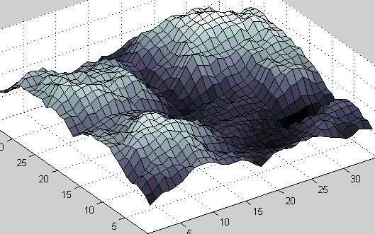
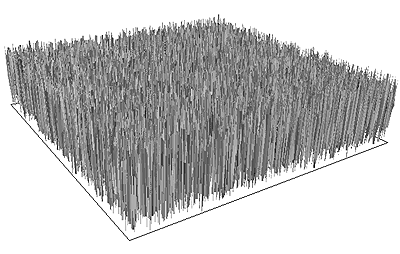

Não é um Almoço Grátis, Mas uma Caixa de Chocolates
Uma crítica ao livro de William Dembski No Free Lunch
por Richard Wein[Última modificação: 23 de abril de 2002]
É permitido copiar e imprimir esta página para uso pessoal ou educacional sem fins lucrativos.

Outros Links:
|
Conteúdo
Resumo
1. Introdução
2. Design e Natureza
3. O Método de Eliminação da Acontecimento
3.1 O Método Estatístico de Dembski
3.2 Generalizações Proscriptivas
3.3 O Argumento da Ignorância
3.4 Respostas de Dembski
3.5 Inferências Comparativas e Eliminativas
3.6 Confiabilidade e Contraexemplos
3.7 O Filtro Explicativo
4. Aplicando o Método à Natureza
4.1 Um Furacão em um Catálogo de Lixo
4.2 Complexidade Irredutível
5. Algoritmos Evolutivos
5.1 Algoritmos de Otimização de Caixa-Preta
5.2 Ajuste Fino da Função de Aptidão
5.3 Os Teoremas Sem Jantar Gratuito
5.4 A Irrelevância do NJG para os Argumentos de Dembski
6. O Método de Probabilidade Uniforme
6.1 Design Derivado
6.2 Informação Específica Complexa (CSI)
6.3 Evidências para a Interpretação de Probabilidade Uniforme
6.4 A Escolha do Espaço de Fases
6.5 A Lei de Conservação da Informação
6.6 Contraexemplo: Redes Neurais que Jogam Damas
6.7 Contraexemplo: Sequências Matemáticas
6.8 Justificação Matemática de Dembski
7. O Caso Positivo para o Design
7.1 Esboço de um Programa de Pesquisa Positivo
7.2 Testabilidade
7.3 Designers Não Encarnados
8. Dembski e Revisão por Pares
9. Conclusão
Agradecimentos
Apêndice. O Método Estatístico de Dembski Examinado
Notas
Resumo
A vida é como uma caixa de chocolates. Você nunca sabe o que vai pegar.
Forrest Gump
O objetivo do livro No Free Lunch do Dr. William Dembski é demonstrar que o design (a ação de um agente consciente) esteve envolvido no processo de evolução biológica. A crítica a seguir mostra que seus argumentos são profundamente falhos e têm pouco a contribuir para a ciência ou a matemática. Para abordar completamente os argumentos de Dembski, foi necessário um artigo extenso e, por vezes, técnico, por isso este resumo é fornecido para o benefício de leitores sem tempo para considerar os argumentos em sua totalidade.
Dembski propôs um método de inferência que, segundo ele, é uma formulação rigorosa de como reconhecemos ordinariamente o design. Se pudermos mostrar que um evento ou objeto observado tem baixa probabilidade de ocorrer sob todas as hipóteses não-design (explicações) que podemos pensar, Dembski nos diz para inferir design. Este método é puramente eliminativo—devemos inferir design quando rejeitamos todas as outras hipóteses que podemos pensar—e é comumente conhecido como um argumento do desconhecimento, ou argumento do deus dos intervalos.
Como os argumentos do "deus das lacunas" são quase universalmente reconhecidos por cientistas e filósofos da ciência como inválidos como inferências científicas, Dembski se esforça em grande medida para disfarçar a natureza de seu método. Por exemplo, ele insere um intermediário chamado complexidade especificada: após rejeitar todas as hipóteses não de design que podemos pensar, ele nos diz para inferir que o objeto em questão exibe complexidade especificada, e então afirma que a complexidade especificada é um indicador confiável de design.
O único objeto biológico ao qual Dembski aplica seu método é o flagelo da bactéria E. coli. Primeiro, ele tenta demonstrar que o flagelo não poderia ter surgido por evolução darwiniana, recorrendo a uma versão modificada do argumento de Michael Behe sobre complexidade irredutível. No entanto, o argumento de Dembski sofre da mesma falha fundamental que a de Behe: ele não permite mudanças na função de um sistema biológico conforme ele evolui.
Como o método de Dembski é supostamente baseado em probabilidade e ele prometeu aos leitores de seu trabalho anterior um cálculo de probabilidade, ele prossegue para calcular uma probabilidade para a origem do flagelo. Mas este cálculo é baseado na premissa de que o flagelo surgiu repentinamente, como uma combinação totalmente aleatória de proteínas. O cálculo é elaborado, mas totalmente irrelevante, já que nenhum biólogo evolutivo propõe que sistemas biológicos complexos apareceram dessa maneira. Na verdade, esta é a mesma premissa de homem de palha frequentemente feita por criacionistas no passado, e que foi comparada a um Boeing 747 sendo montado por um tornado soprando através de um lixão.
Este é tudo o que há no argumento principal de Dembski. Ele então faz um argumento secundário no qual ele tenta mostrar que, mesmo se sistemas biológicos complexos evoluíram por evolução não direcionada, eles só poderiam ter feito isso se um projetor tivesse ajustado finamente a função de aptidão ou inserido informação especificada complexa no início do processo.
O argumento do ajuste fino das funções de aptidão apela a um conjunto de teoremas matemáticos chamados "teoremas Sem Jantar Gratuito". Embora esses teoremas sejam perfeitamente sólidos, eles não têm as implicações que Dembski lhes atribui. Na verdade, eles não se aplicam à evolução biológica de forma alguma. O que resta do argumento de Dembski é então a alegação de que a vida só poderia ter evoluído se as condições iniciais do Universo e da Terra fossem ajustadas finamente para esse propósito. Este é um argumento antigo, geralmente conhecido como o argumento do ajuste fino cosmológico (e terrestre). Dembski não adicionou nada de novo a ele.
Informação especificada complexa (CSI) é um conceito de própria invenção de Dembski que é bastante diferente de qualquer forma de informação usada por teóricos da informação. De fato, Dembski mesmo já censurou seus críticos no passado por confundir CSI com outras formas de informação. Esta crítica mostra que CSI é definido de forma ambígua e falha em caracterizar estruturas complexas da maneira que Dembski afirma que faz. Com base neste conceito falho, ele ousa propor uma nova Lei de Conservação da Informação, que é mostrada aqui como totalmente infundada.
Dembski afirma ter feito contribuições importantes para os campos da estatística, teoria da informação e termodinâmica. No entanto, seu trabalho não foi aceito por nenhum especialista nesses campos e não foi publicado em nenhuma revista acadêmica relevante.
No Free Lunch consiste em uma coleção de argumentos anticriacionistas antigos e desgastados: deus das lacunas, complexidade irredutível, tornado em um cemitério de lixo e ajuste fino cosmológico. Dembski tenta dar uma nova vida a esses argumentos antigos ocultando-os atrás de véus de terminologia confusa e notação matemática desnecessária. O padrão de erudição é abysmal, e o livro deve ser melhor considerado como retórica pseudocientífica voltada para um público desprevenido que pode confundir o jargão matemático de Dembski com erudição acadêmica.
1. Introdução
No teatro da confusão, saber a localização das saídas é o que importa.
Mason Cooley, aforista dos EUA
O livro de William Dembski No Free Lunch: Why Specified Complexity Cannot be Purchased without Intelligence1 é o mais recente de seus muitos livros e artigos sobre inferir design na biologia e provavelmente desempenhará um papel central na promoção do pseudocientismo do design inteligente2 nos próximos anos. É a exposição mais abrangente de seus argumentos até o momento. O propósito da crítica atual é fornecer um exame crítico minucioso desses argumentos. Dembski próprio tem frequentemente reclamado que seus críticos não têm totalmente engajado seus argumentos. Acredito que essa reclamação é injustificada, embora eu concorde que algumas críticas anteriores tenham sido mal direcionadas. Esta crítica deve colocar em repouso quaisquer tais reclamações.
Como em seu trabalho anterior, Dembski define seus próprios termos de forma inadequada, atribui novos significados a termos existentes (geralmente sem aviso prévio) e emprega muitos desses termos de forma ambígua. Suas afirmações frequentemente parecem contradizer-se mutuamente. Ele introduz uma grande quantidade de notação matemática desnecessária. Portanto, grande parte deste artigo será dedicada à tarefa bastante tediosa de estabelecer exatamente o que os argumentos e alegações de Dembski realmente significam. Esforcei-me muito para encontrar interpretações caridosas, mas muitas vezes não há nenhuma a ser encontrada. Também solicitei esclarecimentos diretamente a Dembski, mas nenhum deles foi obtido.
Há algum tempo, publiquei uma crítica3 ao livro anterior de Dembski, The Design Inference,4 no fórum online Metaviews, ao qual ele contribui, apontando as ambiguidades fundamentais em seus argumentos. Sua única resposta foi chamar-me de "stalker da Internet" enquanto se recusava a abordar as questões que levantei, sob o argumento de que "a Internet é um fórum não confiável para resolver questões técnicas em estatística e filosofia da ciência".5 Ele claramente leu minha crítica, no entanto, já que agora me reconhece como tendo contribuído para seu trabalho (p. xxiv). Embora algumas das ambiguidades que destaquei naquela crítica anterior tenham sido resolvidas em seu volume atual, outras permaneceram e muitas novas foram adicionadas.
Alguns leitores podem não gostar do tom francamente desdenhoso que adotei em relação ao trabalho de Dembski. Os críticos do pseudocientismo do design inteligente enfrentam um dilema. Se discutirem o assunto em termos acadêmicos e educados, os propagandistas do design inteligente usam isso como evidência de que seus argumentos estão recebendo atenção séria de estudiosos, sugerindo que isso implica que deve haver algum mérito em seus argumentos. Se os críticos simplesmente ignorarem os argumentos do design inteligente, os propagandistas implicam que isso ocorre porque os críticos não conseguem respondê-los. Minha solução para este dilema é refutar minuciosamente os argumentos, ao mesmo tempo em que fica claro que o faço sem conceder a esses argumentos qualquer respeito.
Esta crítica pressupõe um conhecimento básico de matemática, teoria da probabilidade e teoria da evolução por parte do leitor. A fim de simplificar alguns dos meus argumentos, releguei muitos detalhes às notas de fim, que podem ser acessadas por meio de links numerados. Em alguns casos, afirmações que não são substantiadas no corpo do texto são apoiadas por argumentos nas notas de fim.
Citações consistindo apenas de números de página referem-se a páginas em No Free Lunch.
Infelizmente, alguns navegadores mais antigos não conseguem exibir uma série de símbolos matemáticos que são utilizados neste artigo. O Netscape 4 é um desses navegadores.
2. Design and Nature
No outono, quando as florestas começam a ficar verdes,
Vou tentar explicar o que quero dizer.
Lewis Carroll, Através do Espelho (Humpty Dumpty)
Para um livro que trata inteiramente da inferência de design, é surpreendente descobrir que No Free Lunch não define claramente o termo. Design é equiparado a agência inteligente, mas esse termo também não é definido. Ele também é descrito negativamente, como o complemento da necessidade (processos determinísticos) e da chance (processos estocásticos). No entanto, os processos determinísticos e estocásticos são normalmente definidos como complementos mutuamente exaustivos: aqueles que não envolvem qualquer incerteza e aqueles que envolvem. Portanto, não está claro o que, se alguma coisa, resta após a exclusão dessas duas categorias. Dembski associa design às ações de animais, seres humanos e deidades, mas parece negar a etiqueta às ações de computadores, não importa quão inovador possa ser o seu resultado. O que distingue uma mente animal, por exemplo, de um computador? Obviamente, existem muitas diferenças físicas. Mas por que as ações de um devem ser consideradas design e não as do outro? A única explicação que consigo pensar é que um é consciente e o outro, presumivelmente, não. Concluo que, quando ele infere design, Dembski significa que uma mente consciente esteve envolvida.
Parece que Dembski considera a consciência a ser um tipo muito especial de processo, que não pode ser atribuído às leis físicas. Ele nos diz que o design inteligente não é uma explicação mecanicista (pp. 330-331). Dembski certamente não estaria sozinho nessa visão, embora não fique nada claro o que significa que um processo seja não-mecanicista. Parece, no entanto, que tal processo está fora do domínio da causa e do efeito. Isso levanta todo tipo de difíceis questões filosóficas, que não tentarei considerar aqui. Mesmo que aceitemos que processos não-mecanicistas existem, Dembski não nos dá razão para pensar que a consciência (ou o design inteligente) seja o único tipo possível de processo não-mecanicista. No entanto, ele parece assumir que esse é o caso.
Até mesmo com essa interpretação, ainda nos deparamos com um problema. No exemplo de Caputo (p. 55), Dembski usa sua inferência de design para distinguir entre duas explicações possíveis, ambas envolvendo as ações de um ser consciente: ou Caputo preencheu as cédulas de forma justa ou ele trapaceou. Dembski considera apenas a segunda dessas alternativas como design. Mas ambas as explicações envolvem um agente consciente. Poderia-se dizer que, se Caputo preencheu de forma justa, ele estava apenas imitando a ação de um dispositivo mecânico, por isso isso não conta. Mas isso levantaria a questão de exatamente o que um dispositivo mecânico é capaz de fazer. Um computador sofisticado não seria capaz de trapacear? De fato, existe alguma ação de uma mente humana que não possa, em princípio, ser imitada por um computador suficientemente sofisticado? Se não, como podemos distinguir o design consciente de um computador imitando design? Mesmo que você duvide que, em princípio, um computador possa imitar todas as ações de uma mente humana, considere se ele poderia imitar as ações de um rato, o que Dembski também considera um agente inteligente capaz de design (pp. 29-30).
Para escapar desse dilema, Dembski invoca o conceito de intencionalidade derivada: a saída de um computador pode "exibir design", mas o design foi realizado pelo criador do computador e não pelo próprio computador (pp. 223, 326). Sempre que um fenômeno exibe design, deve haver um designer (uma mente consciente, na minha interpretação) em algum lugar da cadeia causal de eventos que levam a esse fenômeno.
Dembski afirma que a ciência contemporânea rejeita o design como um modo legítimo de explicação (p. 3). Mas ele mesmo fornece exemplos de cientistas fazendo inferências envolvendo agência humana, como a inferência feita por arqueólogos de que certas pedras são pontas de flecha feitas por humanos primitivos (p. 71), e ele rotula essas "inferências de design". Ele está afirmando que tais arqueólogos são mavericks operando fora dos limites da ciência mainstream? Eu não acho que sim. Eu acho que o que Dembski realmente quer afirmar aqui é que a ciência contemporânea não permite explicações envolvendo processos não-mecanicistas, e ele está projetando sua própria crença de que o design é um processo não-mecanicista sobre a ciência contemporânea. Mas mesmo que seja verdade que a ciência não permite explicações envolvendo processos não-mecanicistas, ela certamente permite que a ação de uma mente seja inferida onde não precisa ser feito nenhum julgamento sobre se os processos mentais são mecânicos ou não (e tal julgamento é geralmente desnecessário).
Uma interpretação alternativa da alegação de Dembski poderia ser que a ciência contemporânea rejeita o design como um modo legítimo de explicação ao contabilizar a origem de organismos biológicos. Se esta é a sua intenção, então eu rejeito a alegação. Se descobríssemos os restos de uma antiga civilização alienígena com registros detalhados de como os alienígenas manipularam a evolução dos organismos, então eu acho que a ciência mainstream teria pouca dificuldade em aceitar isto como evidência de design em organismos biológicos.
A palavra natural tem sido fonte de muita confusão no debate sobre o design inteligente. Ela possui dois significados distintos: um é o complemento de artificial, ou seja, envolvendo agência inteligente; o outro é o complemento de sobrenatural. Dembski nos diz que ele usará a palavra no primeiro sentido: "...estou colocando causas naturais em contraposição a causas inteligentes" (p. xiii). Em seguida, ele afirma que a ciência contemporânea está vinculada a um princípio de naturalismo metodológico:
De acordo com o naturalismo metodológico, ao explicar qualquer fenômeno natural, as ciências naturais são permitidas invocar apenas causas naturais, excluindo causas inteligentes. [p. xvi]
Porém, o naturalismo metodológico no qual a maioria dos cientistas insiste exige apenas a rejeição de explicações sobrenaturais, não explicações envolvendo agência inteligente. De fato, acabamos de ver que a ciência contemporânea permite explicações envolvendo designers humanos e, argumenta-se, seres alienígenas inteligentes. Talvez o que Dembski realmente queira dizer seja que o naturalismo metodológico rejeita a invocação de um "designer não encarnado" (para usar o termo dele).6
Dembski introduz o termo hipótese do acaso para descrever explicações propostas que dependem inteiramente de causas naturais. Isso inclui processos que compreendem elementos tanto do acaso quanto da necessidade (p.15), bem como processos puramente determinísticos. Pode parecer estranho referir-se a hipóteses puramente determinísticas como hipóteses do acaso, mas Dembski nos diz que "a necessidade pode ser vista como um caso especial do acaso em que a distribuição de probabilidade que governa a necessidade colapsa todas as probabilidades para zero ou um" (p.71). Como Dembski define o design como o complemento do acaso e da necessidade, segue-se que uma hipótese do acaso poderia igualmente (e com maior clareza) ser chamada de hipótese não-design. E como ele define causas naturais como o complemento do design, também podemos referir-nos às hipóteses do acaso como hipóteses naturais. O uso de Dembski do termo hipótese do acaso causou considerável confusão no passado, pois muitas pessoas tomaram o acaso para significar puramente aleatório, ou seja, todos os resultados sendo igualmente prováveis. Embora o uso de Dembski tenha sido esclarecido em No Free Lunch, acredito que ele ainda tem o potencial de confundir. Por causa da consistência com o trabalho de Dembski, usarei geralmente o termo hipótese do acaso, mas mudarei para o sinônimo hipótese natural ou hipótese não-design quando achar que isso aumentará a clareza.
3. O Método de Eliminação da Chance
Ignorância, senhora, pura ignorância.
Samuel Johnson (ao ser perguntado como chegou a definir uma palavra incorretamente em seu dicionário)
No Capítulo 2 de No Free Lunch, Dembski descreve um método de inferir design com base no que ele chama de Argumento de Eliminação de Chance Genérico. Vou me referir a este método como o método de eliminação de chance. Este método assume que observamos um evento e desejamos determinar se algum design esteve envolvido naquele evento.
O método de eliminação por acaso é eliminativo—ele depende da rejeição de hipóteses de acaso. Dembski apresenta dois métodos para eliminar hipóteses de acaso: um método estatístico para eliminar hipóteses individuais de acaso, e generalizações proscriptivas, para eliminar categorias inteiras de hipóteses de acaso.
3.1 Método Estatístico de Dembski
A intuição fundamental por trás do método estatístico de Dembski é esta: observamos um evento (resultado) particular E e desejamos verificar se uma hipótese de acaso dada H fornece uma explicação razoável para este resultado.7 Selecionamos uma região de rejeição apropriada rejection region (um conjunto de resultados potenciais) R, onde E está em R, e calculamos a probabilidade de observar um resultado nesta região de rejeição dado que H é verdadeiro, ou seja, P(R|H). Se P(R|H) < α, onde α é um limite de probabilidade pequena apropriado, consideramos implausível que um evento de tal probabilidade pequena tenha ocorrido, e, portanto, rejeitamos a hipótese de acaso H que deu origem a esta probabilidade pequena.
É importante notar que precisamos combinar as probabilidades de todos os resultados em uma região de rejeição apropriada, e não apenas considerar a probabilidade do resultado particular observado, porque os resultados podem individualmente ter probabilidades pequenas sem que sua ocorrência seja significativa. Uma região de rejeição que é apropriada para uso dessa forma é dita ser desvinculável do resultado observado, e uma descrição de uma região de rejeição desvinculável é chamada de especificação (embora Dembski frequentemente use os termos região de rejeição e especificação de forma intercambiável).
Considere o exemplo favorito de Dembski, o caso Caputo (pp. 55-58). Um político democrata, Nicholas Caputo, era responsável por realizar sorteios aleatórios para determinar a ordem em que os dois partidos (Democrata e Republicano) seriam listados nos papéis de votação. Ocupar o primeiro lugar no papel de votação era conhecido por conferir ao partido uma vantagem na eleição, e observou-se que em 40 dos 41 sorteios, Caputo sorteou um democrata para ocupar essa posição favorável. Em 1985, alegou-se que Caputo havia manipulado deliberadamente os sorteios para dar uma vantagem injusta ao seu próprio partido. O tribunal que considerou a alegação contra Caputo observou que a probabilidade de escolher o seu próprio partido 40 vezes em 41 era inferior a 1 em 50 bilhões, e concluiu que "diante dessas probabilidades, poucas pessoas razoáveis aceitarão a explicação da chance cega".8
Na condução de sua própria análise deste evento, Dembski chega à mesma probabilidade que o tribunal e explica o raciocínio por trás de sua conclusão. A hipótese de chance H que ele considera é que Caputo realizou os sorteios de forma justa, com cada parte (D e R) tendo uma probabilidade de 1/2 de ser selecionada para o primeiro lugar em cada ocasião.
Suponha que tenhamos observado uma sequência típica de 41 extratos, como a seguinte:
DRRDRDRRDDDRDRDDRDRRDRRDRRRDRRRDRDDDRDRDD
A probabilidade dessa sequência exata ocorrer, dado H, é extremamente pequena: (1/2)41 = 4,55 × 10-13. No entanto, a menos que aquela sequência específica tivesse sido prevista com antecedência, não consideraríamos o resultado de forma alguma excepcional, apesar de sua baixa probabilidade, pois era muito provável que alguma sequência aleatória semelhante viesse a ocorrer. A sequência histórica, por outro lado, continha apenas um R, e, portanto, parecia-se com isto:
DDDDDDDDDDDDDDDDDDDDDDRDDDDDDDDDDDDDDDDDD
A segunda sequência (chamemo-la de E) tem exatamente a mesma probabilidade que a primeira, ou seja, P(E|H) = 4,55 × 10-13, mas desta vez consideraríamos-a excepcional, porque a probabilidade de observar tantos Ds é extremamente pequena. Qualquer resultado que mostrasse tantos Ds quanto este (40 ou mais Ds em 41 sorteios) teria sido considerado pelo menos tão excepcional, de modo que a probabilidade que nos interessa é a probabilidade de observar 40 ou mais Ds. "40 ou mais Ds", então, é a nossa especificação e, por coincidência, existem 42 sequências diferentes que correspondem a esta especificação, de modo que P(R|H) = 42 × P(E|H) = 1,91 × 10-11, ou seja, aproximadamente 1 em 50 bilhões. Em outras palavras, a probabilidade que nos interessa aqui não é a probabilidade da sequência exata que observamos, mas a probabilidade de observar algum resultado que corresponda à especificação. Se decidirmos que esta probabilidade é pequena o suficiente, rejeitamos H, ou seja, inferimos que os sorteios de Caputo não foram justos. A partir de agora, usarei a expressão "probabilidade pequena" para significar "probabilidade abaixo de um limite de probabilidade apropriado".
Para aplicar o método de Dembski, precisamos saber como selecionar uma especificação apropriada e um limite de probabilidade. Dembski expõe extensivamente um conjunto de regras para selecionar esses parâmetros, mas elas podem ser resumidas da seguinte forma:
-
Uma especificação apropriada é meramente qualquer uma que possa ser derivada (em algum sentido solto) do conhecimento de fundo que estava disponível para nós antes de observar o evento em questão. Por exemplo, quando Dembski aplica seu método ao flagelo bacteriano--o único exemplo biológico dele--ele não se preocupa em usar as regras técnicas que desenvolveu anteriormente, nem mesmo em declarar a especificação explicitamente. Lendo entre as linhas, sua especificação parece ser "qualquer coisa com a função de um motor rotativo externo", e a única justificativa que ele dá para essa especificação é a afirmação de que "os humanos desenvolveram motores rotativos externos muito antes de descobrirem que o flagelo era tal máquina" (p. 289).
-
Dembski distingue entre limites de probabilidade locais e universais. Um limite de probabilidade local é aquele que é calculado para o propósito de um teste estatístico particular.9 O procedimento para calcular tal limite é difícil e altamente arbitrário (p. 83), então Dembski geralmente recorre ao seu limite de probabilidade universal. Este é um número muito pequeno, 10-150 (ou seja, 1 em 10150), que Dembski nos diz ser o menor limite de probabilidade que precisamos usar alguma vez, e que podemos sempre usar na ausência de um limite de probabilidade local adequado. Ele o calcula multiplicando o número de partículas elementares no Universo, o número máximo possível de transições de partículas elementares (o inverso do tempo de Planck) por segundo, e o número de segundos em um bilhão vezes a idade atual do Universo, para obter uma figura que, ele argumenta, é o número máximo de recursos probabilísticos que precisamos considerar alguma vez (p. 22):
1080 × 1045 × 1025 = 10150
Embora eu acredite que o método estatístico de Dembski seja seriamente defeituoso, a questão não é importante para minha refutação da inferência de design de Dembski. Portanto, para o restante do corpo principal desta crítica, assumirei, por argumentação, que o método é válido. Uma discussão sobre os defeitos será deixada para um apêndice. Vale notar, no entanto, que este método não foi publicado em nenhuma revista profissional de estatística e parece não ter sido reconhecido por nenhum outro estatístico.
3.2 Generalizações Proscritivas
Dembski argumenta que podemos eliminar categorias inteiras de hipóteses de acaso por meio de generalizações proscriptivas. Por exemplo, ele menciona a segunda lei da termodinâmica, que proíbe a possibilidade de uma máquina de movimento perpétuo. Ele descreve a lógica de tais generalizações em termos de invariantes matemáticos (p. 274), embora isso não adicione absolutamente nada ao seu argumento.
Aceito que generalizações prescritivas possam, por vezes, ser feitas, e Dembski é bem-vindo a usá-las para eliminar categorias específicas de hipóteses de acaso. Mas não existe nenhuma generalização prescritiva que possa excluir todas as hipóteses de acaso. Além disso, a sua alegação de ter encontrado uma generalização prescritiva contra a evolução darwiniana de sistemas irredutivelmente complexos é vazia (ver 4.2 abaixo).
3.3 O Argumento da Ignorância
A conclusão do Argumento de Eliminação da Chance Genérica (passo #8) é enunciada por Dembski da seguinte forma:
S [o sujeito que faz a inferência] está justificado em inferir que E [o resultado observado] não ocorreu de acordo com nenhuma das hipóteses de acaso em {Hi}i em I e, portanto, que E exibe complexidade especificada. [p. 73]
{Hi} é o conjunto de todas as hipóteses de acaso que acreditamos "poderiam ter operado para produzir E" (p.72). Dembski também escreve:
Mas o que acontece uma vez que se encontra algum mecanismo causal que explica uma dada instância de complexidade especificada? Algo que é especificado e complexo é altamente improvável em relação a todos os mecanismos causais atualmente conhecidos. Consequentemente, para um mecanismo causal surgir e explicar algo que anteriormente era considerado especificado e complexo significa que o item em questão, de fato, não é mais especificado e complexo em relação ao novo mecanismo causal encontrado. [p. 330]
Portanto, quando eliminamos todas as hipóteses de acaso que podemos imaginar, inferimos que o evento foi altamente improvável em relação a todos os mecanismos causais conhecidos, e chamamos isso de complexidade especificada. Posteriormente, Dembski nos diz que uma inferência de complexidade especificada deve levar inevitavelmente a uma inferência de design. Dado isso, não está claro que a noção de complexidade especificada esteja cumprindo qualquer propósito útil aqui. Por que não eliminar o intermediário e ir diretamente do Argumento de Eliminação de Acaso Genérico ao design? Infelizmente, a introdução deste intermediário serve para causar considerável confusão, porque Dembski equivoca-se entre este sentido de complexidade especificada e o sentido atribuído pelo seu método de inferência de probabilidade uniforme (que explicarei na seção 6). Para ajudar a esclarecer a confusão, referirei-me a este sentido intermediário como complexidade especificada eliminativa e ao outro sentido como complexidade especificada de probabilidade uniforme. Observe que a complexidade especificada de Dembski não é uma quantidade: um evento simplesmente exibe complexidade especificada ou não.
Assim, vemos que o método de eliminação do acaso é puramente eliminativo. Ele nos instrui a inferir design quando tivermos descartado todas as hipóteses de acaso (ou seja, não-design) que pudermos imaginar. A hipótese do design não diz absolutamente nada sobre a identidade, natureza, objetivos, capacidades ou métodos do designer. Ela diz, em suma, "um designer fez isso".10
Este tipo de argumento é comumente conhecido como argumento da ignorância ou argumento do deus dos intervalos. Portanto, não há perigo de mal-entendido; deixe-me esclarecer que a acusação de argumento da ignorância não é uma afirmação de que aqueles que fazem o argumento são ignorantes dos fatos, ou mesmo que estão a falhar em utilizar os fatos disponíveis. Os defensores de um argumento da ignorância estão a exigir que a sua explicação seja aceite apenas porque a comunidade científica é ignorante (pelo menos parcialmente) de como ocorreu um evento, em vez de porque a sua própria explicação tenha sido demonstrada ser uma boa. Note que um argumento baseado na ignorância científica difere da falácia dedutiva do argumento da ignorância. A falácia dedutiva assume a seguinte forma: "A minha proposição não foi provada falsa, logo deve ser verdadeira." O argumento científico da ignorância não é uma falácia dedutiva, porque as inferências científicas não são argumentos dedutivos.
Um argumento de Deus dos intervalos é um argumento de ignorância no qual a hipótese padrão, a ser aceita quando não há hipótese alternativa disponível, é "Deus fez isso". Como Dembski nos diz que seu critério apenas infere a ação de um designer desconhecido, e não necessariamente um divino, o termo designer dos intervalos poderia ser mais apropriado aqui, mas acho que é razoável usar o termo mais familiar, já que os argumentos seguem o mesmo padrão eliminativo e Dembski deixou claro que o designer que tem em mente é o Deus cristão. O argumento do Deus dos intervalos argumento não deve ser confundido com uma teologia do Deus dos intervalos. Esta última propõe que as ações de Deus são restritas às áreas das quais carecemos de conhecimento, mas não oferece isso como um argumento para a existência de Deus.
Dembski não apresenta um bom argumento para atribuir tal status privilegiado à hipótese do design. Por que deveríamos preferir "um designer desconhecido fez isso" a "causas naturais desconhecidas fizeram isso" ou "não sabemos o que fez isso"? Além disso, como veremos, ele nos instrui a aceitar o design por eliminação mesmo quando já temos algumas ideias de contorno sobre como as causas naturais poderiam tê-lo feito.
3.4 Respostas de Dembski à Acusação de Argumento do Desconhecimento
Como os argumentos baseados na ignorância são quase universalmente rejeitados como inválidos por cientistas e filósofos da ciência, Dembski é sensível a essa acusação, mas suas tentativas de evitar enfrentar o óbvio são meras elusões.
Em resposta a essa crítica, observe primeiro que, embora a complexidade especificada seja estabelecida por meio de um argumento eliminativo, não é justo dizer que ela é estabelecida por meio de um argumento puramente eliminativo. Se o argumento fosse puramente eliminativo, poderia-se justificar dizer que a transição da complexidade especificada para uma inteligência projetora é um argumento de ignorância (ou seja, não X, portanto Y). Mas, ao contrário da abordagem de Fisher para testes de hipóteses, na qual hipóteses individuais de acaso são eliminadas sem referência ao conjunto inteiro de hipóteses de acaso relevantes que poderiam explicar um fenômeno, a complexidade especificada pressupõe que o conjunto inteiro de hipóteses de acaso relevantes tenha sido primeiro identificado. Isso requer considerável conhecimento de fundo. Além disso, é necessário considerável conhecimento de fundo para encontrar o padrão correto (ou seja, a especificação) para eliminar todas aquelas hipóteses de acaso e, assim, inferir o design. [p. 111]
Dembski está distorcendo a acusação de argumento da ignorância. Não se trata de quanto conhecimento temos utilizado. O conhecimento científico é sempre incompleto. O método de eliminação de chances é puramente eliminativo porque não tenta considerar os méritos da hipótese do design, mas apenas se baseia na eliminação das alternativas disponíveis.
Inferências de design que inferem design ao identificar complexidade especificada não são, portanto, puramente eliminativas. Elas não apenas excluem, mas excluem de um conjunto exaustivo no qual o design é tudo o que resta uma vez que a inferência tenha feito seu trabalho (o que não significa que o conjunto seja logicamente exaustivo; antes, é exaustivo em relação à investigação em questão — isto é tudo o que podemos sempre fazer na ciência). Inferências de design, ao identificar complexidade especificada, excluem tudo o que, por sua vez, poderia excluir o design. [p. 111]
A frase de Dembski "exaustiva em relação à investigação em questão" é o tipo de circunlocução em que ele se destaca. Significa apenas que o conjunto é tão exaustivo quanto podemos torná-lo. Em outras palavras, é uma maneira sofisticada de dizer que eliminamos todas as hipóteses de acaso que poderíamos ter pensado.
Portanto, as inferências de design eliminam o acaso no sentido global de fechar a porta a todas as explicações relevantes baseadas no acaso. É verdade que isso não pode ser feito com absoluta finalidade, uma vez que sempre existe a possibilidade de que alguma distribuição de probabilidade crucial tenha sido ignorada. Não obstante, não basta que o cético do design apenas note que adicionar uma nova explicação baseada no acaso à mistura pode perturbar uma inferência de design. Em vez disso, o cético do design precisa explicitamente propor uma nova explicação baseada no acaso e argumentar em favor de sua relevância para o caso em questão. [pp. 67-68]
Este é um argumento claro por ignorância. A menos que os céticos do design possam propor uma explicação natural explícita, Dembski nos diz, devemos inferir o design.
Para qualquer evento, existe uma distribuição de probabilidade que concentra toda a probabilidade naquele evento e, portanto, atribui-lhe uma probabilidade de um. Por isso, não faz sentido criticar minha generalização da abordagem de Fisher para testes de hipóteses por não considerar todas as hipóteses de acaso possíveis. [p. 70]
Dembski não está sendo criticado por não eliminar todas as hipóteses de acaso possíveis, mas por adotar um método puramente eliminativo em primeiro lugar.
Arqueólogos inferem que certos fragmentos de rocha são pontas de flecha. Detetives inferem que certas mortes foram deliberadas. Criptógrafos inferem que certas sequências de símbolos que parecem aleatórias são, na verdade, mensagens criptografadas. Em todos os casos, eles podem estar errados, e um conhecimento adicional pode revelar uma hipótese de acaso plausível por trás do que originalmente parecia ser projetado. Mas tais possibilidades puras por si só não fazem nada para derrubar nossa confiança nas inferências de projeto. [p. 71]
Sim, essas inferências de design são falíveis, assim como todas as inferências científicas. Isso não é o problema. A diferença é que essas inferências não são puramente eliminativas. Os especialistas em questão têm em mente um tipo particular de designer inteligente (seres humanos) sobre o qual sabem muito sobre as capacidades e motivações. Portanto, podem comparar os méritos de tal explicação com os méritos de outras explicações.
Se Dembski deseja defender argumentos de Deus dos intervalos como um modo legítimo de inferência científica, ele é bem-vindo a tentar. O que é menos bem-vindo são suas tentativas de disfarçar seu método como algo mais palatável.
3.5 Inferências Comparativas e Eliminativas
Uma maneira pela qual Dembski tenta defender seu método é sugerir que não há alternativa viável. A alternativa óbvia, no entanto, é considerar todas as hipóteses disponíveis, incluindo hipóteses de design, em seus méritos, e então selecionar a melhor delas. Esta é a posição adotada por quase todos os filósofos da ciência, embora discordem sobre como avaliar os méritos das hipóteses. Não parece haver razão para tratar inferências envolvendo agentes inteligentes de maneira diferente, neste respeito, de outras inferências científicas.
Dembski argumenta extensivamente contra a legitimidade das abordagens comparativas para inferência (pp. 101-110, 121n59). Não abordarei os detalhes específicos da abordagem de verossimilhança, na qual ele concentra seu ataque. Deixo isso para seus defensores. No entanto, sua rejeição total das inferências comparativas é claramente insustentável. Quando dispomos de duas ou mais hipóteses plausíveis disponíveis --sejam elas que envolvam agentes inteligentes ou não-- devemos utilizar algum método comparativo para decidir entre elas.
Considere, por exemplo, o caso dos arqueólogos que fazem inferências sobre se pedras de sílex são pontas de flecha feitas por humanos primitivos ou pedaços de rocha de ocorrência natural. Vamos considerar um caso limítrofe, no qual um painel de arqueólogos está dividido quanto a se uma dada pedra de sílex, retirada de um sítio habitado por humanos primitivos, é uma ponta de flecha. Agora, suponha que o mesmo painel tivesse sido mostrado a mesma pedra de sílex, mas informado de que ela veio de um local que nunca foi habitado por humanos que utilizavam sílex, digamos, a Antártida. Os arqueólogos agora estariam muito mais inclinados a duvidar que a pedra de sílex foi feita pelo homem, e mais inclinados a atribuí-la a causas naturais. Uma proporção menor (talvez nenhuma) inferiria agora design. A inferência de design, portanto, foi claramente influenciada por fatores que afetam a plausibilidade da hipótese de design: se humanos que utilizavam sílex eram conhecidos por terem vivido na área. A inferência não se baseava apenas na eliminação de hipóteses naturais.
Não é minha intenção argumentar a favor de qualquer método específico para comparar hipóteses. Filósofos da ciência propuseram uma série de abordagens comparativas, geralmente envolvendo alguma combinação dos seguintes critérios:
- Verossimilhança. A probabilidade de a evidência ocorrer dada a hipótese em questão.
- Probabilidade a priori ou plausibilidade. Nosso grau de crença na hipótese antes de observar a evidência, ou assumindo que não a havíamos observado.
- Poder preditivo. O grau em que a hipótese determina quais observações potenciais são possíveis (ou prováveis) e quais são impossíveis (ou improváveis).
- Falsificabilidade. O grau em que a hipótese "corre o risco" de ser falsificada por novas evidências.
- Princípio da parcimônia. O grau em que a hipótese observa o princípio da navalha de Occam: "Não multiplique entidades desnecessariamente."11
Outros critérios frequentemente citados incluem poder explicativo, histórico de desempenho, abrangência, coerência e elegância.
Em métodos comparativos opostos, Dembski argumenta que hipóteses podem ser eliminadas isoladamente sem que necessariamente exista um concorrente superior. Em termos práticos, concordo, embora eu suspeite que não eliminaríamos uma hipótese a menos que tivéssemos na mente que existia uma possibilidade plausível de uma melhor explicação. Não nego que possamos eliminar uma hipótese sem ter uma melhor em mente; nego que possamos aceitar uma hipótese sem ter considerado seus méritos, como Dembski nos faria fazer no caso de sua hipótese de design. Se todas as hipóteses disponíveis pontuarem muito mal de acordo com nossos critérios, pode ser melhor rejeitá-las todas e simplesmente dizer "não sabemos".
3.6 Confiabilidade e Contraexemplos
Dembski argumenta, com base em uma inferência indutiva, que o método de eliminação de chances é confiável:
Primeiro (seção 1.6) apresentei um argumento indutivo, demonstrando que em todos os casos em que conhecemos a história causal e em que a complexidade especificada estava envolvida, uma inteligência também estava envolvida. A generalização indutiva que se segue é que todos os casos de complexidade especificada envolvem inteligência. [p. 110]
Deixando de lado a questão de se tal indução seria justificada se sua premissa fosse verdadeira, vamos apenas considerar se a premissa é verdadeira ou não. Contrariamente à afirmação de Dembski, sua seção 1.6 não demonstrou nada disso. Na verdade, os únicos casos em que sabemos que o método de Dembski foi usado para inferir design são os dois exemplos que Dembski descreve ele mesmo: o caso Caputo e o flagelo bacteriano. E em nenhum desses casos o design foi estabelecido independentemente.
Dembski quer que acreditemos que seu método de inferência é basicamente o mesmo método já utilizado em nossas inferências cotidianas e científicas de design. Já argumentei que isso é falso. Mas mesmo que, por argumentação, supomos que nossas inferências típicas de design são realmente baseadas na abordagem puramente eliminativa proposta por Dembski, não é difícil encontrar contraexemplos, nos quais o design foi inferido incorretamente devido à ignorância da verdadeira causa natural:
-
Anéis de fadas. Estes são anéis de cogumelos causados por um fungo que se espalha pela grama a uma taxa uniforme a partir de um ponto de origem. Os cogumelos manifestam-se na borda externa do círculo afetado. Antes de a causa ser conhecida, estes anéis eram frequentemente atribuídos a designers inteligentes ("fadas"). Se considerarmos a hipótese de que os cogumelos estavam localizados aleatoriamente por toda uma pradaria (com uma distribuição de probabilidade uniforme), a probabilidade de eles formarem um círculo bem definido é claramente pequena o suficiente para justificar a rejeição desta hipótese (através do uso de uma cota de probabilidade local apropriada, se não a cota de probabilidade universal de Dembski).12 Usando o método de eliminação de chances de Dembski, a complexidade especificada (e, portanto, o design) teria sido inferida erroneamente.
-
Crateras lunares. Ao observar as crateras principais da Lua, Johannes Kepler concluiu que elas eram demasiado circulares para terem ocorrido por acaso, e, portanto, devem ter sido criadas por habitantes da Lua. Se considerarmos a hipótese de que as crateras foram formadas a partir de muitas colinas individuais, e que estas colinas estavam distribuídas aleatoriamente pela superfície da Lua, então a probabilidade de elas formarem círculos tão bem definidos é claramente pequena o suficiente para rejeitar esta hipótese. Usando o método de eliminação de chances de Dembski, a complexidade especificada (e, portanto, o design) teria sido inferida, mas agora sabemos que estas crateras têm uma explicação natural — impactos de objetos em queda. Devo este exemplo a Dembski próprio, que o descreve13 mas falha em notar que ele fornece um contraexemplo à sua alegação.
É possível que Dembski objetasse que sua alegação ("em todos os casos em que conhecemos a história causal e em que a complexidade especificada esteve envolvida, uma inteligência também esteve envolvida") se referisse apenas a casos em que observamos complexidade especificada hoje. Mas, por definição, esses são casos em que não temos uma explicação natural plausível. Se tivéssemos uma, não inferiríamos complexidade especificada. Se conhecemos a história causal e ela não foi uma causa natural, deve ter sido design. Portanto, se esta é a interpretação de Dembski, sua alegação é uma tautologia. Ela diz que, sempre que a causa é conhecida como sendo design, a causa é design! Não se pode fazer uma inferência indutiva a partir de uma tautologia.
Não seria proveitoso para Dembski alegar que estes são casos de design derivado (veja 6.1 abaixo), por exemplo, que cogumelos e o sistema solar foram originalmente projetados. O método de eliminação de chances infere design no evento particular que é alegado ter pequena probabilidade de ocorrer sob causas naturais. Por exemplo, no caso do flagelo, Dembski alega que o design esteve envolvido na origem do próprio flagelo, e não apenas indiretamente em termos da Terra ou do Universo terem sido projetados.
3.7 O Filtro Explicativo
O método de eliminação por acaso é inicialmente apresentado em uma forma simplificada chamada Filtro Explicativo. O critério para que o filtro reconheça o design é denominado critério de complexidade-especificação. Infelizmente, o uso dessa conta simplificada causou considerável confusão no passado, porque possui duas características enganosas:
-
A descrição do Filtro Explicativo menciona pouco o conceito de hipóteses de acaso e sugere que precisamos considerar apenas uma distribuição de probabilidade. O fluxograma do filtro (p. 13) deveria conter um loop, a ser executado para cada hipótese de acaso. Muitos leitores do trabalho passado de Dembski foram levados à conclusão errônea de que precisamos calcular a probabilidade apenas em relação a uma distribuição de probabilidade uniforme.
-
O Filtro Explicativo possui nós separados para complexidade (que Dembski usa aqui como sinônimo de improbabilidade) seguido por especificação, como se fossem dois critérios separados. Mas, como vimos acima, não podemos calcular a probabilidade até que tenhamos formulado uma especificação. Muitos leitores de Dembski no passado interpretaram erroneamente o filtro da seguinte maneira: note que o resultado observado é especificado (em algum sentido) e então calcule a probabilidade desse único resultado (quando deveriam ter calculado a probabilidade de uma região inteira de rejeição).
Embora Dembski tenha feito algumas tentativas de esclarecer a situação em No Free Lunch, seu uso contínuo do Filtro Explicativo em sua forma altamente enganosa é inexplicável. E a desorientação não se limita ao próprio Filtro Explicativo. Ela ocorre em outros lugares também, em declarações como esta:
Determinar se um sistema complexamente irredutível exibe complexidade especificada envolve duas coisas: demonstrar que o sistema é especificado e calcular sua probabilidade... [p. 289]
4. Aplicando o Método à Natureza
Ele usa estatísticas como um bêbado usa postes de luz—para apoio, não para iluminação.
Andrew Lang (1844-1912), poeta e romancista
4.1 Um Furacão em um Desperdício
Há vários anos que Dembski alegou ter detectado design na biologia aplicando seu método de inferência. No entanto, até a publicação de No Free Lunch, ele nunca forneceu ou citou os detalhes de qualquer tal aplicação. Portanto, os críticos aguardavam ansiosamente o cálculo de probabilidade de longa data prometido que sustentaria a alegação. Embora eu, por um lado, não esperasse um cálculo convincente, até eu fiquei surpreso ao descobrir que Dembski nos ofereceu nada mais do que uma variante do antigo "homem de palha" criacionista "furacão em um cemitério de lixo"14, ou seja, a probabilidade de uma estrutura biológica ocorrer por combinação puramente aleatória de componentes.
A única estrutura biológica à qual Dembski aplica seu método é o flagelo da bactéria E. coli. Como seu método exige que ele comece determinando o conjunto {Hi} de todas as hipóteses de acaso que "poderiam ter operado para produzir E [o resultado observado]" (p. 72), esperaria-se uma identificação explícita da hipótese de acaso em consideração. Dembski não fornece tal identificação explícita, e o leitor fica à mercê de inferi-la a partir dos detalhes do cálculo. Talvez a razão pela qual Dembski falhou em identificar sua hipótese de acaso seja que, quando claramente nomeada, ela é tão transparentemente um homem de palha. Nenhum biólogo propõe que o flagelo apareceu por combinação puramente aleatória de proteínas – eles acreditam que evoluiu por seleção natural – e todos concordariam que a probabilidade de aparência por combinação aleatória é tão ínfima que isso é insatisfatório como uma explicação científica. Portanto, para Dembski fornecer um cálculo de probabilidade baseado neste cenário absurdo é um desperdício de tempo. Não há necessidade de considerar se o cálculo de Dembski está correto, porque é totalmente irrelevante para a questão. No entanto, como Dembski não declara claramente que baseou seu cálculo em uma hipótese de combinação puramente aleatória, descreverei o cálculo brevemente a fim de demonstrar que este é o caso.
Dembski nos diz que devemos multiplicar três probabilidades parciais para chegar à probabilidade de um "objeto combinatório discreto":
pdco = porig × plocal × pconfig
-
plocal é a probabilidade de uma coleção adequada de proteínas ser extraída de um conjunto de proteínas existentes que inclui as necessárias. Dembski assume que as proteínas são extraídas aleatoriamente entre as 4289 proteínas codificadas pelo DNA de E. coli, que são necessárias 5 cópias de cada uma das 50 proteínas diferentes (totalizando 250 proteínas), e que, em cada caso, há 10 proteínas diferentes que seriam aceitáveis (ou seja, há 9 substitutos possíveis para a proteína real. Em suma, temos que fazer 250 extrações, e em cada extração temos uma probabilidade de 500/4289 de escolher uma proteína útil, resultando em uma probabilidade geral de (500/4289)250.
-
pconfig é a probabilidade de que, dado o conjunto correto de proteínas, elas formarão um flagelo viável se dispostas aleatoriamente. Dembski pretende extrair de uma distribuição de probabilidade uniforme sobre todas as maneiras possíveis de dispor as proteínas selecionadas:
Dizendo estritamente, a probabilidade de configuração para um objeto combinatório discreto que exibe alguma função é a razão entre todas as maneiras de dispor seus blocos de construção que preservam a função dividida por todas as maneiras possíveis de dispor os blocos de construção. [pp. 294-295]
Como ele não pode calcular isso diretamente, ele usa uma aproximação que ele chama de probabilidade de perturbação. Não precisamos nos preocupar com os detalhes.
-
porig é a probabilidade de todas as proteínas individuais se formarem por combinação aleatória de aminoácidos, e é novamente baseada em uma probabilidade de perturbação.
Cada uma dessas probabilidades individualmente está abaixo do limite de probabilidade universal de Dembski, por isso ele não prossegue para multiplicá-las.
A propósito, Dembski comete um erro ao optar por calcular uma probabilidade de formação para o flagelo em si. Ele deveria ter considerado a formação do DNA para codificar um flagelo. Se um flagelo aparecesse sem o DNA para codificá-lo, não seria herdado pela próxima geração de bactérias e, portanto, seria perdido.
4.2 Complexidade Irredutível
Para justificar sua falha em calcular a probabilidade do flagelo surgir por evolução darwiniana, Dembski invoca a noção de complexidade irredutível, a qual, segundo ele, fornece uma generalização proscriptiva contra a evolução darwiniana do flagelo. A complexidade irredutível foi introduzida no argumento do design inteligente pelo bioquímico Michael Behe. O assunto foi abordado em grande detalhe em outros lugares, por isso não repetirei todas as objeções.15 No entanto, gostaria de chamar a atenção para um ponto que alguns leitores de Behe ignoraram. Behe dividiu as vias darwinianas potenciais para a evolução de um sistema irredutivelmente complexo (a partir de agora, IC) em duas categorias: diretas e indiretas.16 As vias diretas são aquelas em que um sistema evolui puramente pela adição de várias novas partes que não oferecem vantagem ao sistema até que todas estejam no lugar. Todas as outras vias potenciais são referidas como indiretas. Behe então argumenta que os sistemas IC não podem evoluir por vias diretas. Mas suas vias diretas excluem dois elementos vitais do processo evolutivo: (a) a evolução de partes individuais de um sistema; e (b) a mudança da função de um sistema ao longo do tempo, de modo que, embora uma dada parte possa não ter contribuído para a função atual do sistema até que as outras partes estivessem no lugar, ela pode ter contribuído para uma função anterior. Quando se trata de vias indiretas, Behe não tem nada além de um argumento da ignorância: ninguém forneceu uma descrição detalhada de tal via. A verdade dessa afirmação tem sido contestada, mas depende apenas de quanto detalhe é exigido. Behe exige muito. Ele então afirma que a evolução de um sistema IC por vias indiretas é extremamente improvável, mas não forneceu nenhum argumento para apoiar essa afirmação. É meramente sua intuição.17
Dembski repete a alegação de que o problema de explicar a evolução de sistemas moleculares de complexidade irredutível (CI) tem "provado ser inteiramente intratável" (p. 246), mas explicações evolutivas já foram propostas para vários dos sistemas citados por Behe, incluindo a cascata de coagulação sanguínea, o sistema imunológico, o sistema complemento e o flagelo bacteriano. O último destes é altamente especulativo, mas é suficiente para refutar a alegação de intratabilidade total.18
O que, então, Dembski adicionou ao debate sobre a complexidade irredutível? Primeiro, ele tentou refutar as objeções dos críticos de Behe. Não comentarei sobre isso, exceto para dizer que alguns desses críticos parecem ter mal interpretado o que Behe quis dizer com complexidade irredutível. Isso não é surpreendente, já que sua definição era vaga e foi acompanhada por várias afirmações enganosas. De fato, Behe mesmo admitiu que sua definição era ambígua.19 Ele até propôs, de forma preliminar, uma definição completamente nova.20
Em segundo lugar, Dembski propôs uma nova definição própria, introduzindo três alterações principais:
-
Behe foi muito vago sobre como um sistema deve ser dividido em partes. Às vezes, ele tomava proteínas individuais como suas partes, mas, no caso do flagelo bacteriano, dividiu o sistema em apenas três partes, "uma pá, um rotor e um motor", cada uma consistindo de múltiplas proteínas (A Caixa Preta de Darwin, p. 72). Dembski exige que as partes sejam "individuadas de forma não arbitrária" (p. 285), o que não nos diz muito. O que é significativo, no entanto, é que, no caso do flagelo bacteriano, ele escolhe proteínas individuais como suas partes. De fato, ele parece nem ter notado que Behe dividiu o flagelo em apenas três partes:
Behe mostra que a maquinaria intrincada neste motor molecular – incluindo um rotor, um estator, anéis O, buchas e um eixo de acionamento – requer a interação coordenada de cerca de trinta proteínas e outras vinte ou mais proteínas para auxiliar em sua montagem. No entanto, a ausência de qualquer uma dessas proteínas resultaria na perda completa da função do motor.... Mas um flagelo sem seu conjunto completo de partes proteicas não funciona de forma alguma. Behe, portanto, conclui que se o mecanismo darwiniano for produzir o flagelo, ele terá que fazê-lo em uma única geração. [pp. 249-251]
-
Enquanto Behe considerava um sistema como IC apenas se todas as suas partes fossem indispensáveis, Dembski considera um sistema IC se ele possui um núcleo irredutível de partes indispensáveis.
-
Dembski adicionou duas novas condições que devem ser atendidas antes que um sistema possa ser considerado evidência de design inteligente. Além de ser IC, o núcleo irredutível do sistema deve possuir "múltiplas e diversas partes" e ter a propriedade de "complexidade e função mínimas" (p. 287). Ambas essas condições são bastante vagas. "Múltiplas" e "diversas" não são quantificadas. A complexidade do sistema aparentemente não precisa ser bastante mínima, pois, no caso do flagelo bacteriano, Dembski argumenta apenas que "a complexidade dos flagelos conhecidos não é muito diferente da complexidade mínima que tais sistemas poderiam, em princípio, requerer" (p. 288, minha ênfase).
A última dessas mudanças está certa a criar ainda mais confusão. Não é mais suficiente, segundo Dembski, mostrar que um sistema é IC. Ele também deve atender aos dois critérios adicionais. No entanto, em outro lugar de seu livro, Dembski continua a referir-se à complexidade irredutível como uma condição suficiente para inferir design:
Em particular, a alegação de que o mecanismo darwiniano pode explicar a diversidade completa das formas vivas terá de ser rejeitada na medida em que este mecanismo é incapaz de gerar a complexidade especificada inerente a—para levar o exemplo mais popular—sistemas bioquímicos irredutivelmente complexos (ver capítulo 5). [p. 324]
Posso compreender a tentação de usar complexidade irredutível como um termo abreviado para complexidade irredutível com um núcleo irredutível que possui numerosas e diversas partes e exibe complexidade e função mínimas, mas Dembski deveria realmente ter introduzido um novo termo para este último. A partir de agora, ao alegar ter encontrado um exemplo de complexidade irredutível na natureza, os defensores do design inteligente devem especificar qual das seguintes definições têm em mente: a definição original de Behe; a versão corrigida de sua definição original; a nova definição proposta por Behe; a definição de Dembski; ou a definição de Dembski mais os dois critérios adicionais. Prevejo que a maioria falhará em fazê-lo. Para o restante deste artigo, usarei o termo IC neste último sentido. Não se deve assumir que todos os exemplos de sistemas IC oferecidos por Behe necessariamente atendem aos critérios de Dembski. Dembski considera apenas o flagelo bacteriano. Se os outros sistemas de exemplo de Behe são IC neste novo sentido, ainda resta ser estabelecido.
Vamos aceitar, por argumentação, que a definição de Dembski é suficientemente rigorosa para garantir que os sistemas de CI não possam evoluir pordiretocaminhos. O que ele disse sobre o assunto vital que Behe não abordou--o assunto daindiretocaminhos? A resposta é nada. O cerne do seu argumento é este:Para alcançar um sistema complexamente irredutível, o mecanismo darwiniano tem apenas duas opções. Primeiro, pode tentar alcançar o sistema de uma só vez. Mas se o núcleo de um sistema complexamente irredutível consiste em numerosas e diversas partes, essa opção é definitivamente excluída. A única outra opção para o mecanismo darwiniano, então, é tentar alcançar o sistema gradualmente explorando intermediários funcionais. Mas essa opção só funciona enquanto o sistema admite simplificações substanciais. A segunda condição [de que o núcleo irredutível do sistema está no nível mínimo de complexidade necessário para realizar sua função] bloqueia essa outra opção. Deixe-me enfatizar que não há aqui um falso dilema – não é como se houvesse outras opções que eu convenientemente ignorei, mas que o mecanismo darwiniano tem à sua disposição.[p. 287]
Porém, há de fato uma opção que Dembski ignorou. O sistema poderia ter evoluído a partir de um sistema mais simples com uma função diferente. Nesse caso, poderiam existir intermediários funcionais de qualquer maneira. O erro de Dembski é assumir que os únicos intermediários funcionais possíveis são intermediários que possuem a mesma função.
A falha de Dembski em considerar a possibilidade de uma mudança de função é vista em sua definição de complexidade irredutível:
Definição ICfinal--Um sistema que executa uma função básica dada é complexo irredutivelmente se inclui um conjunto de partes bem ajustadas, mutuamente interagentes e não arbitrariamente individualizadas, de modo que cada parte do conjunto é indispensável para manter a função básica, e portanto original, do sistema. O conjunto dessas partes indispensáveis é conhecido como o núcleo irredutível do sistema. [p. 285]
Não há razão para que a função básica de um sistema seja a sua função original. Os conceitos de função básica e função original podem nem sequer estar bem definidos. Se um sistema desempenha duas funções vitais, qual é a básica? O conceito de função original pressupõe que existe um tempo identificável em que o sistema veio a existir. Mas o sistema pode ter uma longa história em que partes surgiram e desapareceram, e funções mudaram, tornando impossível rastrear a origem do sistema até um tempo particular. E o que é um sistema? Se duas proteínas começarem a interagir de forma benéfica, tornam-se imediatamente um sistema? Se sim, talvez tenhamos de rastrear a história de um sistema até ao momento em que era apenas duas proteínas a interagir.
Existe uma tendência entre os antievolutionistas de considerar os sistemas biológicos como se fossem máquinas feitas pelo homem, nas quais o sistema e suas partes foram projetados para uma função específica e são difíceis de modificar para outra função. Mas os sistemas biológicos são muito mais flexíveis e dinâmicos do que os feitos pelo homem.
Alguns outros pontos merecem nota:
-
As mudanças de função não são uma ideia ad hoc inventada como uma tentativa desesperada para resolver um problema difícil. São uma característica fundamental da evolução. Novos sistemas não aparecem do nada. A maioria dos sistemas terá evoluído a partir de um sistema anterior com uma função diferente.
-
As mudanças de função podem ocorrer de duas maneiras. Primeiro, uma mutação pode criar uma nova capacidade. Segundo, uma mudança no ambiente pode fornecer um novo uso para um sistema, por exemplo, a nadadeira de um peixe começa a ser usada como uma perna primitiva em águas rasas. Em qualquer caso, o sistema pode desempenhar a nova função muito mal no início, mutando posteriormente para desempenhá-la melhor. Behe e Dembski ambos enfatizam o quão bem coordenadas as partes de um sistema parecem ser. Mas elas podem ter sido muito menos bem coordenadas no passado.
-
Um sistema pode ter mais de uma função. No exemplo acima, a nadadeira do peixe pode continuar a ser usada para natação, bem como para escalar sobre rochas submersas.
-
Não há distinção clara entre sistemas e partes. Qualquer estrutura funcional pode ser considerada tanto um sistema em si mesmo quanto uma parte de um sistema maior. Portanto, não precisamos pensar em termos de um sistema adquirir um grande número de partes consistindo de proteínas individuais, como Dembski nos faria acreditar. Um sistema pode, em vez disso, adquirir um pequeno número de sub-sistemas, cada um consistindo de múltiplas proteínas.
-
Em vez de um sistema de complexidade irredutível ter que surgir pela combinação simultânea de muitas partes, agora vemos que ele pode surgir pela aquisição gradual de poucas partes. Isso não soa mais tão improvável quanto Behe e Dembski fizeram parecer.
Antes de terminar esta seção, pode ser útil esclarecer algumas mais das red herring que Dembski introduz em sua discussão sobre complexidade irredutível.
-
Especificidade causal. Isto é apenas mais uma cobertura para o argumento da ignorância:
A menos que seja apresentado um modelo concreto que seja suficientemente detalhado para ser seriamente criticado, então não será possível determinar a adequação desse modelo. Isto é, claro, outra maneira de dizer que a objeção da armadura ainda não demonstrou especificidade causal quando aplicada a sistemas bioquímicos irredutivelmente complexos reais. [p. 254]
Em outras palavras, até que seja fornecida uma hipótese natural suficientemente detalhada, devemos prosseguir e inferir design. Não incomoda Dembski (ou Behe, que faz o mesmo ponto) que sua hipótese alternativa (design) careça de qualquer detalhe whatsoever.
-
Invariantes. Dembski descreve alguns problemas geométricos que não têm solução, e explica como a não existência de uma solução pode ser provada mostrando que uma certa propriedade é invariante sob transformação do sistema. Como isto é relevante para a complexidade irredutível? Dembski usa a invariância de alguma propriedade para estabelecer que os sistemas de CI não podem evoluir? Não, a propriedade que ele afirma ser invariante (sob evolução natural) é a própria propriedade de complexidade irredutível. Mas a afirmação de que a complexidade irredutível não pode ser produzida pela evolução natural era exatamente o ponto que ele estava tentando estabelecer. Em outras palavras, a invariância não realiza nenhum trabalho na estabelecimento da conclusão de Dembski. É apenas outra maneira de expressar essa conclusão.
Em tentando relacionar o tema dos invariantes à evolução, Dembski escreve: "pense em um invariante eficaz aqui como um obstáculo insuperável para o mecanismo darwiniano" (p. 285). Tem-se que se perguntar por que ele não usa simplesmente a expressão "obstáculo insuperável" desde o início, e pular toda a discussão irrelevante dos invariantes.
-
Complexidade especificada. Dembski gosta de dizer que "a complexidade irredutível é um caso especial de complexidade especificada" (p. 289), como se isso demonstrasse a integração de dois conceitos em um quadro coerente. Mas já vimos que a complexidade especificada é apenas uma etiqueta que aplicamos quando não temos uma hipótese natural plausível para explicar algum evento. Então, dizer que a complexidade irredutível é um caso de complexidade especificada é apenas outra maneira de repetir a afirmação de que não temos uma explicação natural para a origem do flagelo bacteriano (que é o único sistema biológico que Dembski mostrou ser de CI em seu sentido).
5. Algoritmos Evolutivos
Tente o fim, e nunca duvide;
Nada é tão difícil, mas a busca o descobrirá.
Robert Herrick (1591-1674)
Nos últimos anos, houve um crescimento considerável do interesse em algoritmos evolutivos, executados em computadores, como meio para resolver problemas de otimização. Como o nome sugere, os algoritmos evolutivos baseiam-se nos mesmos princípios subjacentes à evolução biológica: reprodução com variações aleatórias e seleção do "mais apto". Como parecem demonstrar como processos não guiados podem produzir o tipo de complexidade funcional21 que vemos na biologia, constituem um problema que Dembski precisa abordar. Além disso, ele tenta virar o assunto a seu favor, recorrendo a um conjunto de teoremas matemáticos, conhecidos como os teoremas No Free Lunch, que impõem restrições às capacidades de resolução de problemas dos algoritmos evolutivos.
5.1 Algoritmos de Otimização de Caixa Preta
Aqui estaremos preocupados com um tipo de algoritmo conhecido como algoritmo de otimização (ou busca) de caixa-preta. Tais algoritmos incluem algoritmos evolutivos, mas não se limitam a eles. Os problemas que os algoritmos de otimização de caixa-preta resolvem possuem apenas dois atributos definidores: um espaço de fase e uma função de aptidão definida sobre aquele espaço de fase. No contexto desses algoritmos, os espaços de fase são geralmente chamados de espaços de busca. Além disso, o termo função de aptidão é geralmente reservado para algoritmos evolutivos, sendo o termo mais geral função objetivo ou função de custo (maximizar uma função objetivo é equivalente a minimizar uma função de custo). Mas adotarei a terminologia de Dembski por questão de consistência.
O espaço de fases é o conjunto de todas as soluções potenciais para o problema. Geralmente, é um espaço multidimensional, com uma dimensão para cada parâmetro variável na solução. A maioria dos problemas reais de otimização tem muitos parâmetros, mas, para facilitar a compreensão, é útil pensar em um espaço de fases bidimensional — com dois parâmetros — que pode ser visualizado como um plano horizontal. A função de aptidão é uma função sobre este espaço de fases; em outras palavras, para cada ponto (solução potencial) no espaço de fases, a função de aptidão nos informa o valor de aptidão desse ponto. Podemos visualizar a função de aptidão como uma paisagem tridimensional onde a altura de um ponto representa sua aptidão (figura 1). Pontos em colinas representam soluções melhores, enquanto pontos em vales representam soluções piores. Os termos função de aptidão e paisagem de aptidão são usados de forma intercambiável.

Figura 1. Uma Paisagem de Aptidão
Um algoritmo de otimização é, de forma geral, um algoritmo para encontrar pontos altos na paisagem. Ser um algoritmo de caixa preta significa que ele não tem conhecimento sobre o problema que está tentando resolver, exceto pela estrutura subjacente do espaço de fases e pelos valores da função de aptidão nos pontos que já visitou. O algoritmo visita uma sequência de pontos (x1, x2, ..., xm), avaliando a aptidão, f(xi), de cada um por sua vez antes de decidir qual ponto visitar a seguir. O algoritmo pode ser estocástico, ou seja, pode incorporar um elemento aleatório em suas decisões.
Avaliar a função de aptidão é tipicamente um processo muito intensivo em termos de computação, possivelmente envolvendo uma simulação. Por exemplo, se estamos tentando otimizar o projeto de uma rede viária, poderíamos querer que o algoritmo executasse uma simulação do tráfego diário para cada projeto possível que ele considere. O desempenho do algoritmo é, portanto, medido em termos do número de avaliações da função de aptidão (m) necessárias para alcançar um determinado nível de aptidão, ou do nível de aptidão alcançado após um número determinado de avaliações de função. Cada avaliação de função pode ser pensada como um passo de tempo, então podemos pensar em termos do nível de aptidão alcançado em um determinado período de tempo. Observe que estamos interessados no melhor valor de aptidão encontrado durante todo o período de tempo, e não apenas na aptidão do último ponto visitado.
Existem três tipos de algoritmos de otimização de interesse para nós aqui:
-
Busca aleatória (também conhecida como amostragem aleatória). Este algoritmo simplesmente seleciona cada ponto aleatoriamente (com uma distribuição de probabilidade uniforme) entre todos os pontos no espaço de fases.
-
Subir a encosta. Um subidor de encosta visita alguns ou todos os pontos próximos à sua localização atual e move-se para o mais alto que encontra. Ele nunca se move para baixo. Se ele chega ao topo de uma encosta, fica preso lá, ou pode iniciar uma busca aleatória na esperança de encontrar uma encosta mais alta.
-
Algoritmos evolutivos. Um algoritmo evolutivo mantém uma população de indivíduos (geralmente gerados aleatoriamente inicialmente), que evolui de acordo com regras de seleção, recombinação, mutação e sobrevivência. Cada indivíduo corresponde a um ponto no espaço de fases. Um "ambiente" compartilhado determina a aptidão de cada indivíduo na população. Os indivíduos mais aptos têm maior probabilidade de serem selecionados para reprodução (retenção ou duplicação), enquanto a recombinação e a mutação modificam esses indivíduos, gerando potencialmente superiores.
Dembski adota uma definição muito ampla de algoritmo evolutivo que inclui todos os algoritmos de otimização que consideramos aqui, incluindo a busca aleatória (pp. 180, 229n9, 232n31).
Outro termo usado por Dembski é busca cega. Ele o utiliza em dois sentidos. Primeiro, significa uma passeio aleatório, um algoritmo que se move de uma localização no espaço de fase para outra localização selecionada aleatoriamente de pontos próximos (p. 190). Posteriormente, ele o usa para significar qualquer busca na qual a função de aptidão possui apenas dois valores possíveis: o ponto sendo avaliado ou está ou não está em uma área-alvo (p. 197). O significado usual (embora não exclusivo) de busca cega na literatura de algoritmos evolutivos é como sinônimo de algoritmo caixa-preta.22
5.2 Ajustando a Função de Aptidão
Dembski reconhece que os algoritmos evolutivos podem produzir resultados bastante inovadores, mas ele argumenta que eles só podem fazê-lo porque sua função de aptidão foi ajustada com precisão pelo programador. Ao fazer isso, ele alega, o programador "contrabandeou" informação especificada complexa ou complexidade especificada no resultado. (Esses dois termos serão discutidos mais tarde.)
Assim mesmo, há algo estranhamente atraente e quase mágico na maneira como os algoritmos evolutivos encontram soluções para problemas onde as soluções não se assemelham a nada que tenhamos imaginado. Um exemplo particularmente marcante são as "antenas genéticas de fio torto" de Edward Altshuler e Derek Linden. O problema que esses pesquisadores resolveram com algoritmos evolutivos (ou genéticos) foi encontrar uma antena que radie igualmente bem em todas as direções sobre um hemisfério situado acima de um plano de solo de extensão infinita. Contrariamente às expectativas, nenhum fio com uma forma geométrica simétrica e organizada resolve este problema. Em vez disso, as melhores soluções para este problema parecem-se com emaranhados em ziguezague. Além disso, os algoritmos evolutivos encontram seu caminho através de todos os diversos emaranhados em ziguezague — a maioria dos quais não funciona — até chegar a um que realmente funciona. Isso é notável. Assim mesmo, a função de aptidão que prescreve o desempenho ótimo da antena é bem definida e fornece prontamente a informação especificada complexa que uma antena genética de fio torto ótima parece adquirir gratuitamente. [p. 221]
Uma alegação semelhante é feita em relação à evolução biológica:
Assim, submeto que mesmo se a evolução darwiniana for o meio pelo qual a panóplia de vida na Terra veio a ser, a função de aptidão subjacente que restringe a evolução biológica não seria um almoço grátis e não seria um dado bruto, mas um conjunto finamente elaborado de gradientes suaves que pressupõe muita complexidade especificada anterior. [p. 212]
Essas alegações baseiam-se em um equívoco fundamental sobre o papel da função de aptidão em um algoritmo evolutivo. Uma função de aptidão incorpora dois elementos:
-
Reflete os nossos objetivos. Se o nosso objetivo é projetar uma ponte, talvez tenhamos de decidir que peso dar a um número de objetivos conflitantes, como capacidade de tráfego, integridade estrutural, custo e impacto ambiental.
-
Encapsula o nosso conhecimento relevante sobre o mundo real, a fim de avaliar o quão bem uma solução potencial atende aos nossos objetivos.
Em geral, então, a função de aptidão define o problema a ser resolvido, não a maneira de resolvê-lo, e, portanto, faz pouco sentido falar sobre o programador afinar a função de aptidão a fim de resolver o problema. É verdade que podem existir alguns aspectos do problema que são desconhecidos, ou onde o programador decide, por razões práticas, simplificar seu modelo do problema. Aqui, o programador poderia tomar decisões de tal maneira a melhorar o desempenho do algoritmo. Mas não há razão para pensar que isso contribui significativamente para o sucesso dos algoritmos evolutivos.
Em um de seus artigos, Dembski cita o psicólogo evolutivo Geoffrey Miller em apoio à sua alegação de que a função de aptidão precisa ser afinada:
E em que lugar exatamente o design é incorporado em um algoritmo evolutivo ou genético? De acordo com Miller, ele é incorporado na função de aptidão. Ele escreve:A função de aptidão deve incorporar não apenas os objetivos conscientes do engenheiro, mas também seu senso comum. Este senso comum é em grande parte intuitivo e inconsciente, tornando-se difícil de formalizar em uma função de aptidão explícita. Como as soluções de algoritmos genéticos são tão boas quanto as funções de aptidão usadas para evolucioná-las, o desenvolvimento cuidadoso de funções de aptidão apropriadas que incorporem todas as restrições de design relevantes, compensações e critérios é um passo chave na engenharia evolutiva.23
Porém, os objetivos, restrições, compensações, etc., do engenheiro são parâmetros do problema a ser resolvido. Eles devem ser cuidadosamente escolhidos para garantir que o algoritmo evolutivo aborde o problema correto, e não para guiá-lo até a solução de um problema específico, como Miller nos diz no parágrafo anterior:
Se a função de aptidão não reflete de forma realista as restrições e demandas do mundo real que os designs fenotípicos enfrentarão, o algoritmo genético pode fornecer uma boa solução para o problema errado.24
São outros elementos do algoritmo evolutivo que podem ter de ser cuidadosamente selecionados se o algoritmo for executar-se bem:
O truque nos algoritmos genéticos é encontrar esquemas que realizem esse mapeamento de uma string binária para um projeto de engenharia de forma eficiente e elegante, em vez de por força bruta.... Os operadores genéticos copiam e modificam os genótipos de uma geração para a próxima.... Obter o equilíbrio correto entre mutação e seleção é especialmente importante.... Finalmente, os parâmetros evolutivos [como o tamanho da população e a taxa de mutação] determinam o contexto geral para a evolução e os detalhes quantitativos de como os operadores genéticos funcionam.... Decidir os melhores valores para esses parâmetros em uma aplicação específica permanece uma arte negra, impulsionada mais por intuição cega e tradição comunal do que por princípios sólidos de engenharia.24
Um ponto semelhante é feito por Wolpert e Macready:
Em última análise, é claro, a única questão importante é: "Como encontro boas soluções para minha função de custo dada f?" A resposta adequada para esta questão é começar com a f dada, determinar certas características salientes dela e, em seguida, construir um algoritmo de busca, a, especificamente adaptado para corresponder a essas características. O procedimento inverso – muito mais popular em algumas comunidades – é investigar como algoritmos específicos se comportam em diferentes f's. Este procedimento inverso é apenas de interesse na medida em que nos ajuda com nosso procedimento primário, de ir das (características concernentes a) f para um a apropriado.25
A confusão de Dembski sobre este assunto pode ser explicada pela sua obsessão pelo programa do Groucho de Richard Dawkins,26 ao qual ele dedica uma grande parte do seu capítulo sobre algoritmos evolutivos. Nesse exemplo, inventado apenas para ilustrar um ponto específico, a função de aptidão foi de fato escolhida para ajudar o algoritmo a convergir para a solução. No entanto, esse programa não foi criado para resolver um problema de otimização. O programa tinha um ponto-alvo específico, ao contrário dos algoritmos reais de otimização, onde a solução é desconhecida.
No caso da evolução biológica, a situação é um pouco diferente, porque os parâmetros evolutivos próprios evoluem ao longo do curso da evolução. Por exemplo, de acordo com a teoria evolutiva, o código genético evoluiu por seleção natural. Portanto, não é apenas boa sorte que o código genético seja tão adequado à evolução. Ele evoluiu para ser assim.
Quando Dembski fala sobre o ajuste fino da função de aptidão para a evolução biológica, o que ele realmente quer dizer é o ajuste fino das condições iniciais cosmológicas e terrestres, incluindo as leis da física. Quando essas condições são dadas, como é o caso para fins práticos, elas contribuem para determinar a função de aptidão. Mas Dembski argumenta que essas condições devem ter sido selecionadas a partir de um conjunto de possibilidades alternativas para tornar possível a evolução da vida. Quando consideradas dessa forma, conjuntos alternativos de condições iniciais devem ser adequadamente considerados como elementos em outro espaço de fases, e não como parte da função de aptidão. Dembski às vezes se refere a isso como um espaço de fases de funções de aptidão. Pode-se entender o que ele quer dizer com isso, mas isso pode ser potencialmente confuso, não menos porque as funções de aptidão para organismos biológicos não são fixas, mas evoluem conforme seu ambiente evolui.
Vemos, então, que o argumento de Dembski sobre o ajuste fino das funções de aptidão é apenas uma versão disfarçada do bem conhecido argumento sobre o ajuste fino das condições iniciais cosmológicas e terrestres.27 Dembski lista um catálogo de condições cosmológicas e terrestres que precisam estar justas para a origem da vida (pp. 210-211). Este argumento é antigo, e não o abordarei aqui. A única nova reviravolta que Dembski dá a ele é apresentar o argumento em termos de funções de aptidão e recorrer aos teoremas No Free Lunch para apoio. Esse recurso será considerado abaixo, mas primeiro quero fazer alguns comentários.
As duas conclusões de Dembski não podem ambas ser verdadeiras. Por um lado, ele está argumentando que as condições iniciais foram ajustadas finamente para tornar possível a evolução natural da vida. Por outro lado, ele está argumentando que a evolução natural da vida não era possível. Não que haja nada de errado com Dembski ter duas chances de acertar. Se um argumento falha, ele pode recorrer ao outro. Alternativamente, Dembski poderia argumentar que o designer cósmico fez o Universo quase certo para a evolução natural da vida, mas deixou um pouco de trabalho para fazer depois.
Se Dembski acredita que as condições iniciais para a evolução foram projetadas, o óbvio a fazer seria tentar aplicar seu método de eliminação de chances à origem dessas condições. Observo que ele não tenta fazê-lo.
5.3 Os Teoremas Sem Jantar Grátis
Dembski tenta usar os teoremas Sem Jantar Gratuito (a partir de agora NFL) de David Wolpert e William Macready28 para apoiar sua alegação de que as funções de aptidão precisam ser ajustadas finamente. Ele presumivelmente considera o NFL importante para seu caso, já que nomeia seu livro em sua homenagem. No entanto, mostrarei que o NFL não é aplicável à evolução biológica e, mesmo para aqueles algoritmos evolutivos aos quais ele se aplica, não apoia a alegação de ajuste fino. Começarei fornecendo uma breve explicação do que o NFL diz, fazendo várias simplificações e omitindo detalhes que não precisam nos preocupar aqui.
O NFL aplica-se apenas a algoritmos que atendam às seguintes condições:
-
O algoritmo deve ser um algoritmo de caixa preta, ou seja, não possui conhecimento sobre o problema que está tentando resolver, exceto a estrutura subjacente do espaço de fases e os valores da função de aptidão nos pontos que já visitou.
-
Em princípio, deve haver um número finito de pontos no espaço de fases e um número finito de valores de aptidão possíveis. Na prática, no entanto, variáveis contínuas podem ser aproximadas arredondando para valores discretos.
-
O algoritmo não deve visitar o mesmo ponto duas vezes. Isso pode ser evitado fazendo com que o algoritmo mantenha um registro de todos os pontos que visitou até agora, com seus valores de aptidão, para que possa evitar visitas repetidas a um ponto. Isso pode não ser prático em um programa de computador real, mas a maioria dos espaços de fases reais é suficientemente vasta que as revisitas são improváveis de ocorrer com frequência, então podemos ignorar essa questão.
-
A função de aptidão pode permanecer fixa durante a execução do programa, ou pode variar ao longo do tempo de uma maneira que seja independente do progresso do algoritmo. Essas duas opções correspondem aos Teoremas 1 e 2 de Wolpert e Macready, respectivamente. No entanto, a função de aptidão não pode variar em resposta ao progresso do algoritmo. Em outras palavras, o algoritmo não pode deformar a paisagem de aptidão.29
O mesmo algoritmo pode ser usado com qualquer problema, ou seja, em qualquer paisagem de aptidão, embora não seja eficiente em todas elas. Em termos de um programa de computador, podemos imaginar inserir vários módulos de função de aptidão alternativa no programa. Também podemos imaginar o conjunto de todas as funções de aptidão possíveis. Este é o vasto conjunto composto por todas as formas possíveis de paisagem sobre nosso espaço de fase dado. Se houver S pontos no espaço de fase e F valores possíveis da função de aptidão, então o número total de funções de aptidão possíveis é FS, já que cada ponto pode ter qualquer um dos F valores, e devemos considerar todas as permutações possíveis sobre os S pontos.
Agora estamos em posição de entender o que o NFL diz. Suponha que tomemos um algoritmo a1, mensuramos seu desempenho em todas as funções de aptidão nesse vasto conjunto de possíveis funções de aptidão e tomamos a média de todos esses valores de desempenho. Em seguida, repetimos isso para qualquer outro algoritmo a2. O NFL nos diz que o desempenho médio será o mesmo para ambos os algoritmos, independentemente de qual par de algoritmos selecionamos. Como isso é verdadeiro para todos os pares de algoritmos e como a busca aleatória é um desses algoritmos, isso significa que nenhum algoritmo é melhor (ou pior) do que uma busca aleatória, quando considerado em média sobre todas as possíveis funções de aptidão. Isso significa até que, em média sobre todas as possíveis funções de aptidão, um algoritmo de descida de colina será tão bom quanto um algoritmo de subida de colina ao encontrar pontos altos! (Um descendente de colina é semelhante a um ascendente de colina, exceto que ele se move para o ponto mais baixo entre os pontos disponíveis em vez do mais alto.)
Este resultado parece incrível, mas é realmente verdadeiro. O que é importante lembrar é a frase vital "média sobre o conjunto de todas as funções de aptidão possíveis". A vasta maioria das funções de aptidão nesse conjunto é totalmente caótica, com a altura de dois pontos adjacentes sendo não relacionada. Apenas um número ínfimo dessas funções de aptidão possui as colinas e vales suaves que geralmente associamos a uma "paisagem". Em uma paisagem caótica, não há colinas dignas desse nome para serem escaladas. Além disso, lembre-se de que cada ponto que um escalador de colinas ou descendente observa conta como tendo sido "encontrado", mesmo que o algoritmo decida não se mover para lá. Portanto, se um descendente de colinas se mover acidentalmente para uma espícula muito alta, o valor de aptidão nessa espícula será registrado e contará na avaliação de desempenho final do descendente. Uma paisagem escolhida aleatoriamente do conjunto de todas as funções de aptidão possíveis será quase certamente apenas uma massa aleatória de espículas (figura 2).

Figura 2. Um "Paisagem" de Ajuste Aleatório
Já podemos ver que a relevância do NFL para problemas reais é limitada. As paisagens de aptidão de problemas reais não são tão caóticas. Este fato foi notado por vários pesquisadores:
Apesar da correção deste "teorema sem almoço grátis" (Wolpert e Macready 1997), o resultado não é muito interessante. É fácil ver que a média sobre todas as diferentes funções de aptidão não corresponde à situação de otimização de caixa preta na prática. Pode-se até demonstrar que em cenários de otimização mais realistas não pode existir tal coisa como um teorema sem almoço grátis (Droste, Jansen e Wegener 1999).30
5.4 A Irrelevância da NFL para os Argumentos de Dembski
O NFL não é aplicável à evolução biológica, porque a evolução biológica não pode ser representada por nenhum algoritmo que satisfaça as condições mencionadas acima. Diferente dos algoritmos evolutivos mais simples, onde o sucesso reprodutivo é determinado pela comparação da aptidão inata de diferentes indivíduos, o sucesso reprodutivo na natureza é determinado por todos os eventos contingentes que ocorrem nas vidas dos indivíduos. A função de aptidão não pode levar esses eventos em consideração, porque eles dependem de interações com o resto da população e, portanto, das características de outros organismos que também estão mudando sob a influência do algoritmo. Em outras palavras, a função de aptidão dos organismos biológicos muda ao longo do tempo em resposta às mudanças na população (da mesma espécie e de outras espécies), violando a última condição listada acima. O mesmo se aplica a qualquer simulação não biológica na qual os indivíduos interagem entre si, como as redes neurais competidoras de xadrez discutidas abaixo.
Não seria útil sugerir que as interações entre indivíduos poderiam ser modeladas dentro do algoritmo de otimização, em vez de na função de aptidão. Isso é impedido pela restrição de caixa preta, que impede que o algoritmo de otimização tenha acesso direto a informações sobre o ambiente.
Isso é semelhante ao problema das paisagens de aptidão coevolutivas levantado por Stuart Kauffman (p. 224-227). A resposta de Dembski a Kauffman, no entanto, não aborda meu argumento. Nada que Dembski escreve (p. 226) muda o fato de que, na evolução biológica, a função de aptidão em um determinado momento não pode ser determinada independentemente do estado da população, e, portanto, o NFL não se aplica.31
Além disso, o NFL é pouco relevante para o argumento de Dembski, mesmo para os algoritmos evolutivos mais simples e não interativos aos quais se aplica (aqueles em que o sucesso reprodutivo dos indivíduos é determinado por uma comparação de sua aptidão inata). O NFL nos diz que, dentro do conjunto de todas as funções de aptidão matematicamente possíveis, existe apenas uma pequena proporção nas quais os algoritmos evolutivos performam tão bem quanto são observados para fazer na prática. A partir disso, Dembski argumenta que seria incrivelmente fortuito para uma função de aptidão adequada ocorrer sem ajuste fino por um projetista. Mas a alternativa ao design não é uma seleção puramente aleatória do conjunto de todas as funções de aptidão matematicamente possíveis. As funções de aptidão são determinadas por regras, não geradas aleatoriamente. No mundo real, essas regras são as leis físicas do Universo. Em um modelo de computador, elas podem ser quaisquer regras que o programador escolha, mas, se o modelo for uma simulação da realidade, elas serão baseadas, em algum grau, nas leis físicas reais. Regras inevitavelmente dão origem a padrões, de modo que funções de aptidão padronizadas serão favorecidas em relação às totalmente caóticas. Se as regras forem razoavelmente regulares, esperaríamos que a paisagem de aptidão fosse razoavelmente suave. De fato, as leis físicas geralmente são regulares, no sentido de que correspondem a funções matemáticas contínuas, como "F = ma", "E = mc2", etc. Com essas funções, uma pequena mudança de entrada leva a uma pequena mudança de saída. Portanto, quando a aptidão é determinada por uma combinação de tais leis, é razoável esperar que um pequeno movimento no espaço de fases geralmente leve a uma mudança razoavelmente pequena no valor de aptidão, ou seja, que a paisagem de aptidão seja suave. Por outro lado, esperamos que haja exceções, porque a teoria do caos e a teoria das catástrofes nos dizem que mesmo leis suaves podem dar origem a descontinuidades. Mas os espaços de fases reais têm muitas dimensões. Se o movimento em algumas dimensões for bloqueado por descontinuidades, ainda pode haver contornos suaves em outras dimensões. Embora muitas mutações potenciais sejam catastróficas, muitas outras não são.
Dembski poderia então argumentar que isso apenas desloca o problema, e que somos incrivelmente sortudos de que o Universo tenha leis regulares. Certamente, não haveria vida se o Universo não tivesse leis razoavelmente regulares. Mas isso é óbvio, e não é especificamente uma consequência do NFL. Este argumento reduz-se apenas a uma variante do argumento do ajuste fino cosmológico, e uma particularmente fraca, já que a "escolha" de ter leis regulares em vez de caóticas é dificilmente uma "ajuste" muito "fino".
Embora enfraqueça o argumento de Dembski a partir da NFL, a regularidade das leis não é suficiente para garantir que a evolução do mundo real produza complexidade funcional. Dembski fornece um exemplo de laboratório onde moléculas replicantes tornaram-se mais simples (o experimento de Spiegelman, p. 209). Mas não se segue disso que isso seja sempre assim. Dembski não estabeleceu nenhuma regra geral. Eu sugeriria que, como o espaço de fases da evolução biológica é tão massivamente multidimensional, não devemos nos surpreender pelo fato de ter produzido enorme complexidade funcional.
6. O Método da Probabilidade Uniforme
Operador... Dê-me Informações.
Canção de William Spivery
6.1 Design Derivado
Dembski nos diz que ele tem dois argumentos diferentes para o design na natureza. Além de tentar mostrar que existem na natureza fenômenos que a evolução darwiniana não tem a capacidade de gerar (como o flagelo bacteriano), Dembski também emprega outro argumento. Mesmo que a evolução darwiniana tivesse essa capacidade, ele argumenta, ela só poderia tê-la por virtude de haver havido design envolvido na seleção das condições iniciais subjacentes à evolução.
Portanto, o darwinista objeta que a "vida real" evolução darwiniana pode, de fato, gerar complexidade especificada sem, no final das contas, introduzi-la de forma clandestina. A função de aptidão na evolução biológica decorre diretamente da sobrevivência e reprodução diferenciais, e isso, segundo o darwinista, pode ser legitimamente visto como um "almoço grátis".... Se essa objeção for admitida, então a única maneira de demonstrar que o mecanismo darwiniano não pode gerar complexidade especificada é mostrando que os gradientes da função de aptidão induzidos pela sobrevivência e reprodução diferenciais não são suficientemente suaves para que o mecanismo darwiniano impulsiona a evolução biológica em grande escala. Para usar outra metáfora de Dawkins, deve-se mostrar que não há uma maneira gradual de ascender à "Montanha da Improvável". Esta é uma linha de argumento separada e uma que abordarei no próximo capítulo [que trata da complexidade irredutível e do flagelo bacteriano]. Aqui, no entanto, quero mostrar que essa concessão não precisa ser concedida e que o problema do deslocamento realmente enfraquece o darwinismo. [p. 208]
Este é um argumento para o que chamarei de design derivado. (Dembski usa o termo intencionalidade derivada.) Ele não argumenta a favor de um design em um evento particular (como a evolução de alguma estrutura), mas meramente argumenta que o design deve ter sido envolvido em algum ponto ou outro na cadeia causal de eventos que levam a algum fenômeno que observamos.
Já vimos este argumento formulado em termos de ajuste fino de funções de aptidão. Dembski também o formula em termos de complexidade especificada. Anteriormente, a complexidade especificada foi introduzida como algo a ser inferido quando eliminamos todas as hipóteses naturais que podíamos pensar para explicar um evento. Mas agora Dembski nos diz que, mesmo que não possamos eliminar a evolução darwiniana como uma explicação, ainda devemos fazer uma inferência de design derivado se observarmos complexidade especificada. Claramente, então, esta é uma significação diferente de complexidade especificada. Este novo significado é uma propriedade observada de um fenômeno, não uma propriedade inferida de um evento. Indica que o fenômeno possui uma configuração complexa (num sentido especial). Esta propriedade também é conhecida pelo nome de informação complexa especificada (CSI).
Observe que este é outro método puramente eliminativo; ele infere design a partir da alegada ausência de qualquer processo natural capaz de gerar CSI. Se a alegação fosse verdadeira, poderia ser considerada uma generalização proscriptiva, mas veremos que a alegação não tem qualquer fundamento.
6.2 Informação Especificada Complexa (IEC)
Dembski elabora sua própria medida de quão complexa é a configuração de um fenômeno e a chama de informação especificada (que abreviarei para SI). Ele calcula essa medida escolhendo uma especificação (como descrito em 3.1 acima) e, em seguida, calculando a probabilidade de um resultado que corresponda a essa especificação como se o fenômeno fosse gerado por um processo com uma distribuição de probabilidade uniforme. Uma distribuição de probabilidade uniforme é aquela em que todos os resultados possíveis (ou seja, configurações) têm a mesma probabilidade, e Dembski calcula a SI com base nisso, mesmo que o fenômeno em questão seja conhecido por não ter sido gerado por tal processo. (Isso será considerado com mais cuidado na próxima seção.) A probabilidade calculada dessa maneira é então convertida em "informação" aplicando a função I(R) = -log2P(R), ou seja, a informação é a negação do logaritmo (base 2) da probabilidade, e ele se refere à medida resultante como um número de bits.
Se a SI de um fenômeno excede um limite universal de complexidade de 500 bits, então Dembski diz que o fenômeno exibe informação complexa especificada (ou CSI).32 O limite universal de complexidade é obtido diretamente do limite de probabilidade universal de Dembski de 10-150, já que -log2(10-150) é aproximadamente 500. Dembski também se refere à CSI como complexidade especificada, usando os dois termos de forma intercambiável. Como notado acima, este significado de complexidade especificada é diferente daquele que encontramos anteriormente. Vou chamá-lo de complexidade especificada de probabilidade uniforme. Para ficar claro: complexidade especificada eliminativa é um atributo inferido de um evento, indicando que acreditamos que o evento foi altamente improvável em relação a todos os mecanismos causais conhecidos; complexidade especificada de probabilidade uniforme (ou CSI) é um atributo observado de um fenômeno, indicando que o fenômeno possui uma configuração "complexa", sem levar em conta como ele surgiu. Veremos que a noção de "complexidade" de Dembski é muito diferente da nossa compreensão normal da palavra.
6.3 Evidências Para a Interpretação de Probabilidade Uniforme
O fato de que a probabilidade usada para calcular SI é sempre baseada em uma distribuição de probabilidade uniforme é extremamente importante. Dembski usa uma distribuição uniforme (ou "puramente aleatória") mesmo quando se sabe que o fenômeno foi causado por um processo com alguma outra distribuição de probabilidade. Como isso não é explicitamente declarado por Dembski e pode parecer surpreendente, apresentarei vários itens de evidência para justificar minha interpretação.
- Exposição #1 -- O argumento do design derivado
-
Como argumentado em 6.1 acima, o argumento de design derivado de Dembski implica que SI é uma propriedade observada de um fenômeno, que supostamente nos permite inferir design no passado distante, independentemente de quais processos naturais subsequentes possam ter levado ao fenômeno. Portanto, não existem distribuições de probabilidade relevantes sob as quais calcular a probabilidade para SI. Devemos usar alguma distribuição de probabilidade padrão, e uma distribuição uniforme parece ser o único candidato.
- Exposição #2 -- O programa do Gato26
-
Aqui Dembski menciona especificamente uma distribuição de probabilidade uniforme:
Por exemplo, no exemplo de Dawkins METHINKS-IT-IS-LIKE-A-WEASEL (veja a seção 4.1), o espaço de fases consiste em todas as sequências de 28 caracteres de comprimento, compostas por letras maiúsculas romanas e espaços (os espaços sendo representados por pontos). Uma probabilidade uniforme neste espaço atribui probabilidade igual a cada uma dessas sequências—o valor de probabilidade é aproximadamente 1 em 1040 e sinaliza um estado de coisas altamente improvável. É esta improbabilidade que corresponde à complexidade da sequência alvo e que, por sua identificação explícita, especifica a sequência e, assim, a torna uma instância de complexidade especificada (embora, como apontado na seção 4.1, estejamos sendo um pouco soltos neste exemplo sobre o nível de complexidade necessário para a complexidade especificada—tecnicamente, o nível de complexidade deve corresponder ao limite de probabilidade universal de 1 em 10150). [p. 188-189]
Isso parece claro. No entanto, Dembski prossegue para dizer que "E [o algoritmo evolutivo] na verdade não gerou complexidade especificada de todo, mas meramente a deslocou" (p. 195). (Neste ponto, Dembski já havia mudado para outra versão do programa Weasel, mas a mudança é inconsequente.) Embora ele falhe em declará-lo explicitamente, a implicação é que o resultado exibe complexidade especificada, embora esta tenha sido "contrabandeada" para o programa e não gerada por ele.
- Exibição #3 -- Algoritmos evolutivos
-
Minha próxima peça de evidência vem dos relatos de Dembski sobre a simulação de sítios de ligação de Tom Schneider33 (pp. 213-218) e as redes neurais de xadrez de Kumar Chellapilla e David Fogel (pp. 221-223), que descreverei mais tarde. Esses programas têm uma alta probabilidade de produzir uma boa solução (como foi confirmado para mim por seus programadores). Como Dembski afirma que os resultados exibiram complexidade especificada (CSI), o que implica uma baixa probabilidade de produzir um resultado especificado (uma boa solução), conclui-se que ele deve ter estimado a probabilidade em relação a alguma distribuição de probabilidade diferente da verdadeira. O único candidato aparente é uma distribuição de probabilidade uniforme.
- Exposição #4 -- A sequência SETI
-
Um dos exemplos de Dembski (pp. 6-9) é um evento do filme Contact, estrelado por Jodie Foster, no qual astrônomos do SETI (a Busca por Inteligência Extraterrestre) detectam um sinal de rádio de origem extraterrestre. O sinal consiste em uma sequência de 1126 batidas e pausas, representando os primeiros 25 números primos: 2, 3, 5, 7, ..., 101. Cada número primo é representado por uma sequência de batidas igual ao número, com números consecutivos separados por uma pausa. Convertendo as batidas para 1s e as pausas para 0s, o sinal pode ser representado por uma sequência de 1126 dígitos binários (bits), começando com "110111011111011111110...". Os astrônomos fictícios reconheceram imediatamente esse sinal como tendo uma origem inteligente.
Dembski nos diz que a sequência do SETI exibe complexidade especificada (p. 359). Nas pp. 143-144, ele fornece uma versão abreviada de 1000 bits dessa sequência, dizendo-nos que ela tem uma probabilidade de 1 em 21000, resultando em SI de mais de 500 bits (presumivelmente 1000 bits). O último exemplo é baseado em uma causa conhecida (agência inteligente ou lançamento de moeda), mas presumivelmente a sequência tem o mesmo SI independentemente de sua causa. Afinal, não conhecemos a verdadeira causa da sequência do SETI, no entanto Dembski ainda nos diz que ela exibe complexidade especificada. É muito improvável que a sequência do SETI tenha sido produzida pelo equivalente ao lançamento de moeda. Um cenário muito mais provável é que os extraterrestres tenham programado um computador para gerar a sequência automaticamente. Nesse caso, voltamos à mesma situação do programa da Raposa. Além disso, se estivéssemos considerando todas as hipóteses de acaso relevantes, deveríamos considerar a possibilidade de que os dois resultados alternativos de cada batida/pausa não fossem igualmente prováveis. Na ausência de qualquer outra informação, a melhor estimativa das probabilidades de batida e pausa seria 1102/1126 e 24/1126, respectivamente, já que observamos 1102 batidas e 24 pausas. Com essas probabilidades (e ainda assumindo que cada batida/pausa é independente das outras), a probabilidade de receber a sequência do SETI seria (1102/1126)1102 × (24/1126)24 = 3,78 × 10-51, consideravelmente maior que o limite de probabilidade universal de 10-150. Portanto, concluo que Dembski calcula o SI da sequência do SETI com base nas batidas e pausas tendo probabilidade igual (1/2) e que a sequência exibe 1126 bits de SI.
- Exposição #5 -- URF13
-
Finalmente, devo mencionar um contraexemplo à minha interpretação de probabilidade uniforme. Dembski considera o caso de um gene, T-urf13, que ocorre em uma cepa específica de milho (pp. 218-219). Este gene codifica um produto proteico chamado URF13. Ao determinar se URF13 exibe CSI, Dembski começa calculando uma probabilidade de 2083, com base no fato de que o tamanho funcional mínimo de URF13 é de 83 aminoácidos e que existem 20 aminoácidos possíveis. Portanto, ele está assumindo que URF13 é extraído de uma distribuição de probabilidade uniforme sobre o espaço de todas as sequências possíveis de 83 aminoácidos. Em seguida, ele aponta que a probabilidade é realmente maior do que isso, pois devemos considerar a possibilidade de outras sequências terem a mesma função que URF13, ou seja, outras sequências correspondendo à mesma especificação. Até agora, portanto, isso apoia a interpretação de probabilidade uniforme. Mais abaixo na página, no entanto, ele argumenta que a probabilidade na qual a SI deve se basear é ainda maior:
O que se qualquer forma de analisarmos, as improbabilidades calculadas resultassem em valores menores que o limite de probabilidade universal? Isso demonstraria que o CSI foi gerado naturalisticamente? Não. Primeiro, não há razão para pensar que os segmentos de genes não codificantes de proteínas em si são verdadeiramente aleatórios – como notado acima, T-urf13, que é composto por tais segmentos, é homólogo ao RNA ribossomal. Portanto, não é como se esses segmentos fossem produzidos por amostragem de uma urna preenchida com ácidos nucleicos mal misturados. Além disso, não está claro que a recombinação em si seja verdadeiramente aleatória. [p. 219]
Agora Dembski está dizendo que não devemos calcular a SI apenas com base em um modelo de probabilidade uniforme (urna), mas devemos levar em conta os processos causais que acreditamos estar operando. Mas isso contradiz os exemplos de computador dados acima, onde sabíamos o processo causal real (execução de um programa de computador) e que esse processo produzia um resultado especificado com alta probabilidade, no entanto, Dembski nos disse que o resultado exibia CSI de qualquer maneira.
Embora as evidências sejam inconclusivas, parece favorecer predominantemente a interpretação de probabilidade uniforme, e é essa que considerarei daqui para frente. Mas deixe-me brevemente examinar as alternativas:
-
SI é baseado na probabilidade em relação ao processo causal verdadeiro responsável pelo evento. Isso tornaria SI inútil para o propósito de fazer inferências sobre a causa de um fenômeno. Teríamos de saber a causa para inferir a causa! Além disso, seria sem sentido dizer que um fenômeno desenhado exibe CSI, pois não há distribuição de probabilidade em relação à qual possamos calcular o SI de um fenômeno desenhado (como Dembski nos diz que o desenho não é um processo probabilístico). Essa interpretação é claramente insustentável.
-
SI é baseado na nossa melhor compreensão dos processos causais que pensamos que podem estar subjacentes ao evento que deu origem ao fenômeno observado. Mas isso é apenas o método de eliminação de chances novamente. Calculamos o SI sob a melhor hipótese de chance que podemos pensar (a que confere a maior probabilidade a uma região de rejeição detachável). Se o SI sob esta hipótese de chance for alto o suficiente (probabilidade baixa o suficiente), rejeitamos esta hipótese de chance e inferimos desenho. Por implicação, já consideramos e rejeitamos todas as hipóteses de chance inferiores que poderíamos pensar (aquelas que conferem apenas probabilidades menores a regiões de rejeição detacháveis). Nesse caso, a afirmação de que um fenômeno exibe CSI é meramente uma afirmação de que é improvável sob todas as hipóteses de chance que podemos pensar. Em outras palavras, este é o mesmo argumento da ignorância que foi abordado anteriormente.
Se Dembski insiste que ele tem apenas um método de inferência de design e que é o método de eliminação de acaso, então ele precisa explicar os exemplos acima e justificar a introdução dos termos "complexidade" e "informação". O método de eliminação de acaso utiliza uma técnica estatística (probabilística) para eliminar hipóteses. Isso não tem nada a ver com complexidade ou informação. Transformar probabilidades aplicando a função trivial I = -log2P não as converte mágicamente em medidas de complexidade ou informação. Apenas serve a obscurecer a natureza do argumento.
Minha suposição é que Dembski não tenha percebido que possui dois métodos diferentes. Uma razão para sua confusão pode ser que todas as hipóteses de acaso que ele considera em seus exemplos são aquelas que geram uma distribuição de probabilidade uniforme, com a única exceção de um caso trivial (p. 70).
Dembski também parece considerar distribuições de probabilidade uniformes "privilegiadas" em algum sentido (p. 50). Referindo-se ao espaço de fases de um algoritmo de otimização, ele escreve:
Além disso, tais espaços geralmente vêm com uma probabilidade uniforme que é adaptada à topologia do espaço de fases. O que isso significa é que Ω [o espaço de fases] possui uma medida de probabilidade uniforme U adaptada à métrica em Ω de modo que peças geometricamente congruentes de Ω recebam probabilidades idênticas (veja a seção 2.2). [p. 188]
Porém, um espaço de fases (como o espaço de busca de um algoritmo de otimização) não vem com uma distribuição de probabilidade anexada. É simplesmente um espaço de soluções possíveis que estamos interessados em buscar.34
6.4 A Escolha do Espaço de Fases
Embora basear SI em uma distribuição de probabilidade uniforme ajude a torná-lo independente do processo causal que produziu o fenômeno, não pode torná-lo completamente independente. Dado um espaço de fases (ou classe de referência de possibilidades, como Dembski o chama), existe apenas uma distribuição uniforme possível, aquela em que todos os resultados têm probabilidade igual. Mas como escolhemos um espaço de fases? No caso da sequência SETI, pode parecer óbvio que o espaço de fases relevante é o espaço de todas as sequências de bits possíveis de comprimento 1126. Mas por que devemos assumir que a sequência foi extraída de um espaço de sequências de 1126 bits, e não de sequências de comprimento variável? Por que devemos assumir que batida e pausa foram os únicos dois valores possíveis? Os supostos extraterrestres poderiam ter escolhido transmitir batidas de amplitudes variáveis.
Problemas semelhantes surgem em outros lugares. Na p. 166, Dembski calcula a complexidade da palavra METHINKS como -log2(1/278) = 38 bits.35 Isso é baseado em um espaço de fase de strings de 8 caracteres, onde cada caractere tem 27 possibilidades (26 letras do alfabeto mais um espaço). Ele não considera a possibilidade de mais ou menos de 8 caracteres. Portanto, claramente Dembski tem uma regra pela qual devemos considerar apenas as permutações possíveis do mesmo número de caracteres (ou componentes) que realmente observamos. Nenhuma justificativa é dada para tal regra, e ainda nos deixa com uma escolha arbitrária a fazer em relação à unidade de permutação. No caso de METHINKS, pode-se argumentar que a única unidade de permutação sensata é o caractere. Mas em outros casos temos que fazer uma escolha. Em uma frase, devemos considerar permutações de caracteres ou de palavras? Em um genoma, devemos considerar permutações de genes, códons, pares de bases ou átomos?
Ainda mais problemático é o intervalo de caracteres possíveis. Aqui, Dembski escolheu as 26 letras maiúsculas e um espaço como as únicas possibilidades. Mas por que não incluir letras minúsculas, números, sinais de pontuação, símbolos matemáticos, letras gregas, etc? Apenas porque não observamos nenhum desses, isso não significa que não fossem possibilidades reais. E se devemos considerar apenas os valores que realmente observamos, por que Dembski incluiu todas as 26 letras do alfabeto? Muitas dessas letras não foram observadas na palavra METHINKS ou mesmo na frase mais longa em que estava inserida. Talvez Dembski esteja confiando no conhecimento do processo causal que deu origem à palavra, sabendo que as letras foram retiradas de uma coleção de 27 peças de Scrabble, por exemplo. Mas confiar no conhecimento do processo causal torna o critério inútil para aqueles casos em que não conhecemos a causa. E o propósito inteiro do critério era permitir que inferíssemos o tipo de processo causal (natural ou design) quando ele é desconhecido.
A seleção de um espaço de fase apropriado não é um problema tão grande na teoria da informação padrão de Shannon,36 porque lá estamos preocupados em medir a informação transmitida (ou produzida) por um processo. Dembski, por outro lado, quer medir a informação exibida por um determinado fenômeno, e a partir disso fazer uma inferência sobre o processo causal que produziu o fenômeno. Isso o obriga a escolher um espaço de fase sem conhecer o processo causal, o resultado sendo que seus espaços de fase são arbitrários.
Dembski dedica uma seção de seu livro (pp. 133-137) ao problema de selecionar um espaço de fases, mas falha em resolver o problema. Ele argumenta que devemos "errar pelo lado da abundância e incluir tantas possibilidades quanto plausivelmente possam ocorrer dentro desse contexto" (p. 136). Mas isso significa que erramos pelo lado de superestimar a quantidade de informação exibida por um fenômeno, e, portanto, erramos pelo lado de inferir falsamente o design. Isso é pouco razoável para um método que se supõe inferir o design de forma confiável. De qualquer forma, Dembski não segue seu próprio conselho. Acabamos de ver no exemplo METHINKS que ele escolheu um espaço baseado em apenas 27 caracteres – dificilmente o número máximo plausível dado a falta de conhecimento sobre o processo causal.
Dado que a CI é baseada em uma distribuição de probabilidade uniforme, não há dúvida de que a CSI existe na natureza. De fato, todos os tipos de fenômenos naturais podem ser encontrados exibindo CSI se um espaço de fase adequado for escolhido. Tome o exemplo mencionado anteriormente de crateras na Lua. Se tomarmos o espaço de todas as paisagens lunares teoricamente possíveis e escolhermos aleatoriamente uma paisagem de uma distribuição uniforme sobre esse espaço, então a probabilidade de obter uma paisagem que exiba tais formações circulares como as que realmente observamos na Lua é extremamente pequena, facilmente pequena o suficiente para concluir que a paisagem lunar real exibe CSI. Até as órbitas dos planetas exibem CSI. Se uma órbita planetária fosse escolhida aleatoriamente de uma distribuição de probabilidade uniforme sobre o espaço de todas as maneiras possíveis de traçar um caminho ao redor do Sol, então a probabilidade de obter um caminho elíptico tão suave como uma órbita planetária é insignificante.
6.5 A Lei da Conservação da Informação
A Lei da Conservação da Informação (a partir de agora LCI) é a formulação formalizada da alegação de Dembski de que as causas naturais não podem gerar CSI; elas apenas podem embaralhá-lo de um lugar para outro. A LCI afirma que, se um conjunto de condições Y é suficiente para causar X, então a SI exibida por Y e X combinados não pode exceder a SI de Y sozinho por mais do que o limite universal de complexidade, ou seja,
I(Y&X) <= I(Y) + 500
onde I(Y) é a quantidade de SI exibida por Y. (Eu fiz Y antecedente a X, e não o contrário, por consistência com a explicação de Dembski nas páginas 162-163.)
Apesar do seu nome, o LCI não é uma lei de conservação. Como Dembski reconhece que pequenas quantidades de SI (menos de 500 bits) podem ser geradas por processos aleatórios (pp. 155-156), o LCI não pode ser interpretado como uma lei de conservação em qualquer sentido razoável do termo. Trata-se, antes, de um limite sobre a quantidade de SI que pode ser gerada.
A minha discussão da LCI abaixo basear-se-á na minha interpretação de probabilidade uniforme do SI. No entanto, caso Dembski rejeite esta interpretação, deixe-me primeiro considerar o que a LCI significaria se o SI se baseasse nas probabilidades verdadeiras dos eventos. Seria então apenas uma versão disfarçada da antiga Lei das Pequenas Probabilidades de Dembski, de The Design Inference, que afirma que eventos especificados de pequena probabilidade (inferiores a 10-150) não ocorrem. Ele apenas converteu probabilidade em "informação" aplicando a função I = -log2P a cada lado de uma desigualdade, com as probabilidades condicionadas à ocorrência de Y. Para ver isto, deixe X ser um evento especificado que ocorreu como resultado de Y. Então, pela Lei das Pequenas Probabilidades,
- P(X|Y) >= 10-150
- <=> P(Y&X) >= P(Y) × 10-150 (já que P(Y&X) = P(Y) × P(X|Y))
- <=> I(Y&X) <= I(Y) + 500 (tomando log2 de ambos os lados).
Neste caso, o LCI é apenas um limite de probabilidade e não tem nada a ver com informação ou complexidade em qualquer sentido real. Portanto, não considerarei mais esta interpretação.
6.6 Contraexemplo: Redes Neurais que Jogam Damas
Meu primeiro contraexemplo ao LCI é aquele que Dembski introduz corajosamente, a saber, as redes neurais evolutivas que jogam damas de Chellapilla e Fogel (pp. 221-223).37 Vou começar com uma breve descrição do algoritmo evolutivo. As redes neurais foram definidas por um conjunto de parâmetros (os detalhes são irrelevantes) que determinaram sua estratégia para jogar damas. No início da execução do programa, uma população de 15 redes neurais foi criada com parâmetros aleatórios. Elas não possuíam estruturas especiais correspondentes a qualquer princípio de estratégia de damas. Elas receberam apenas a localização, quantidade e tipos de peças — a mesma informação básica que um jogador iniciante teria em seu primeiro jogo. Em cada geração, a população atual de 15 redes neurais gerou 15 descendentes, com variações aleatórias em seus parâmetros. As 30 redes neurais resultantes então disputaram um torneio, com cada rede neural jogando 5 partidas como vermelha (movendo-se primeiro) contra oponentes selecionados aleatoriamente. As redes neurais receberam +1 ponto por vitória, 0 por empate e -2 por derrota. Em seguida, as 15 redes neurais com as pontuações totais mais altas avançaram para a próxima geração. Vou me referir ao triplet (+1, 0, -2) como o regime de pontuação e à sobrevivência das 15 redes neurais com as pontuações totais mais altas como o critério de sobrevivência.
As redes neurais produzidas por este algoritmo foram excelentes jogadores de damas, e Dembski assume que elas exibiram complexidade especificada (CSI). Ele não fornece justificativa para essa suposição, mas parece razoável dada a interpretação de probabilidade uniforme. Presumivelmente, a especificação aqui é, em termos gerais, a produção de um bom jogador de damas, e o espaço de fases é o espaço de todos os possíveis valores dos parâmetros de uma rede neural. Se os parâmetros fossem escolhidos aleatoriamente, a probabilidade de obter um bom jogador de damas seria extremamente baixa. Como a saída do programa exibiu CSI, Dembski precisa demonstrar que havia CSI na entrada. A seu crédito, Dembski não toma o caminho fácil e afirma que a CSI estava no computador ou no programa como um todo. A programação das redes neurais foi bastante independente do algoritmo evolutivo. Em vez disso, Dembski afirma que a CSI foi "inserida" por Chellapilla e Fogel como consequência de sua decisão de manter o "critério de vitória" constante de uma geração para a próxima! Mas um critério constante é a opção mais simples, não uma complexa, e a ideia de que uma decisão tão direta poderia ter inserido muita informação é absurda.
Como vimos anteriormente, a função de aptidão reflete o problema a ser resolvido. Neste caso, o problema é produzir redes neurais que jogam damas bem nas condições vigentes. Como as condições sob as quais as redes neurais evoluídas estariam jogando eram (presumivelmente) desconhecidas no momento em que o algoritmo foi programado, pode-se argumentar que a escolha do critério de vitória foi livre. Os programadores, portanto, poderiam ter escolhido qualquer critério que quisessem. No entanto, a escolha natural em tal situação é optar pela opção mais simples. Ao escolher um critério de vitória constante, foi isso que os programadores fizeram. Como não tinham motivo para pensar que as redes neurais se encontrariam em um torneio com condições de vitória variáveis, não havia motivo para evolucioná-las sob tais condições.
Contrariamente à afirmação de Dembski de que a escolha de um critério constante "não tem análogo natural", o análogo natural do critério de vitória constante é a constância das leis da física e da lógica.
Também, sua escolha não tem um análogo natural. Chellapilla e Fogel mantiveram constante seu critério para "vitória no torneio." Para sistemas biológicos, o critério para "vitória no torneio" variará consideravelmente dependendo de quem está participando do torneio. [p. 223]
Não está claro o que Dembski quer dizer com "o critério para a vitória no torneio". No entanto, o fato de que o sucesso de um sistema biológico depende de quem está "jogando no torneio" certamente tem um análogo no algoritmo de Chellapilla e Fogel. O sucesso de uma rede neural dependia de quais outras redes neurais estavam jogando no torneio.
Antes de considerar algumas objeções adicionais à alegação de Dembski, preciso decidir o que ele significa por "critério de vitória". Ele se refere apenas ao regime de pontuação? Ou se refere ao conjunto inteiro de regras do torneio: a seleção de oponentes, o regime de pontuação e o critério de sobrevivência? Por brevidade, considerarei apenas o regime de pontuação, mas argumentos semelhantes podem ser feitos em relação aos outros elementos das regras do torneio.
Dembski insiste que a SI "inserida" pela escolha de Chellapilla e Fogel é determinada em relação ao "espaço de todas as combinações possíveis de funções de aptidão local das quais eles escolheram seu conjunto coordenado de funções de aptidão local". Não está claro o que Dembski quer dizer com funções de aptidão aqui. Como já vimos, em uma situação em que o sucesso de um indivíduo depende de suas interações com outros indivíduos na população (neste caso, a população de redes neurais), a função de aptidão varia conforme a população varia, já que a aptidão de um indivíduo é relativa ao seu ambiente, que inclui o resto da população. Dembski parece reconhecer isso, uma vez que ele escreve:
Nem sequer existe uma função de aptidão definida sobre todo o espaço de redes neurais para jogar xadrez. Em vez disso, cada conjunto de 30 redes neurais recebe sua própria função de aptidão local que atribui aptidão dependendo de como uma rede neural se sai em um torneio com outras redes neurais... [p. 222]
Quando Dembski se refere a uma "função de aptidão local" aqui, ele aparentemente significa a função de aptidão de uma geração particular.38 Mas, contrariamente à alegação de Dembski, a sequência de funções de aptidão não foi "coordenada" por Chellapilla e Fogel. Ela dependia da evolução da população de redes neurais. Portanto, não faz sentido falar em Chellapilla e Fogel selecionando de "o espaço de todas as combinações possíveis de funções de aptidão locais". Faria algum sentido, no entanto, falar em eles selecionando do espaço de fases de todos os regimes de pontuação dependentes do tempo possíveis (um triplo por geração), e assumirei que é isso que Dembski significa.
Por razões já apresentadas, é pouco razoável considerar que o regime de pontuação tenha sido selecionado a partir de tal espaço de fases. No entanto, mesmo que o façamos, a quantidade de SI inserida pela escolha de Chellapilla e Fogel foi mínima. Isso ocorre porque o SI deve ser baseado em uma região de rejeição composta por todos os regimes de pontuação dependentes do tempo que teriam desempenhado tão bem quanto o de Chellapilla e Fogel ou melhor. Suponha que, em vez de usar um regime de pontuação constante, o programa gerasse aleatoriamente um novo triplo de pontuação (W, D, L) para cada geração, sujeito apenas à restrição de que W > D > L. Esta restrição não é uma imposição artificial; é uma característica do problema a ser resolvido. Se o problema fosse encontrar bons jogadores para o xadrez suicida (onde o objetivo do jogo é "perder"), a restrição seria L > D > W. Como o SI é baseado em uma distribuição de probabilidade uniforme, os valores de W, D e L seriam extraídos de uma distribuição de probabilidade uniforme sobre algum intervalo contínuo, digamos [+2, -2]. Estamos preocupados apenas com os valores relativos de W, D e L, portanto a escolha do intervalo é arbitrária e poderia ser feita aleatoriamente no início de cada execução. A questão então é com que frequência tal programa desempenharia tão bem quanto o original, ou seja, produziria jogadores tão bons na mesma quantidade de tempo. Se, por exemplo, o programa revisado desempenhasse tão bem quanto o original em 1/8 das ocasiões (de uma amostra suficientemente grande), isso significa que 1 em 8 regimes dependentes do tempo desempenha tão bem quanto o de Chellapilla e Fogel. O SI do regime de Chellapilla e Fogel seria então apenas -log2(1/8) = 3 bits. Para Dembski manter sua alegação de que esta escolha inseriu CSI, o ônus é dele demonstrar que a proporção de regimes que desempenham tão bem quanto o de Chellapilla e Fogel é menor que 1 em 10150, e isso parece muito improvável de ser o caso.
Se Dembski tiver um problema até com a restrição natural que sugeri acima, vamos considerar uma alternativa que não tem restrições prévias. Suponha que, no início de cada execução, o programa sorteie 6 números aleatórios de um intervalo arbitrário (como acima). Chame esses números de W-, W+, D-, D+, L-, L+. Para cada geração, o programa gera um novo triplo de pontuação (W, D, L), selecionando esses parâmetros aleatoriamente de distribuições de probabilidade uniforme sobre os intervalos [W-, W+], [D-, D+] e [L-, L+] respectivamente. Muitas execuções do programa não conseguirão produzir bons jogadores de xadrez de damas em absoluto (embora possam produzir jogadores que sejam bons em jogar xadrez de damas suicida ou bons em forçar um empate). No entanto, em uma pequena proporção de execuções (1/720 em média), acontecerá por acaso que W+ > W- > D+ > D- > L+> L-, e nessas execuções podemos esperar que o programa produza bons jogadores de xadrez de damas.39 Portanto, se executarmos o programa o suficiente, a saída às vezes exibirá CSI, mesmo que não houvesse SI no regime de pontuação. Alternativamente, podemos dizer que um regime bem-sucedido como o de Chellapilla e Fogel40 tem SI de -log2(1/720) = 9,49 bits, mais alguns bits para levar em conta o fato de que nem todos os regimes bem-sucedidos performam tão bem quanto este, como discutido acima.
Após ter visto que muito pouco, se é que alguma coisa, de SI foi "inserido" através da escolha do regime de pontuação, Dembski poderia optar por focar em outros parâmetros, como o tamanho da população. A beleza do algoritmo de Chellapilla e Fogel, no entanto, é que ele tem muito poucos parâmetros e até mesmo esses poucos poderiam ser variados consideravelmente sem afetar adversamente o desempenho do programa. Nada foi ajustado com precisão. Assim como no caso do regime de pontuação, a seleção desses outros parâmetros, portanto, envolve muito pouco SI.
6.7 Contraexemplo: Sequências Matemáticas
Como discutido anteriormente, Dembski aparentemente considera que a sequência de primos SETI de 1126 bits exibe 1126 bits de SI. Mas, se isso for verdade, segue-se que uma sequência de n bits exibiria n bits de SI. Portanto, um programa de computador que gera esta sequência pode produzir quantos bits de SI quiser, simplesmente deixando o programa rodar por tempo suficiente. A SI da saída poderia chegar a milhões de bits e facilmente exceder a SI do programa, não importa o tamanho desse programa. Talvez a tarefa de gerar primos seja tão intratável que isso não seja uma possibilidade prática. Nesse caso, podemos simplesmente escolher uma sequência mais simples, como a sequência de Fibonacci. Se tomarmos uma sequência realmente simples, como a sequência de Champernowne (p. 64), podemos até programá-la em apenas algumas instruções de código máquina e executá-la em um computador nu (sem sistema operacional), de modo que a SI total do software seja inferior a 500 bits, nem sequer suficiente para constituir CSI.
Dou a seguinte justificativa para afirmar que a SI de um programa não é maior que o comprimento do programa. Considere um programa dado de comprimento N bits. Por analogia ao exemplo de METHINKS de Dembski (p. 166), argumento que posso tomar como meu espaço de fase o espaço de todos os programas do mesmo comprimento que meu programa dado. Então a probabilidade de escolher qualquer programa dado (ou seja, sequência de bits) de uma distribuição uniforme sobre este espaço é 1/2N, então a informação de um programa particular é -log2(1/2N) = N bits. A SI exibida pelo programa pode ser menor que isso (se mais de um programa corresponder à mesma especificação que o programa dado), mas não pode ser maior.
Como a informação de Shannon (SI) do programa é finita (N bits), mas a SI da sequência de saída é ilimitada, o programa pode gerar uma quantidade ilimitada de SI.
Deixe-me abordar todas as objeções que Dembski poderia fazer a este argumento:
-
"Todo o SI na saída estava contido no programa." Isso significa que o programa contém uma quantidade ilimitada de SI. Duvido que Dembski goste de assumir a posição de que um programa trivial pode conter uma quantidade ilimitada de SI.
-
"O SI de uma sequência matemática é limitado ao comprimento do programa necessário para gerar-a." Isso é verdadeiro para a informação algorítmica (complexidade de Kolmogorov),41 mas não para o SI de Dembski.
-
"A saída de um processo determinístico não exibe SI porque não é contingente, conforme exigido pelo Filtro Explicativo." Mas isso tornaria a avaliação do SI dependente do tipo de processo causal que leva ao fenômeno, a própria questão em questão. Se a sequência do SETI exibe CSI quando é recebida do espaço exterior, por que a mesma sequência não deveria exibir CSI quando é produzida por um computador? E, para tudo o que sabemos, a sequência do SETI também pode ter sido gerada por um programa de computador determinístico (programado por ETs). De qualquer forma, podemos tornar nosso programa de computador não-determinístico se necessário, por exemplo, iniciando a sequência de números primos a partir de um número primo selecionado aleatoriamente.
O problema para Dembski é que fenômenos altamente padronizados são especificados de forma apertada, conferindo-lhes baixa probabilidade e, portanto, alto SI. Diferente da informação algorítmica (complexidade de Kolmogorov), que é uma medida de incomprimibilidade, o SI correlaciona-se com a comprimibilidade. Sequências altamente comprimíveis, como a sequência do SETI, exibem alto SI. Dembski parece bastante feliz com esse fato:
É o CSI que, dentro da teoria de informação algorítmica de Chaitin-Kolmogorov-Solomonoff, identifica as sequências altamente compressíveis e não aleatórias de dígitos... [p. 144]
Portanto, a informação de Dembski (SI) tende a variar inversamente com a informação algorítmica. Uma sequência altamente compressível pode ser alta em SI, mas baixa em informação algorítmica. Dembski nos leva a acreditar que sua CI é equivalente ao termo complexidade especificada como usado por outros autores, fornecendo a seguinte citação do livro de Paul Davies O Quinto Milagre não menos de quatro vezes:
Os organismos vivos são misteriosos não por sua complexidade per se, mas por sua complexidade especificamente definida. [p. 180]
Contudo, se lemos The Fifth Miracle, descobrimos que Davies usa complexidade no sentido de informação algorítmica (complexidade de Kolmogorov), e não no sentido de Dembski de probabilidade sob uma distribuição uniforme. Davies também chama sua medida de aleatoriedade específica, enquanto Dembski identifica CSI, na citação acima, com strings não aleatórias.42
Numa linha semelhante, Dembski cita Leslie Orgel:
Os organismos vivos são distinguidos pela sua complexidade especificada. Cristais como o granito não se qualificam como vivos porque carecem de complexidade; misturas de polímeros aleatórios não se qualificam porque carecem de especificidade. [p. 229n5]
Porém, pela definição de Dembski, os cristais têm alta complexidade, porque a probabilidade de obter uma forma cristalina por combinação puramente aleatória de moléculas é muito pequena. Como Davies, Orgel define complexidade em termos de "o número mínimo de instruções necessárias para especificar a estrutura".43
Portanto, ao contrário das implicações de Dembski, seu conceito de complexidade especificada é bastante diferente do de Davies e Orgel.44.
6.8 Justificação Matemática de Dembski
Dembski alega ter fornecido uma justificação matemática para o seu LCI. Como acabamos de ver que contraexemplos ao LCI podem ser encontrados facilmente, deve haver algo errado com a justificação matemática. Na verdade, os erros não são difíceis de ver.
As primeiras 4 páginas da justificativa de Dembski (pp. 151-155) estão preocupadas em mostrar que a LCI é verdadeira para processos determinísticos. O erro neste argumento pode ser visto mais claramente começando com a seguinte equação (p. 152):
I(A&B) = I(A) + I(B|A).
Desde que B (o resultado de um processo determinístico) é inteiramente determinado por A (as condições antecedentes), argumenta Dembski, I(B|A) = 0, e, portanto, I(A&B) = I(A). Assim, nenhuma nova informação foi produzida pelo processo. (Simplifiquei um pouco a notação de Dembski.)
A equação acima foi derivada da seguinte equação básica de probabilidade, simplesmente transformando ambos os lados da equação pela transformação trivial I(E) = -log2P(E):
P(A&B) = P(A) × P(B|A)
o que Dembski afirma na seguinte forma (pp. 128-129):
P(B|A) = P(A&B) / P(A).
Portanto, o resultado de Dembski é apenas outra maneira de dizer que o resultado de um processo determinístico ocorre com probabilidade 1. Mas isso não nos diz nada sobre a informação especificada exibida pelo resultado, pois esta é baseada em uma distribuição de probabilidade uniforme, independentemente da probabilidade verdadeira.
Para fins de um exemplo concreto, vamos considerar uma das sequências matemáticas acima, digamos, a sequência de primos do SETI de 1126 bits. Então A é o programa que produz a sequência e B é a sequência em si. Então é verdade que P(B|A) (a probabilidade de B dado A) é igual a 1, já que A sempre leva a B. Portanto, aplicando a transformação I(E) = -log2P(E), chegamos a I(B|A) = 0. Até agora, tudo bem. No entanto, I(B|A) aqui não é a informação especificada de Dembski, SI. Assumo que os eventos em questão são especificados, então o problema não tem nada a ver com especificação. O problema é que I(B|A) é apenas P(B|A) transformado, e P(B|A) é a verdadeira probabilidade condicional do evento, que neste caso é 1. A SI, por outro lado, baseia-se na suposição de uma distribuição de probabilidade uniforme, independentemente da probabilidade verdadeira do evento. No caso do SETI, a SI exibida por B é dada por
SI = -log2(P(B|U)) = -log2(2-1126) = 1126 bits
onde U indica uma distribuição de probabilidade uniforme sobre o espaço de todas as sequências possíveis de 1126 bits.
Em suma, Dembski está usando dois significados diferentes de informação de forma equivocada.
Assim, processos determinísticos podem gerar CSI. No entanto, Dembski poderia ter evitado esse problema adotando uma medida sensível de informação, como a complexidade de Kolmogorov especificada de Davies. Com essa medida, seria verdade que processos determinísticos não podem gerar informação, já que a saída de um programa determinístico, por definição, tem a mesma ou menor complexidade de Kolmogorov que o programa. Para abordar os argumentos de Dembski sobre processos estocásticos, vou supor, para o restante desta seção, que SI não pode ser gerada por processos determinísticos.
A próxima etapa na justificação de Dembski é argumentar que processos puramente aleatórios não podem gerar CSI (pp. 155-157). Concordarei felizmente com isso, dada a seguinte elaboração do que quero dizer com isso: consideramos efetivamente impossível que um fenômeno altamente especificado (como um organismo vivo) possa ser extraído de uma distribuição de probabilidade uniforme sobre o espaço de todas as combinações possíveis das partes componentes do fenômeno (se tomarmos partes suficientemente simples). A probabilidade é simplesmente muito baixa. Isso seria o que Richard Dawkins chama de seleção de um único passo.45 No entanto, como Dembski aponta, processos puramente aleatórios podem produzir quantidades menores de SI, aquém do CSI, já que estes correspondem a eventos de probabilidade maior. Em outras palavras, o LCI não proíbe processos naturais de produzir SI.
Mas e quanto à seleção cumulativa (para usar o termo contrastante de Dawkins)? A seleção cumulativa é uma série de pequenos passos através do espaço de fases (o conjunto de todas as configurações possíveis), baseada em tentativa e erro, na qual os passos vantajosos são mantidos e usados como base para o desenvolvimento posterior. Qual é o argumento de Dembski contra a geração de CSI pela seleção cumulativa? Ao abordar se um processo estocástico pode gerar CSI (pp. 157-158), Dembski divide o processo em duas etapas: uma etapa de pura chance seguida por uma etapa determinística. Ele argumenta que nenhuma das duas etapas pode produzir CSI, e, portanto, o processo combinado de duas etapas também não pode fazê-lo. Estranhamente, Dembski não menciona a possibilidade de múltiplas iterações de processos de chance e determinísticos. Mas é exatamente disso que a seleção cumulativa (por exemplo, a evolução biológica) depende. Cada etapa de chance (mutação aleatória) pode produzir um pouco de SI, e a seleção natural pode atuar para impedir que a SI existente seja perdida, permitindo que ela se acumule ao longo do tempo em um processo semelhante a uma engrenagem.
Dembski retorna a este assunto várias páginas depois (pp. 165-166), quando afirma que a CSI é holística, e, portanto, não pode ser acumulada. Mas seu argumento em apoio à alegação falha completamente em abordar o problema. Ele aponta que a frase "METHINKS IT IS LIKE A WEASEL" exibe mais SI do que o conjunto agregado de palavras individuais {A, IS, IT, LIKE, WEASEL, METHINKS}, porque esta última consiste em uma sequência especificada de palavras. Dependendo das especificações que escolhermos, isso pode ser verdade. Mas é irrelevante, pois ainda não há limite na quantidade de SI que um agregado pode exibir, dado um número suficiente de palavras. De qualquer forma, Dembski não nos deu motivo para pensar que as causas naturais estão limitadas a produzir agregados com ordem aleatória.
O problema não é quanto SI uma estrutura pode exibir, mas se esse SI pode surgir através de processos naturais, e Dembski não dá qualquer razão para pensar que o SI não pode ser acumulado ao longo de múltiplas etapas de seleção cumulativa. Talvez Dembski responderia que a probabilidade de todo o processo alcançar um resultado especificado é o produto das probabilidades das etapas individuais, e assim ainda resultaria em um valor abaixo do limite de probabilidade universal. Mas isso falharia em reconhecer que em cada etapa haverá muitas tentativas (muitos indivíduos na população ao longo de muitas gerações), de modo que a probabilidade de sucesso será muito maior do que se um único indivíduo tivesse que pular o obstáculo de cada etapa em sucessão.
Para resumir, Dembski falhou em demonstrar que processos naturais não podem produzir complexidade especificada ou CSI, seja como for definida. Ele simplesmente eludiu a questão da seleção cumulativa.
Dembski faz a ousada afirmação de que sua LCI pode ser considerada uma "quarta lei da termodinâmica". Como mostrei que a LCI é infundada, não considerarei esta afirmação adicional.
7. O Caso Positivo a Favor do Design
Investigação! Apenas uma desculpa para a ociosidade; nunca alcançou,
e nunca alcançará resultados de qualquer valor.
Benjamin Jowett (1817-93), erudito clássico e Mestre do Balliol College, Oxford
Após ter anteriormente negado o valor de comparar hipóteses e depender de uma abordagem puramente eliminativa para inferir design, Dembski muda de rumo em seu capítulo final e tenta fazer um caso positivo para sua hipótese de design. Grande parte disso baseia-se na premissa de que a complexidade especificada é um marcador de design, uma premissa que vimos ser falsa. Ignorarei essas partes e concentrarei-me nas alegações adicionais.
7.1 Esboço de um Programa de Pesquisa Positivo
O movimento do Design Inteligente tem sido frequentemente criticado por não conduzir ou até mesmo propor qualquer pesquisa, e Dembski tenta abordar essa preocupação aqui (pp. 311-314). A primeira parte deste "programa" é a busca por mais casos de complexidade especificada, ou seja, mais sistemas biológicos para os quais alegadamente não há explicação natural conhecida. Além disso, tudo o que ele apresenta é uma lista de perguntas, das quais a seguinte é típica:
Problema da Construção—Como foi construído o objeto projetado? Dadas informações suficientes sobre a história causal de um objeto, essa questão pode admitir uma resposta. [p. 313]46
Não se faz uma tentativa séria de sugerir como essas perguntas poderiam ser respondidas. Uma lista de perguntas não constitui um programa de pesquisa!
A pergunta final de Dembski é: "Quem ou o que é o designer?", mas ele rapidamente adiciona que esta não é uma questão de ciência. Que estranho. Eu pensava que Dembski, como outros defensores do design inteligente, fosse contra a tração de linhas arbitrárias entre o que pode e o que não pode ser incluído na ciência. Por que a identidade do designer deveria ser um tópico proibido?
7.2 Testabilidade
A hipótese do design tem sido frequentemente criticada por ser inatingível. O que exatamente se entende por atingibilidade é pouco claro, mas Dembski usa o termo como um título geral sob o qual considera uma série de critérios mais específicos.
- Falsificabilidade
-
Tanto os defensores quanto os opositores do design inteligente têm a infeliz tendência de afirmar que "o design inteligente é/não é falsificável", sem esclarecer exatamente qual é a hipótese a que se referem. De fato, como já vimos, a hipótese de design de Dembski não nos diz mais do que que um designer esteve envolvido em algum lugar da cadeia causal de eventos que levaram ao flagelo bacteriano (e possivelmente a outros sistemas biológicos). A hipótese de design não diz nada sobre a identidade, capacidades ou objetivos do designer; se houve muitos designers ou apenas um; ou como e quando o design foi implementado.
O filósofo da ciência Karl Popper sustentou que a falsificabilidade é uma condição necessária para que uma proposição seja considerada uma hipótese científica, e este princípio tem sido frequentemente usado como critério de demarcação para separar a ciência da pseudociência. Se não há evidência que possa contradizer uma hipótese, então a hipótese pode ser mantida independentemente das evidências. O princípio foi enfraquecido pela observação (atribuída a Duhem e Quine) de que qualquer hipótese pode ser salva da falsificação abandonando uma hipótese auxiliar. Por exemplo, às vezes argumenta-se que a descoberta de um crânio humano fossilizado em um estrato precambriano falsificaria a teoria da evolução. Mas, mesmo diante de tal observação, a teoria da evolução poderia ser salva supondo que existe algum meio desconhecido pelo qual um fóssil poderia afundar através de estratos antigos. No entanto, podemos pensar em termos de graus de falsificabilidade. A teoria da evolução é relativamente falsificável, porque existem muitas observações hipotéticas, como um crânio no Precambriano, que causariam grande consternação entre os cientistas, exigindo a reavaliação de pelo menos uma hipótese científica bem fundamentada.
Por outro lado, não há observação potencial que possa causar qualquer tal problema para os defensores da hipótese de design, já que qualquer observação é consistente com essa hipótese, com ou sem hipóteses auxiliares. Apesar disso, Dembski afirma que a hipótese de design é falsificável, enquanto admite que tem sido "rápido e solto" em seu uso do termo (p. 357). Seu uso é indicado pela passagem a seguir:
Se pudesse ser demonstrado que sistemas biológicos como o flagelo bacteriano, que são maravilhosamente complexos, elegantes e integrados, poderiam ter sido formados por um processo darwiniano gradual (que, por definição, é não telico), então o design inteligente seria falsificado em termos gerais, pois não se invoca causas inteligentes quando causas puramente naturais bastam. Nesse caso, o barbeiro de Occum termina o design inteligente de forma agradável. [p.357]
Tudo o que Dembski está dizendo aqui é que a hipótese de design tem o potencial de ser substituída por uma melhor. Mas isso é verdade para qualquer hipótese, então o ponto é bastante sem interesse. Isso certamente não é o que Popper quis dizer com falsificabilidade.
- Parcimônia
-
É refrescante que, ao invocar a navalha de Occam, Dembski pareça ter reconhecido que a hipótese da evolução natural é mais parcimoniosa do que a hipótese do design. É inevitável perguntar, então, por que ele acha que uma hipótese (design) que carece completamente de detalhes deve ser preferida a uma hipótese mais parcimoniosa (evolução natural) com detalhes limitados. Claramente, as hipóteses de design têm um status muito privilegiado no sistema de Dembski.
- Poder preditivo
-
Poder preditivo (ou previsibilidade, como Dembski o chama) está intimamente relacionado à falsificabilidade (no sentido de Popper), uma vez que uma hipótese é falsificada ao fazer uma observação que contradiz uma previsão da hipótese. Para que uma hipótese faça previsões, ela deve ser capaz de distinguir entre aquelas observações que são possíveis sob a hipótese e aquelas que não são, ou então aquelas que são mais prováveis do que outras. A hipótese do design falha absolutamente nisso. Sem conhecimento das habilidades e objetivos do designer, todas as possibilidades concebíveis parecem igualmente prováveis.
Em um artigo anterior, Dembski reconheceu a falta de poder preditivo da hipótese do design: "Sim, o design inteligente admite a previsibilidade".47 Em No Free Lunch ele recua dessa concessão, oferecendo dois exemplos de previsões feitas pela hipótese do design, mas nenhum deles resiste ao escrutínio.
-
Primeiro, ele nos diz que "O design inteligente nos oferece uma previsão óbvia, a saber, que a natureza deve estar repleta de complexidade especificada e, portanto, deve conter numerosos indicadores de design" (p. 362). De jeito nenhum. A hipótese do design não nos diz nada sobre quantas estruturas foram projetadas, e Dembski mesmo anteriormente nos disse (p. 24) que o design não necessariamente deixa qualquer rastro detectável. Ele até escreve:
Por favor, note que eu não estou oferecendo uma teoria sobre a frequência ou intermitência com a qual um designer não encarnado transmite informações para o mundo. Não me surpreenderia se a maioria das informações transmitidas por tal designer escapasse a nós, não se conformando a qualquer padrão que pudesse nos permitir detectar este designer... [pp. 346-347]
-
Em seguida, ele apela para padrões que foram reconhecidos na evolução da tecnologia humana, argumentando que a hipótese do design prevê que devemos ver tais padrões na evolução biológica também (p. 362). Mas por que isso deveria ser? Dembski está agora nos dizendo que seu designer não encarnado está limitado a seguir padrões de desenvolvimento semelhantes aos dos designers humanos? Se for assim, então isso é uma adição à hipótese do design que realmente tem algumas implicações preditivas. Mas isso corta os dois sentidos. Se encontrarmos padrões na evolução que não são típicos do desenvolvimento tecnológico humano, isso contará como evidência contra a hipótese do design. E nós encontramos tais padrões. Por exemplo, vemos que as mudanças evolutivas biológicas ocorrem de forma fragmentada, com sistemas sendo adaptados a funções completamente novas, onde um designer humano redesenhará o sistema do zero. Frequentemente isso leva a sistemas subótimos, como a retina mamífera invertida, com seu ponto cego, que poderia ser melhorada por uma mudança simples, facilmente feita por um engenheiro humano, mas possivelmente inacessível à evolução natural.48 Então Dembski tem uma escolha aqui: nenhum poder preditivo ou falha preditiva. Qual será?
Após não conseguir estabelecer nenhum poder preditivo para sua própria hipótese, ele tenta virar a mesa sobre a teoria evolutiva, apontando que a teoria evolutiva não prevê fatos como a existência de espécies particulares (p. 361). Isso é verdade, pois tais fatos são o resultado de contingências históricas imprevisíveis. Mas a teoria evolutiva certamente faz muitas previsões, de qualquer forma.49 Por exemplo, a teoria evolutiva prevê que haverá um alto grau de congruência entre árvores filogenéticas derivadas de estudos morfológicos e de estudos moleculares independentes. Esta previsão foi confirmada e continua a ser confirmada à medida que mais espécies são testadas.50
Defensores do design inteligente às vezes argumentam que grande parte do poder preditivo da teoria evolutiva pode ser assimilado pelo design inteligente. Por exemplo, aqueles que aceitam a ancestralidade comum das espécies podem argumentar que a congruência das árvores filogenéticas é uma previsão da ancestralidade comum, independentemente de a descendência de um ancestral comum tenha sido controlada por um designer ou não. Dembski não parece fazer tal argumento e, de fato, é bastante ambivalente sobre a ancestralidade comum (pp. 314-316). De qualquer forma, a introdução de um designer no processo evolutivo enfraquece as previsões da ancestralidade comum, pois nos força a permitir, por exemplo, que o designer introduza repentinamente material genético totalmente novo. A única maneira de preservar plenamente o poder preditivo da teoria evolutiva enquanto se introduz um designer é hipotetizar que o designer imita perfeitamente os efeitos empíricos da evolução natural. Tal hipótese é inteiramente supérflua do ponto de vista científico.
-
- Poder explicativo
-
O termo força explicativa é amplamente utilizado, mas difícil de definir. Não tentarei uma definição, mas observarei que, em parte, é outra face da força preditiva, referindo-se à capacidade de "retrodizer" observações passadas. Neste sentido, a hipótese do design é tão totalmente carente de força explicativa quanto de força preditiva.
Dembski afirma que existem "coisas que podem ocorrer na biologia para as quais um quadro teórico do design poderia fornecer uma explicação melhor e mais precisa do que um quadro puramente darwiniano e, portanto, não teleológico" (p. 363). Para apoiar essa alegação criacionista, ele fornece apenas um exemplo:
Para ver isso, suponha que eu fosse um supergênio biólogo molecular e que eu inventasse alguma máquina molecular até então desconhecida, muito mais complicada e maravilhosa do que o flagelo bacteriano. Suponha ainda que eu inserisse essa máquina em uma bactéria, libertasse esse organismo geneticamente modificado, permitisse que ele se reproduzisse na natureza e destruísse todas as evidências de que eu havia criado a máquina molecular. Suponha, por exemplo, que a máquina seja um ferrão que injeta outras bactérias e as explode bombeando-as rapidamente com algum gás (não estou familiarizado com nenhuma tal máquina molecular na natureza), permitindo assim que bactérias dotadas da minha invenção consumam suas infelizes presas.
Agora vamos fazer a pergunta: Se um darwinista encontrasse essa bactéria com a máquina molecular nova na natureza, essa máquina seria atribuída ao design ou à seleção natural?" [p. 364]
Dembski nos diz que "o design inteligente, ao focar na complexidade especificada do ferrão, confirmaria o design do ferrão, enquanto o darwinismo nunca poderia" (p. 364). Que absurdo! Não há razão pela qual um darwinista (ou seja, cientista mainstream) não deva considerar a possibilidade de design humano, assim como ele ou ela poderia suspeitar de engenharia genética de uma nova e incomum cepa de tomate, ou de criação seletiva de um cão. No caso do ferrão de Dembski, consideraríamos fatores como se o dispositivo estava ao alcance da tecnologia atual, qual motivação alguém poderia ter para criá-lo, se o dispositivo tinha a aparência de uma estrutura evoluída, se havia algum organismo similar conhecido do qual esse poderia ter evoluído, etc.
De qualquer forma, isso não tem nada a ver com se há alguma força explicativa na hipótese de que um ser desconhecido projetou o flagelo bacteriano. No exemplo de Dembski, estaríamos considerando um possível projetista humano com capacidades e motivações conhecidas (em algum grau).
Assim, a teoria evolutiva supera a hipótese do design em termos de produtividade como programa de pesquisa, falsificabilidade, parcimônia, poder preditivo e (pelo menos pela definição considerada acima) poder explicativo.
7.3 Designadores Desencarnados
Dembski não faz qualquer tentativa de ocultar o fato de que o projetista que tem em mente é um desincorporado. Por que, ele pergunta, os cientistas estão dispostos a considerar o projeto envolvendo seres alienígenas (como no SETI) mas não projetistas desincorporados? Ele responde à própria pergunta:
Com pelo menos as inteligências extraterrestres, podemos adivinhar o que pode ter acontecido. Mas não temos nenhuma experiência com designers desincorporados, e é claramente isso com o que lidamos quando se trata de design na biologia. [p. 359]
Este é exatamente o ponto. No caso do SETI, podemos considerar a possibilidade de que os alienígenas evoluíram naturalmente, desenvolveram a tecnologia para enviar um sinal de rádio através do espaço interestelar e decidiram que valia a pena tentar se comunicar conosco. Existem incertezas enormes envolvidas, mas podemos fazer uma estimativa informada sobre a plausibilidade relativa de tal hipótese em comparação com a hipótese de que um sinal de rádio extraterrestre tem origem natural.
Por outro lado, um designer não encarnado é uma questão completamente diferente. Dembski define um designer não encarnado como "uma inteligência cuja modalidade de operação não pode ser confinada a uma entidade física localizada dentro do espaço-tempo" (pp. 333-334). Não temos ideia de como tal ser poderia existir ou mesmo do que significa para tal ser existir. Eu, por um lado, não excluo seres não encarnados da ciência como uma questão de princípio, mas seria necessário algum desenvolvimento novo e muito significativo na ciência antes que tal hipótese pudesse ser seriamente considerada. Enquanto isso, designers não encarnados são uma explicação altamente imparsimoniosa.
Não apenas Dembski falha em explicar a natureza de seu desenhista não encarnado, ele até tenta excluir do debate as perguntas sobre sua origem:
A pergunta "quem projetou o projetista" convida a um regresso que é facilmente rejeitado. A razão pela qual este regresso pode ser rejeitado é porque tal regresso surge sempre que os cientistas introduzem uma entidade teórica nova. Por exemplo, quando Ludwig Boltzmann introduziu sua teoria cinética do calor no final do século XIX e invocou o movimento de partículas não observáveis (o que agora chamamos de átomos e moléculas) para explicar o calor, poderia-se tão bem argumentar que tais partículas não observáveis não explicam nada porque elas mesmas precisam ser explicadas. [p. 354]
É verdade, é claro, que as explicações científicas frequentemente criam novas perguntas sem resposta. Mas, ao avaliar o valor de uma explicação, essas perguntas não são irrelevantes. Devem ser equilibradas em relação às melhorias em nosso entendimento que a explicação proporciona. Invocar um ser não explicado para explicar a origem de outros seres (nós mesmos) é pouco mais do que uma petição de princípio. A nova pergunta levantada pela explicação é tão problemática quanto a questão que a explicação pretende responder. Como Dawkins diz (citado por Dembski):
Você tem que dizer algo como "Deus estava sempre lá", e se você permitir esse tipo de atalho preguiçoso, tanto faz dizer "o DNA estava sempre lá", ou "a vida estava sempre lá", e terminar por aí. [p. 353]
A resposta de Dembski é atacar a "visão reducionista de Dawkins da ciência" (p. 353). Mas isso não é reducionismo. É o princípio de que as explicações científicas devem realmente explicar coisas, e não apenas fazer perguntas sem resposta!
Jay Richards, outro defensor do design inteligente, também se pronuncia com alguma retórica vazia: "Se um detetive explica uma morte como resultado de um assassinato cometido, digamos, por Jeffrey Dahmer, ninguém diz: 'OK, então quem fez Jeffrey Dahmer?'" (p. 355). Como sabemos perfeitamente bem que Jeffrey Dahmer existiu, obviamente não há razão para fazermos essa pergunta. Se, por outro lado, o detetive anunciasse que a vítima foi assassinada por um androide (um tipo de pessoa artificial descrita por muitas novelas de ficção científica), e se não tivéssemos evidência independente da existência de androides, certamente exigiríamos uma explicação de como tal ser poderia ter surgido.
Uma coisa que Dembski está disposto a dizer sobre seu projetado designer não encarnado é que ele provavelmente intervém no mundo através da manipulação de eventos quânticos não determinísticos:
As limitações termodinâmicas se aplicam se estamos lidando com designers encarnados que precisam emitir energia para transmitir informações. Mas designers não encarnados que cooptam processos aleatórios e induzem-os a exibir complexidade especificada não são obrigados a gastar qualquer energia. Para eles, o problema de "mover as partículas" simplesmente não surge. De fato, eles estão completamente livres da acusação de substituição contrafactual, na qual as leis naturais ditam que as partículas teriam que se mover em uma direção, mas acabaram se movendo em outra porque um designer não encarnado interveio. O indeterminismo significa que um designer não encarnado pode afetar substancialmente a estrutura do mundo físico ao transmitir informações sem transmitir energia. [p. 341]
Por enquanto, no entanto, a teoria quântica é provavelmente o melhor lugar para localizar o indeterminismo. [p. 336]
Não é feita nenhuma sugestão quanto ao como os eventos quânticos desejados poderiam ser "induzidos".
8. Dembski e Revisão por Pares
Os vasos vazios fazem mais barulho.
Provérbio tradicional
É comum que acadêmicos, especialmente aqueles em áreas técnicas, submetam seus trabalhos à revisão por seus pares, seus colegas acadêmicos com expertise nos campos relevantes. Isso geralmente se dá na forma de submissão a revistas especializadas nas quais os artigos devem passar por um processo de revisão por pares antes da publicação. No longo prazo, o que importa é se uma ideia é aceita pelos especialistas no campo relevante, mas o processo de revisão por pares fornece uma primeira triagem para eliminar ideias mal elaboradas. Acadêmicos também apresentam seus trabalhos a seus pares em conferências acadêmicas. No entanto, Dembski, como outros proponentes do design inteligente, evita esses processos, preferindo vender suas ideias diretamente ao público, e tomando cuidado para evitar a revisão pelos especialistas. Ele é citado como tendo dito:
Acabei ficando meio indiferente em enviar trabalhos para revistas onde muitas vezes se espera dois anos para que o material seja publicado. E descobri que posso obter um retorno mais rápido escrevendo um livro e expressando as ideias nele. Meus livros vendem bem. Recebo royalties. E o material é lido mais.51
Dembski afirma ter fornecido uma base racional para a abordagem fischeriana da estatística e ter descoberto uma nova Lei de Conservação da Informação. Se essas afirmações fossem verdadeiras, elas seriam de importância profunda para estatísticos e teóricos da informação. Ele até foi aclamado por um de seus aliados no Discovery Institute como "o Isaac Newton da teoria da informação".52 No entanto, seu trabalho sobre esses assuntos não apareceu em nenhuma revista de estatística ou teoria da informação e, tanto quanto posso determinar, nenhum estatístico ou teórico da informação profissional aprovou esse trabalho. Se algum o tivesse feito, tenho certeza que teríamos ouvido falar disso de Dembski mesmo, já que ele faz do uso de referências informais um substituto para a revisão por pares:
Matemáticos e estatísticos têm sido muito mais receptivos [do que filósofos] à minha codificação de inferências de design. Tome, por exemplo, a menção positiva de The Design Inference na edição de maio de 1999 da American Mathematical Monthly, bem como os comentários apreciativos do matemático Keith Devlin sobre meu trabalho em seu artigo de julho/agosto de 2000 para The Sciences, intitulado "Snake Eyes in the Garden of Eden": "A teoria de Dembski fez uma contribuição importante para a compreensão da aleatoriedade — se apenas ao destacar o quão difícil pode ser diferenciar as marcas do design dos giros da chance."53 [p. 372n2]
Keith Devlin é um matemático respeitado e amplamente publicado, mas não é um estatístico. Seu artigo tinha caráter geral em uma revista popular, não em uma revista acadêmica, e não abordou os detalhes do trabalho de Dembski. O conteúdo do artigo, no geral, foi bastante mais negativo em relação ao trabalho de Dembski do que sugere a observação conclusiva.54 A "menção positiva" no American Mathematical Monthly é a seguinte, em sua totalidade:
Probabilidade, S, P, L. The Design Inference: Eliminating Chance Through Small Probabilities. William A. Dembski. Stud. in Prob., Induction, & Decision Theory. Cambridge Univ Pr, 1998, xvii + 243 pp, $54.95. [ISBN 0-521-62387-1] Não é um texto, mas um tratado filosófico sobre quando se pode inferir design por trás de eventos de probabilidade muito pequena. Provocador, divertido de ler, cheio de exemplos interessantes. SN55
O fato de que Dembski tem que recorrer a tais referências mal favoráveis para obter apoio indica a completa falta de aceitação de seu trabalho pelos especialistas nos campos técnicos relevantes.
Foi-nos dito (por Dembski e pela editora) que The Design Inference passou por um processo de revisão, embora não estejam disponíveis detalhes sobre esse processo. É interessante notar, no entanto, que The Design Inference originalmente constituía a tese de Dembski para seu doutorado em filosofia, e que seus supervisores de doutorado eram filósofos, não estatísticos. A editora (Cambridge University Press) cataloga o livro sob "Filosofia da Ciência". Suspeita-se que os revisores que consideraram o livro em nome da editora fossem filósofos que talvez não tivessem o necessário conhecimento estatístico para ver através da matemática obscurantista de Dembski. De qualquer forma, grande parte do material em No Free Lunch, incluindo a aplicação dos métodos de Dembski à biologia, não apareceu em The Design Inference, e, portanto, não recebeu nenhuma revisão.
9. Conclusão
É melhor o fim de uma coisa do que o seu princípio...
Eclesiastes 7:8.
No Free Lunch é caracterizado por pensamento confuso, argumentos falaciosos, erros, ambiguidade e uso enganoso de jargão técnico. Uma vez que estes forem esclarecidos, as seguintes conclusões tornam-se aparentes:
-
O método de eliminação do acaso não é nada mais do que um argumento do deus dos buracos. Ele apenas nos diz para inferir design quando rejeitamos todas as hipóteses não-design que podemos pensar.
-
Na aplicação do método de eliminação do acaso a um sistema bioquímico (o flagelo bacteriano), Dembski falhou em considerar explicações evolutivas envolvendo mudança de função. Em vez disso, ele apenas considera e rejeita uma hipótese absurda baseada em combinação puramente aleatória de partes -- o cenário do furacão em um depósito de lixo.
-
Os teoremas do Jantar Sem Custo não têm aplicabilidade à evolução biológica.
-
O argumento da suposta sintonia fina das funções de aptidão resulta ser apenas uma variação trivial do bem-conhecido argumento da sintonia fina cosmológica e terrestre.
-
Os conceitos idiossincráticos de Dembski de complexidade e informação são enganosos, e sua chamada Lei de Conservação da Informação é fatalmente defeituosa.
-
A complexidade especificada (CSI) não é um marcador de design inteligente. Se a complexidade especificada for determinada de acordo com a interpretação de probabilidade uniforme, então os processos naturais são perfeitamente capazes de gerar isso. Se for determinada pelo método de eliminação do acaso, então a complexidade especificada é apenas uma disfarce para o argumento do deus dos buracos.
-
As alegações de Dembski sobre estatística, teoria da informação, algoritmos evolutivos e termodinâmica não passaram por revisão por pares e não foram aceitas pelos especialistas nesses campos.
Em suma, No Free Lunch é completamente inútil, exceto como uma obra de retórica pseudocientífica dirigida a um público matematicamente não sofisticado que pode confundir seu jargão matemático com verdadeira erudição. No entanto, como fui instado a encontrar algo positivo para escrever sobre ele, estou feliz em poder relatar que o livro possui um excelente índice.
Agradecimentos
Agradeço a ajuda de Wesley Elsberry, Jeffrey Shallit, Erik Tellgren e outros que compartilharam suas ideias comigo.
Apêndice. Método Estatístico de Dembski Examinado
O método estatístico de Dembski para rejeitar hipóteses individuais de acaso é derivado da abordagem à inferência estatística desenvolvida pelo estatístico e geneticista R. A. Fisher. Embora amplamente utilizado devido ao seu apelo intuitivo, essa abordagem é cada vez mais rejeitada por estatísticos, incluindo aqueles que defendem as abordagens de Neyman-Pearson, Bayesiana e de verossimilhança. Não é minha intenção aqui tentar resolver essa controvérsia de longa data na teoria estatística, mas apontar problemas nas alegações criacionistas adicionais de Dembski à conta padrão da abordagem de Fisher.
Dembski ambiciosamente afirma ter fornecido uma base racional sólida para a abordagem estatística de Fisher — algo que sempre esteve ausente no passado — permitindo-lhe estender a abordagem a uma classe mais ampla de regiões de rejeição (especificações) do que aquelas permitidas por Fisher em si, e a fornecer limites de probabilidade pequena não arbitrários (pp. 45-47). A maior parte deste apêndice estará preocupada em mostrar os principais problemas inerentes aos métodos de Dembski para estabelecer especificações e limites de probabilidade. Terminarei retornando ao assunto de se ele forneceu uma base racional para a abordagem de Fisher.
Ele também tenta usar sua extensão da abordagem de Fisher para justificar seu método eliminativo de inferir design. Mas isso é uma distração. Como mostrado na seção 3.3 acima, o método de eliminação de chances de Dembski simplesmente envolve aplicar seu método estatístico a cada hipótese de chance disponível por sua vez, e inferir design se o método estatístico rejeitar todas as hipóteses de chance que podemos pensar. Portanto, neste apêndice, não terei mais nada a dizer sobre "varrer o campo de hipóteses de chance", como Dembski diz (p. 67), mas simplesmente considerarei o método estatístico de Dembski em termos de testar uma hipótese de chance individual.
A.1 Especificações
Uma excelente comparação das várias abordagens à estatística pode ser encontrada em Howson e Urbach's Scientific Reasoning: The Bayesian Approach.56 Este livro é fortemente recomendado a qualquer leitor que deseje compreender a questão em detalhe. A clareza da exposição constitui um antídoto refrescante para o pensamento confuso de Dembski. Howson e Urbach formulam duas objeções principais à abordagem de Fisher: a falta de uma base racional e a dependência do resultado da escolha do estatístico de teste. Eis como eles resumem a segunda objeção:
A teoria de Fisher, conforme exposta até agora, é logicamente inconsistente. O problema surge porque sempre existem muitas variáveis aleatórias que podem ser definidas em qualquer espaço de resultados dado, e nem todas delas levam à mesma conclusão quando utilizadas como estatística de teste em um teste de significância. Portanto, uma estatística de teste pode instruir você a rejeitar alguma hipótese quando outra diz para não o fazer.
Este problema é visto mais claramente no potencial de adaptar a escolha do estatístico de teste ao resultado particular observado, garantindo que a região de rejeição será estreitamente focada naquele resultado e que a probabilidade calculada será pequena. Por exemplo, no caso Caputo, poderíamos escolher como nosso estatístico de teste a função indicadora 1E que mapeia o resultado observado E para um valor de 1 e todos os outros resultados para um valor de 0. Isso leva a uma região de rejeição consistindo apenas de E, com o resultado de que P(R|H) = P(E|H) = (1/2)41. Dembski nos alerta sobre a adaptação:
O que precisa ser evitado, então, é o ajuste de f [o estatístico de teste] a E. Alternativamente, f precisa ser independente (em algum sentido apropriado) da amostra E. [p. 54]
Fisher não permitiu o ajuste ilimitado da estatística de teste ao resultado observado E, mas nunca foi traçada uma fronteira clara entre o que era e o que não era permitido. Ele teria permitido a estatística de teste usada por Dembski no caso Caputo (o número de Ds em uma sequência), mas não teria permitido a estatística de teste acabada de ser discutida (a função indicadora 1E). Nem, creio eu, teria permitido a estatística de teste escolhida por Dembski no caso Champernowne, que é discutida a seguir.
Em uma tentativa de resolver este problema, ao ampliar o intervalo de estatísticas de teste permitidas, Dembski introduz algumas regras que, supostamente, nos obrigam a escolher apenas estatísticas de teste apropriadas e, portanto, apenas regiões de rejeição apropriadas. Padrões que descrevem as regiões de rejeição apropriadas (ou separáveis) são chamados de especificações, enquanto aqueles que descrevem as inadequadas são chamados de fabricações:
Os padrões dividem-se, assim, em dois tipos: aqueles que, na presença de complexidade [baixa probabilidade], justificam uma inferência de design, e aqueles que, apesar da presença de complexidade, não justificam uma inferência de design. O primeiro tipo de padrão chamo de especificação, o segundo uma fabricação. As especificações são os padrões não ad hoc que podem ser legítimamente utilizados para eliminar o acaso e justificar uma inferência de design. Em contraste, as fabricações são os padrões ad hoc que não podem ser legítimamente utilizados para justificar uma inferência de design. Como veremos no capítulo 2, a distinção entre especificações e fabricações pode ser feita com rigor estatístico completo. [p. 12]
A vacuidade desta alegação de rigor logo se tornará evidente.
Vamos começar notando que Dembski usa o termo função de rejeição em vez de estatística de teste. Na verdade, ele usa o termo de forma ambígua para se referir tanto à estatística de teste em si quanto à sua função de densidade de probabilidade (ou à sua função de probabilidade no caso de uma variável aleatória discreta) (pp. 50, 62). Vou usar o termo no primeiro sentido, ou seja, como sinônimo de estatística de teste.
Para ilustrar o papel da função de rejeição na determinação da especificação, considerarei outro exemplo de Dembski. Uma sequência de 100 caras e coroas é gerada, supostamente ao lançar uma moeda justa 100 vezes, e um padrão particular é observado na sequência (pp. 15-18). Os primeiros 50 resultados na sequência (etiquetada E) são os seguintes:
E: THTTTHHTHHTTTTTHTHTTHHHTTHTHHHTHHHTTTTTTTHTTHTTTHH...
Na conversão para dígitos binários, observa-se que a sequência é composta por todos os números binários de 1 dígito em ordem crescente, seguidos pelos números binários de 2 dígitos, e assim por diante:
D: 0|1|00|01|10|11|000|001|010|011|100|101|110|111|0000|0001|0010|0011|...
Esta sequência é conhecida como a sequência de Champernowne (p. 64) e será chamada de D.
O primeiro passo na escolha de uma especificação é selecionar o que Dembski chama de conhecimento de fundo (K). Isto é, em termos gerais, qualquer subconjunto de todo o conhecimento que estava disponível para nós antes de observar o evento em questão. Neste caso, Dembski seleciona "nosso conhecimento de aritmética binária e ordenações lexicográficas". A partir disto, ele deriva uma função de rejeição, neste caso a função indicadora 1D, que mapeia o resultado D para o valor 1 e todos os outros resultados para o valor 0. Finalmente, a partir desta função de rejeição, Dembski obtém a especificação consistindo no único resultado E.
Portanto, existem três etapas para chegar a uma especificação: selecionar o conhecimento de fundo; do conhecimento de fundo à função de rejeição; da função de rejeição à especificação. A última dessas etapas não é inteiramente livre de problemas, mas não a considerarei aqui. Vou considerar apenas os problemas das duas primeiras etapas.
-
Primeiro, temos uma enorme latitude em nossa escolha de K. Dembski impõe o que ele chama de critério de independência condicional, cujo efeito é impedir-nos de incluir qualquer informação que nos diga diretamente algo sobre o resultado. No entanto, isso não nos impede de incluir informação a escolha da qual nos diz algo sobre o resultado. Isso significa que, quando escolhemos K após observar o resultado, nossa escolha de especificação não será estatisticamente independente do resultado, e isso é de fato o caso nos próprios exemplos de Dembski.
Considere o exemplo acima. Dembski afirma que K é condicionalmente independente (ou seja, estatisticamente independente dada a hipótese de chance em questão) do resultado porque nosso conhecimento de aritmética binária e ordenações lexicográficas não nos diz nada sobre se a sequência E ocorreu. Talvez seja assim. Mas nossa decisão de selecionar "nosso conhecimento de aritmética binária e ordenações lexicográficas" como nosso conhecimento de fundo foi muito dependente do resultado. Se, por exemplo, tivéssemos observado uma sequência de números primos nos lançamentos de moeda, teríamos selecionado "nosso conhecimento de números primos e ordenações lexicográficas" como nosso conhecimento de fundo. Assim, a função de rejeção derivada desse conhecimento de fundo não é estatisticamente independente do resultado, nem é a especificação resultante.
De fato, Dembski não afirma que suas especificações são estatisticamente independentes do resultado, apenas que são independentes "em um certo sentido bem definido" (p. 15). Mas este é um sentido peculiar que é bastante diferente tanto do nosso sentido cotidiano da palavra quanto do sentido técnico usado por estatísticos. Nem sequer é bem definido, como veremos abaixo.
-
Segundo, Dembski não nos diz como derivar a função de rejeição de nosso conhecimento de fundo escolhido. Ele nos diz que devemos selecionar conhecimento de fundo "que explicita e univocamente identifica a função de rejeição f" (p. 72), mas isso claramente não é o caso nos dois exemplos que ele nos dá.
Considere novamente o exemplo acima. O conhecimento de fundo selecionado ("nosso conhecimento de aritmética binária e ordenações lexicográficas") claramente não identifica univocamente a função de rejeição 1D, que é baseada na sequência de Champernowne (D). Existem muitos outros padrões envolvendo aritmética binária e ordenações lexicográficas nos quais poderíamos ter baseado nossa função de rejeição, por exemplo, uma sequência simples de números binários consecutivos:
0|1|10|11|100|101|110|111|1000|1001|1010|1011|1100|1101|1110|1111|...
A falha de Dembski em seguir sua própria regra é indicativa do problema mais geral. O conceito de "derivar" uma função de rejeição ou padrão de nosso conhecimento de aritmética binária e ordenações lexicográficas (ou qualquer outro conjunto de conhecimento) não é bem definido. Essa vaguidade nos deixa com mais latitude para adaptar a função de rejeição ao resultado observado.
No caso de Dembski responder que ele poderia ter selecionado "nosso conhecimento da sequência de Champernowne" como seu conhecimento de fundo em vez de "nosso conhecimento de aritmética binária e ordenações lexicográficas", deixe-me apontar que isso ainda não identificaria univocamente uma função de rejeição. Podemos inventar qualquer número de variantes da sequência de Champernowne. Se tivéssemos observado uma sequência de Champernowne precedida por 5 dígitos supérfluos, Dembski poderia ter escolhido a função de rejeição que conta o número de dígitos precedendo a sequência de Champernowne (ou 100 se não houver sequência de Champernowne). Isso levaria à especificação "sequência de Champernowne precedida por 5 ou menos dígitos supérfluos". Se tivéssemos observado uma variante da sequência de Champernowne que exclui todos os números binários com um número par de dígitos, Dembski poderia ter escolhido outra função de rejeição adaptada a essa variante particular. E assim por diante.
Os dois problemas descritos acima combinam-se para permitir um alto grau de personalização da função de rejeição (e, portanto, da especificação). Para ver o tipo de extremos para os quais a personalização poderia potencialmente ser levada, considere os seguintes exemplos.
-
Suponhamos que o juiz no julgamento de Caputo fosse um defensor do método de Dembski. Em vez de adotar a especificação "40 ou mais Ds", ele poderia ter adotado a especificação mais restrita "22 Ds, depois um R, depois mais 18 Ds" (com base no único resultado observado E), justificando essa escolha com o seguinte argumento: "Enquanto estava na equipe de futebol da minha escola, perdemos as primeiras 22 partidas que jogamos, ganhamos 1 e depois perdemos as restantes 18. Portanto, 22-1-18 é um padrão pré-existente, e eu o seleciono como meu conhecimento de fundo K. A partir disso, deduzo a função de rejeição 1E, e, portanto, a especificação '22 Ds, depois um R, depois mais 18 Ds'."
Poderia ser argumentado que o histórico de futebol do juiz é irrelevante para o caso de Caputo. Mas nenhum critério de tal relevância está atualmente incluído no método de Dembski e, se o conhecimento de fundo fosse excluído com base na relevância, isso seria um critério altamente subjetivo. Se observarmos um padrão suspeitamente regular sem conhecimento de sua causa e quisermos testar se ele surgiu de uma certa distribuição de probabilidade, como podemos decidir se qualquer dado pedaço de conhecimento de fundo é relevante para ele?
-
Agora suponha que o juiz não tivesse visto tal sequência antes. Ele ainda poderia argumentar a favor da especificação "22 Ds, depois um R, depois mais 18 Ds" com base nos seguintes fundamentos: "Eu não vi a sequência 22-1-18 antes, mas vi os números 22, 1 e 18 separadamente. Portanto, eu os seleciono para formar parte do meu conhecimento de fundo K e, em seguida, deduzo a função de rejeição a partir deles." Como Dembski não nos diz como deduzir uma função de rejeição a partir de um conjunto de conhecimento de fundo, ele não tem fundamento para declarar essa dedução ilegítima.
Eu suspeito que a falha de Dembski em notar problemas como estes é resultado do fato de que todos os seus exemplos são extremamente simples. Assim que se olha para exemplos mais complicados, as falhas no método tornam-se muito mais aparentes. Aqui está um exemplo particularmente problemático, de outra fonte:
Suponha que sejam lançados dez dados e contemos a soma que resulta. Será um número de 10 a 60. Quero manter que, seja qual for o número que resultar, esse número não apenas será improvável de ter surgido, mas terá pelo menos uma propriedade única e interessante, não possuída por nenhum dos outros cinquenta números. Por exemplo, se for, digamos, 25, então esse número seria o único quadrado perfeito que é também a soma de dois quadrados (9 & 16) e também o único número ímpar que é o quadrado de seu último dígito. O número 27 é o único cubo perfeito de todos eles. O número 28 é o único que é a soma de todos os seus divisores menores que ele (1, 2, 4, 7, 14). O número 30 é o maior número X tal que todos os números menores que X sem divisor em comum com X (exceto 1) são eles próprios números primos. O número 32 é a menor potência de 2 tal que o próximo número após ela não é primo (já que o próximo número após 16 é primo). O número 36 é o único que é o produto de dois quadrados (4 & 9) e é o único número par que é o quadrado de seu último dígito. O número 11 é o menor número palindrômico e 55 é o maior. O número 59 é o maior número primo. E 60 é aquele número que pode ser fatorado de mais maneiras do que qualquer número menor. Afirito que cada número de 10 a 60 tem pelo menos uma propriedade única e interessante, especialmente se forem incluídas propriedades não matemáticas (como 26 = o número de letras no alfabeto inglês; 29 = o número de dias durante fevereiro em um ano bissexto; 31 = o maior número de pontos que podem ser marcados em uma mão de críquete, e assim por diante). À luz desse fato, não importa qual número surja como a soma dos dez dados, poderíamos dizer: "Que incrível: não apenas esse número é altamente improvável de ter surgido, mas é o único número tal que ..." e prosseguir para especificar a propriedade ou propriedades interessantes possuídas unicamente por esse número. Então poderíamos perguntar: "Qual é a explicação para o fato de que esse número surgiu em vez de algum outro número?" A resposta correta é que é apenas uma coincidência (ou fato bruto) que esse número surgiu, e seja qual for o número que tenha surgido, seria improvável que isso tivesse ocorrido e, além disso, haveria alguma propriedade ou propriedades interessantes possuídas apenas por esse número.58
Sugiro que, neste exemplo, não importa qual seja o resultado observado, a abordagem de Dembski pode ser utilizada para justificar uma região de rejeição composta apenas pelo resultado observado específico.
Para resumir esta seção: agora vemos que o método de Dembski para distinguir entre especificações e fabricações está longe de exibir o "rigor estatístico completo" que ele alegou. Pelo contrário, a distinção entre especificações e fabricações é altamente arbitrária, permitindo um alto grau de adaptação da especificação ao resultado observado.
A.2 Recursos Específicos
Mas isso importa? Além do conceito de especificações, Dembski também introduziu o conceito de recursos de especificação. Embora ele não o afirme explicitamente, o propósito dos recursos de especificação é compensar o ajuste das especificações.
Após escolher uma especificação e calcular a probabilidade de qualquer resultado corresponder a essa especificação, o método de Dembski exige que comparemos essa probabilidade com um limite de probabilidade α e rejeitemos a hipótese de acaso H se P(R|H) < α. Para estabelecer um valor para α, Dembski introduz o conceito de recursos probabilísticos:
Os recursos probabilísticos compreendem as maneiras relevantes pelas quais um evento pode ocorrer (recursos replicacionais) e ser especificado (recursos especificacionais). A questão importante, portanto, não é Qual é a probabilidade do evento em questão? mas sim Qual se torna a sua probabilidade após todos os recursos probabilísticos relevantes terem sido considerados? [p. 21]
O número de recursos probabilísticos é o produto do número de recursos replicacionais (ReplRes) e do número de recursos especificacionais (SpecRes). α é então determinado dividindo-se o número 1/2 por este produto:
α = ½ ÷ (ReplRes × SpecRes).
No entanto, como a última citação sugere, Dembski frequentemente escreve como se os recursos probabilísticos fossem fatorados em P(R|H) (por multiplicação) em vez de em α (por divisão). Isso não faz diferença para o valor de verdade da desigualdade P(R|H) < α, é claro, mas parece natural pensar em termos de multiplicar P(R|H) por SpecRes como compensação pela redução excessiva dessa probabilidade que resulta da adaptação estreita da especificação ao resultado observado.
SpecRes é o número de especificações potenciais que poderíamos ter escolhido antes de nos tornarmos conscientes do resultado. No entanto, contamos apenas as especificações potenciais que possuem probabilidade e "complexidade" menores (ou iguais) à nossa especificação escolhida (correspondente à nossa região de rejeição R) e ignoramos especificações que são subconjuntos de outras especificações que estamos contando (p. 77). Refiro-me às especificações que atendem a esses critérios como relevantes, de modo que SpecRes seja o número de especificações relevantes.
Referi-me acima à "complexidade" de uma especificação. É importante notar que este não é o mesmo tipo de complexidade que Dembski define noutras partes como uma função monótona da probabilidade (-log2P). De acordo com Dembski, ele agora refere-se a "uma medida de complexidade φ que caracteriza a complexidade de padrões em relação ao conhecimento de fundo e às capacidades de S [de um sujeito] como cognoscente para perceber e gerar padrões" (p. 76). A vagueza deste conceito não é ajudada por uma nota, na qual Dembski dá nada menos que três interpretações (p. 118n29):
-
"Complexidade computacional." Esta é uma medida da quantidade de recursos computacionais (como tempo de computador e memória) necessários para resolver um problema (p. 140).
-
"O grau de compressibilidade de uma especificação, medido dentro da teoria da informação algorítmica." Esta é a complexidade de Kolmogorov (Dembski claramente se refere à in-compressibilidade),41 e é um atributo de um objeto, como uma sequência de caracteres, não um atributo de um problema, portanto não é compatível com a complexidade computacional.
-
"Disposição de um sujeito para produzir uma dada especificação." Não se fornece ideia de como tal conceito subjetivo poderia ser medido.
Em The Design Inference, Dembski referiu-se a esta medida como complexidade computacional ou grau de dificuldade associado ao problema de formular uma especificação. Mas como ele nunca nos disse como as especificações são formuladas (ou seja, como as funções de rejeição são derivadas do conhecimento de fundo), esta medida não está bem definida. A alegação de Dembski de que "Tal medida é objetivamente dada (relativamente a S)" (p. 76) é puro pensamento sonhador. Vou referir-me a esta medida como complexidade computacional.
No caso Caputo, Dembski lista as seguintes especificações potenciais, após remover subconjuntos (p. 81):
- Todas as sequências de comprimento 41 com 40 ou mais Ds.
- Todas as sequências de comprimento 41 com 40 ou mais Rs.
- Todas as sequências de comprimento 41 compostas por Ds e Rs alternados.
Ele sugere que pode haver especificações relevantes adicionais, mas acredita que o número não excederá um único dígito, e toma o número total como 100 "para jogar com segurança". Não se faz tentativa de calcular a complexidade computacional de qualquer especificação. Assume-se simplesmente que a complexidade computacional das especificações pode ser comparada em alguma base intuitiva. A primeira das especificações acima é a que escolhemos para calcular P(R|H), e como a segunda exibe uma simetria óbvia com a primeira, pode ser razoável considerá-la como tendo a mesma complexidade computacional, embora nosso conhecimento de fundo relacionado aos Democratas seja diferente do nosso conhecimento relacionado aos Republicanos, e se pergunta se isso deveria ter um efeito. Como Caputo seria esperado favorecer seu próprio partido, um resultado que corresponda à primeira especificação pareceria mais suspeito do que um que corresponda à segunda. Como a complexidade computacional da terceira especificação é comparada com a das outras duas é um mistério. Finalmente, somos deixados para adivinhar quantas mais, especificações relevantes desconhecidas, pode haver. Se 100 é uma superestimação conservadora é impossível julgar, dada a vaguidade do critério pelo qual as especificações são comparadas.
Dembski parece sugerir que quanto mais restrita for a especificação que escolhemos para calcular P(R|H), menor será o número de especificações relevantes, e, portanto, menor será SpecRes. Isso apoia a visão de que SpecRes compensa o ajuste da especificação:
Considerando todos os recursos probabilísticos relevantes, a especificação efetivamente impede o ajuste desenfreado de eventos a regiões de rejeição: cada tentativa de especificar um evento incurre em um custo probabilístico que deve ser compensado por um recurso probabilístico que leve em conta essa tentativa. [p. 76]
Embora tal mecanismo de equilíbrio seja claramente bem-vindo, Dembski não faz qualquer tentativa de racionalizar seus critérios particulares para calcular SpecRes. Minha própria interpretação é que ele está tentando contar todos os padrões possíveis que são tão excepcionais, em algum sentido, quanto o padrão observado no resultado observado. Multiplicar P(R|H) por SpecRes pode então ser interpretado como uma tentativa de estimar a probabilidade de uma região de rejeição maior que inclui todos os resultados tão excepcionais quanto o observado. No entanto, dado o número de estimativas altamente subjetivas que devem ser feitas e a falta de uma base racional, não está claro que essa abordagem ofereça qualquer vantagem em relação a simplesmente fazer a única pergunta: "Que proporção dos resultados potenciais consideraríamos tão excepcionais ou mais excepcionais do que o observado?"
A.3 Recursos Replicacionais
Os recursos replicacionais são conceitualmente muito mais simples do que os recursos especificacionais, mas também sofrem do problema da arbitrariedade. Eles são definidos por Dembski como "o número de oportunidades para que um certo evento ocorra" (p. 19). Para o caso de Caputo, ele fornece o seguinte cálculo de ReplRes:
O tribunal é generoso ao distribuir recursos probabilísticos. O tribunal imagina que cada estado nos Estados Unidos tem c = 500 condados (uma exageração), que cada condado tem e = 5 eleições por ano (outra exageração), que houve s = 100 estados (imaginamos um imperialismo americano desenfreado dobrando o número de estados na união), e que a forma atual de governo dura y = 500 anos (mais do que o dobro do total atual). O produto de c vezes e vezes s vezes y é igual a 125 milhões e significa um limite superior para o número total de eleições que poderiam razoavelmente ser esperadas ao longo da história dos EUA. Estes constituem os recursos replicacionais relevantes, que denotamos por ReplRes, para explicar Caputo dar aos democratas a primeira linha da cédula 40 vezes em 41. [p. 81]
Embora Dembski tenha sido generoso ao estimar os valores de seus parâmetros (exceto, esperamos, para a esperança de vida da democracia dos EUA), a escolha dos parâmetros é arbitrária. De fato, houve apenas uma oportunidade para o evento específico observado ocorrer. Naturalmente, houve muitas oportunidades para eventos semelhantes ocorrerem, mas como decidimos quão semelhante um evento deve ser para se qualificar para inclusão em ReplRes? Por que, por exemplo, devemos incluir eleições municipais, mas não eleições de conselhos escolares? Por que eleições nos EUA, mas não eleições em outros países? Por que não outros eventos que envolveram 41 ensaios com apenas dois resultados possíveis, como lançar 41 moedas? O método de Dembski nos força a traçar uma linha arbitrária entre eventos que consideramos suficientemente semelhantes ao observado (como eleições em outros estados) e aqueles que consideramos insuficientemente semelhantes (como eleições em outros países).
Sobre um ponto de detalhe, observo que Dembski contou o número de eleições individuais. Mas o evento observado no caso Caputo envolveu 41 eleições supervisionadas pelo mesmo cartório. O número de vezes que um cartório desenha a ordem das cédulas para um total de 41 eleições de condados dos EUA deve ser muitas vezes menor que o total de tais eleições.
A partir de suas estimativas de SpecRes = 100 e ReplRes = 125 milhões, Dembski chega a uma figura de 1 em 25 bilhões para α, comparada a uma figura de 1 em 50 bilhões para P(R|H). Ele conclui que, como P(R|H) < α, "O Supremo Tribunal do Novo Jersey está justificado em inferir que E não ocorreu de acordo com a hipótese de chance H" (p. 82). Com a desigualdade decidida por um fator de apenas 2, essa conclusão deve ser considerada altamente suspeita, dado os problemas descritos acima.
A.4 O Limite de Probabilidade Universal
Dembski reconhece que há um certo grau de subjetividade envolvido em seu método para estabelecer limites de probabilidade local (pelo menos no que diz respeito ao SpecRes), mas afirma que seu limite de probabilidade universal evita esse problema:
Uma tal limitação universal de probabilidade leva em conta todos os recursos especificacionais que poderiam ser encontrados em algum momento no universo físico conhecido (interessantemente, ao esgotar os recursos especificacionais do universo, também esgotamos todos os recursos replicacionais que poderiam surgir em algum momento). [p. 83]
Como vimos anteriormente, o limite de probabilidade universal assume que o número máximo possível de recursos probabilísticos é dado por:
1080 × 1045 × 1025 = 10150
Esta é uma estimativa do número máximo de transições de partículas elementares que poderiam ocorrer ao longo da vida do Universo observável. Acredito que há motivos para questionar se isso realmente representa o número máximo possível de eventos que poderiam ocorrer, já que o mesmo evento elementar pode ser incluído em mais de um evento composto. Não vou explorar este ponto, no entanto, e aceitarei que este é o número máximo possível de recursos replicacionais no universo observável. É muito menos claro, no entanto, por que este valor deveria ser tomado como o número máximo possível de recursos especificacionais, muito menos o número máximo possível de recursos probabilísticos combinados (ReplRes × SpecRes).
A descrição formal dos recursos especificacionais de Dembski (p. 77) baseia-se no número de especificações potenciais que atendem a certos critérios. Não há menção a nenhuma restrição física na enumeração de especificações. Também não há menção a qualquer tal restrição no exemplo de Caputo. Mas, para estabelecer um limite superior universal para SpecRes, Dembski anuncia que devemos contar apenas o número de oportunidades físicas para formular uma especificação. O que Dembski chega mais perto de fornecer uma justificativa para essa restrição parece estar nos seguintes trechos:
Isso ainda deixa o problema, no entanto, de um sujeito identificar numerosos itens distintos de conhecimento de fundo, cada um dos quais é condicionalmente independente de E dado H. Suponha que cada tal item de conhecimento de fundo induza uma função de rejeição que, por sua vez, induza um par de regiões de rejeição. Então, cada tal região de rejeição é potencialmente capaz de eliminar H. Portanto, ao identificar suficientemente muitos itens de tal conhecimento de fundo, um sujeito pode, em princípio, percorrer uma região de rejeição após outra até encontrar uma que elimine a hipótese de chance H. A preocupação, então, é que o Argumento de Eliminação de Chance Genérico possa eliminar qualquer hipótese de chance. [p. 74]
Ao levar em conta todos os recursos probabilísticos relevantes, a especificação efetivamente impede o ajuste desenfreado de eventos a regiões de rejeição – cada tentativa de especificar um evento incurre em um custo probabilístico que precisa ser compensado por um recurso probabilístico que leve essa tentativa em consideração. [p. 76]
Dembski parece pensar que a única maneira de o "sujeito" (o usuário de seu método) adaptar a especificação ao resultado observado é percorrendo todas as especificações concebíveis até encontrar uma que esteja perfeitamente ajustada ao resultado. Mas esta é uma concepção muito peculiar de como a mente funciona. As pessoas não identificam padrões percorrendo todos os padrões que conseguem pensar e perguntando se o padrão observado corresponde a eles. Esta ideia simplista dos processos de pensamento humano parece particularmente estranha vinda de Dembski, dada sua visão não-mecanicista da inteligência (ver seção 2). Dada a capacidade real das pessoas de detectar padrões por meio de métodos heurísticos rápidos (ainda pouco compreendidos), é irrelevante quantas especificações individuais uma mente humana pode elaborar, e a tentativa de Dembski de estabelecer um limite superior universal para SpecRes está condenada ao fracasso.
Certamente, para muitos testes, 10-150 pode ser considerado um limite muito conservador. Mas não pode ser considerado um limite universal, e o julgamento de se é um limite adequado em um caso específico permanecerá subjetivo.
A propósito, não pude deixar de rir da alegação de Dembski de que a subjetividade de seu método serve como confirmação de sua solidez:
Fatores subjetivos frequentemente influenciam a definição de recursos probabilísticos, e o Argumento de Eliminação de Chance Genérica reflete fielmente esse fato (confirmação adicional de que este esquema argumentativo fornece uma reconstrução racional sólida de como eliminamos a chance). [p. 83]
De fato, todos os métodos de inferência estatística envolvem elementos subjetivos. As abordagens bayesiana e de verossimilhança tornam isso bastante explícito. É, naturalmente, uma vantagem deixar claro a existência desses elementos subjetivos, e Dembski o faz neste caso, mas frequentemente falha em fazê-lo, como já vimos. De qualquer forma, a ideia de que a existência de um elemento subjetivo indica que seu método subjetivo particular é uma reconstrução racional de como pensamos habitualmente é absurda no extremo.
A.5 A Falácia da "Falácia Inflacionária"
Alguns físicos propuseram que o universo que observamos é apenas um em um conjunto de muitos universos. Como Dembski aponta, existem várias propostas desse tipo, incluindo a proposta de que o universo observável é apenas uma região dentro de um universo muito maior e inflacionado, a interpretação de muitos mundos da mecânica quântica e outras. Por brevidade, referirei-me a todas essas propostas como "universos múltiplos". Dembski considera a possível relevância dos universos múltiplos para a estimativa de recursos probabilísticos, mas rejeita a ideia de que eles são relevantes como "o erro inflacionário" (pp. 86-87). Ele emprega dois argumentos, nenhum dos quais resiste a um escrutínio cuidadoso.
Seu primeiro argumento é que não há "evidência independente" de múltiplos universos (pp. 90-92). Independentemente de isso ser verdadeiro — e deixo essa questão aos físicos —, isso não sustenta o caso de Dembski. Ao adotar um método puramente eliminativo de inferência, ele assumiu o ônus de rejeitar todas as hipóteses naturais que podemos pensar. A questão aqui não é se as hipóteses naturais foram mostradas como verdadeiras, mas se Dembski pode mostrá-las como falsas. Ele agora está tentando transferir o ônus da prova que voluntariamente assumiu sobre si mesmo.
Em seguida, Dembski argumenta que recursos probabilísticos ilimitados permitiriam possibilidades bizarras, como Arthur Rubinstein ser um pianista mundialmente famoso, mas não saber absolutamente nada sobre música, sua música sendo nada mais do que um martelar incrivelmente fortuito e aleatório sobre as teclas do piano. Na verdade, nem todas as hipóteses do multiverso envolvem recursos ilimitados, mas vamos assumir, por argumentação, que é assim. Dembski ele mesmo dá a razão pela qual tais possibilidades bizarras não precisam nos preocupar:
Dados recursos probabilísticos ilimitados, há apenas uma maneira de refutar esse ceticismo anti-indutivo, e é admitir que, embora os recursos probabilísticos ilimitados permitam possibilidades bizarras como essa, essas possibilidades são, no entanto, altamente improváveis na pequena parcela de realidade em que habitamos. Recursos probabilísticos ilimitados tornam as possibilidades bizarras inevitáveis em grande escala. O problema é como mitigar a loucura implicada por elas, e a única maneira de fazer isso, uma vez que tais possibilidades bizarras são admitidas, é torná-las improváveis em escala local. Assim, no caso de Arthur Rubinstein, existem mundos em que alguém chamado Arthur Rubinstein é um pianista mundialmente famoso e não sabe a primeira coisa sobre música. Mas é vastamente mais provável que, em mundos em que alguém chamado Arthur Rubinstein é um pianista mundialmente famoso, essa pessoa seja um músico consumado. Além disso, a indução nos diz que nosso mundo é desse tipo. [p. 93]
Após, por uma vez, ter feito um argumento convincente, mas que contraria sua própria posição, Dembski então passa nas duas páginas seguintes a girar em torno da questão, tentando desfazer seu bom trabalho, mas falhando em apresentar algo de substância.
Em suma, se múltiplos universos existirem, o limite de probabilidade universal de Dembski de 10-150 torna-se meramente um limite de probabilidade local no contexto do conjunto de universos. Para a vasta maioria dos propósitos, como decidir se Arthur Rubinstein poderia ter tocado tão bem por pura chance, precisamos apenas considerar este limite de probabilidade local, de modo que a existência de múltiplos universos não altera nada. No entanto, ao considerar o caso muito especial da origem da vida inteligente, devemos levar em conta os recursos probabilísticos do conjunto completo de universos. Isso ocorre devido ao bem-conhecido fenômeno do efeito de seleção observacional.59 Mesmo que a vida inteligente ocorra em apenas uma proporção infinitesimal de um vasto conjunto de universos, não devemos considerar-nos sortudos por nos encontrarmos em um desses universos raros, pois não poderíamos nos encontrar em qualquer outro. O mesmo efeito de seleção se aplica igualmente a qualquer pré-requisito para a vida inteligente, como a própria origem da vida. Dembski mesmo descreve e aceita a relevância deste efeito de seleção em relação ao número de planetas nos quais a vida poderia potencialmente ter se originado,60 e exatamente o mesmo argumento se aplica em relação ao número de universos nos quais a vida poderia potencialmente ter se originado.
Deve-se enfatizar que minha refutação da tentativa de Dembski de aplicar sua inferência de design à biologia não depende da existência de múltiplos universos. Dembski falhou em estabelecer uma probabilidade pequena para a evolução de estruturas biológicas, mesmo em relação ao seu próprio limite de probabilidade universal de 10-150.
A.6 Uma Base Racional?
Howson e Urbach comentam da seguinte forma sobre a falta de uma base racional para a abordagem de Fisher (este trecho também é citado por Dembski em The Design Inference):
A força de um teste de significância, Fisher então alegou, "é logicamente a da disjunção simples: ou uma chance excepcionalmente rara ocorreu, ou a teoria da distribuição aleatória [ou seja, a hipótese nula] não é verdadeira" (Fisher, 1956, p. 39). Mas ao assim evitar uma interpretação excessivamente forte, Fisher optou por uma que é inutilmente fraca, pois os resultados significativos ou críticos em um teste de significância são, por definição, improváveis, relativos à hipótese nula. Inevitavelmente, portanto, a ocorrência de um resultado significativo é ou uma 'chance rara' (um evento improvável) ou a hipótese nula é falsa, ou ambas. E a alegação de Fisher não passa de nada mais do que esta verdade necessária. Certamente não permite inferir a verdade ou falsidade de qualquer hipótese estatística a partir de um resultado particular. (Hacking, 1965, p. 81, fez o mesmo ponto.)
As exposições de testes de significância de Fisher vacilam tipicamente sobre a natureza das conclusões às quais tais testes autorizam que se chegue. Por exemplo, Cramér disse que quando uma hipótese foi rejeitada por tal procedimento, "consideramos que a hipótese foi refutada" (1946, p. 334). Ele apontou rapidamente, contudo, que "[i]sto, é claro, não é de modo algum equivalente a uma refutação lógica". Cramér sustentou, no entanto, que embora uma teoria rejeitada possa, de fato, ser verdadeira, quando o nível de significância é suficientemente pequeno, "sentimos que temos praticamente justificativa para desprezar essa possibilidade" (itálico original alterado). Sem dúvida, tais sentimentos surgem frequentemente (embora, como veremos no Capítulo 9, seção c.3, haja exceções à regra); mas Cramér não ofereceu fundamentos para pensar que tais sentimentos, quando ocorrem, são gerados pelo tipo de raciocínio empregado nos testes de significância, nem foi capaz de colocar tais sentimentos em qualquer base sistemática ou racional.61
Dembski acredita que conseguiu o que todos os outros estatísticos falharam em fazer: colocar a abordagem de Fisher sobre uma base racional sólida. Ele resume seu argumento em No Free Lunch da seguinte forma:
A justificativa aqui é que, ao considerar todos os recursos probabilísticos relevantes, ficamos com um evento de probabilidade inferior a 1/2; portanto, o evento é menos provável do que não ser, e, consequentemente, devemos favorecer o evento oposto, que é mais provável do que não ser e o exclui. [p. 79]
O argumento é desenvolvido com maior detalhe em The Design Inference (pp. 193-198), mas resume-se a isto: se a probabilidade saturada (ou seja, a probabilidade após levar em conta todos os recursos probabilísticos) do evento for menor que 1/2, deveríamos esperar que o evento não tivesse ocorrido; mas ele ocorreu; isto é uma "inconsistência probabilística"; para resolver a inconsistência, deveríamos rejeitar a hipótese do acaso que conferiu essa probabilidade ao evento.
Poderia-se pensar que, se tal argumento simples pudesse fornecer uma base racional para a abordagem de Fisher, dificilmente teria passado despercebido à comunidade inteira de estatísticos por tanto tempo!
De fato, a conclusão de Dembski é um non sequitur. Ele não fornece nenhuma razão coerente pela qual devemos considerar a ocorrência de um evento inesperado como uma "inconsistência". Eventos inesperados ocorrem frequentemente, e não necessariamente nos levam a revisar as crenças que os tornaram inesperados.
Como Dembski está fazendo uma alegação muito ambiciosa, o ônus é dele fazer um argumento sólido em apoio a ela, e ele falhou notavelmente em fazê-lo. No entanto, embora não seja obrigatório, darei alguns contraexemplos.
Considere este exemplo: eu jogo uma moeda duas vezes como teste de sua justiça, especificando previamente que rejeitarei a hipótese de justiça (que cada jogada tem uma probabilidade de 1/2 de resultar em cara) se obtiver duas caras. Para garantir que haverá apenas uma tentativa com essa moeda, seleciona-se uma moeda recém-conhecada e a moeda é destruída após a tentativa. Como só pode haver uma tentativa, o número de recursos replicacionais é 1. Como forneci a especificação previamente, há apenas uma possível especificação e, portanto, o número de recursos especificacionais é 1. Assim, a probabilidade saturada do evento é 1/4. Se então prosseguir para obter duas caras, eu deveria, aparentemente, inferir que a moeda era injusta. Mas duvido que qualquer leitor deste artigo tire essa inferência.
Um exemplo similar aparece em The Design Inference (pp. 196-197), onde Dembski insiste que o sujeito deve contar como recursos replicacionais todas as jogadas de moeda que ele fez ao longo de sua vida. Na verdade, ao contrário do meu exemplo, o sujeito de Dembski não estipulou antecipadamente que o teste seria considerado uma prova da justiça da moeda ou que haveria apenas um teste, de modo que os exemplos não são equivalentes. De qualquer forma, podemos imaginar, por argumentação, que eu seja substituído no meu exemplo por uma pessoa que nunca jogou uma moeda antes e jura nunca mais fazê-lo. No entanto, embora eu não veja nenhum fundamento para ele fazê-lo, suspeito que Dembski tentará evitar a força deste contraexemplo alegando que devemos contar todas as jogadas de moeda já feitas (ou provavelmente feitas) ao longo do curso da existência humana. Caso ele o faça, ofereço os seguintes exemplos adicionais:
-
Considere um experimento mental no qual uma tentativa do tipo descrito acima é a única vez que moedas são lançadas durante toda a existência da raça humana.
-
Imagine a primeira tentativa de algum processo tecnológico radicalmente novo, que infelizmente resulta na destruição do mundo. Os únicos sobreviventes são os habitantes de uma pequena colônia lunar, que não possuem a tecnologia para repetir a tentativa e não sobreviverão por tempo suficiente para obtê-la. Como acontece, um dos colonos tinha interesse na nova tecnologia e, antes da tentativa, especificou a tentativa como um teste de sua hipótese de que a probabilidade de destruição global era no máximo 1/3. Após a destruição, ele deveria rejeitar essa hipótese?
-
Considere o argumento do ajuste fino cosmológico, que tenta inferir design a partir da alegada probabilidade minúscula de obter um universo capaz de sustentar a vida pela geração aleatória das constantes cosmológicas. Se aceitássemos a conclusão de Dembski, então os defensores desse argumento só precisariam mostrar que a probabilidade de um universo capaz de sustentar a vida era menor que 1/2, em vez da probabilidade muito menor que é realmente alegada. O número de recursos replicacionais neste caso é apenas 1, já que o argumento se baseia na premissa de que existe apenas um universo. O número de recursos especificacionais também é 1, dada a especificação "universo capaz de sustentar a vida", já que não poderíamos ter observado nenhum outro resultado. Duvido que o argumento do ajuste fino cosmológico gozasse de sua atual popularidade (ou, de fato, de qualquer popularidade) se a probabilidade de um universo capaz de sustentar a vida tivesse sido mostrada como 1/3.
A.7 Conclusão do Apêndice
A alegação de Dembski de que forneceu uma base racional para o método de teste de hipóteses de Fisher é completamente falsa, e sua própria versão do método sofre dos mesmos problemas de arbitrariedade que o de Fisher. Mas o método de Dembski oferece alguma vantagem sobre o de Fisher? Poderia-se argumentar que, ao tentar contar o número de recursos probabilísticos, por mais subjetivos que sejam, Dembski pelo menos dividiu um julgamento subjetivo (sobre o tamanho do limite de probabilidade) em vários menores e mais manejáveis. Talvez. Mas qualquer tal vantagem menor deve ser compensada pelo fato de que Dembski permitiu ao usuário do método muito maior liberdade para adaptar a região de rejeição ao resultado observado, e pela confusão causada pela exposição convoluta e ambígua de Dembski de uma ideia realmente bastante trivial.
Notas
1. William Dembski, No Free Lunch: Why Specified Complexity Cannot be Purchased without Intelligence, Rowman & Littlefield, 2002.
2. Não tento traçar uma linha divisória rígida entre a ciência e a pseudociência. Por pseudociência, entendo uma ciência notoriamente ruim. Veja também: "pseudociência", O Dicionário do Cético, http://skepdic.com/pseudosc.html.
3. Richard Wein, "O que há de errado com a inferência de design", fórum online Metaviews, outubro de 2000, http://www.metanexus.org/archives/message_fs.asp?ARCHIVEID=2654.
4. William Dembski, "A Inferência do Design: Eliminando a Através de Pequenas Probabilidades", Cambridge University Press, 1998.
5. William Dembski, "Design Inteligente Fica Limpo", fórum online Metaviews, novembro de 2000, http://www.discovery.org/viewDB/index.php3?program=CRSC%20Responses&command=view&id=534.
6. Minha própria visão é que o naturalismo metodológico é uma restrição mal definida e arbitrária que deve ser abandonada. O princípio de "reivindicações extraordinárias exigem evidências extraordinárias" é suficiente para prevenir apelações prematuras a seres não encarnados, mas não há razão para excluir tais seres da ciência para sempre, independentemente do que a evidência possa aparecer.
7. Um resultado é um evento que não pode ser subdividido. Também é conhecido como evento elementar. Por exemplo, no caso Caputo, cada sequência possível de 41 Ds e Rs é considerada um resultado diferente. O conjunto de todos esses resultados é conhecido como espaço de resultados ou espaço amostral. (Dembski usa o termo espaço de fases.) Eventos como "40 ou mais Ds" e "o 5º sorteio é um D" são conhecidos como eventos compostos, porque consistem em mais de um resultado.
8. William Dembski, "O Filtro Explicativo: um filtro de três partes para entender como separar e identificar a causa do design inteligente", 1996, http://www.arn.org/docs/dembski/wd_explfilter.htm.
9. O termo local probability bound aparece no trabalho anterior de Dembski e não em No Free Lunch, mas acho conveniente usá-lo aqui.
10. Dembski é bastante vago sobre qual inferência deve ser feita no caso Caputo. Ele considera apenas uma hipótese de chance, a saber, a hipótese do sorteio justo H. Após rejeitar esta hipótese, Dembski não afirma claramente que devemos inferir design, escrevendo apenas:
O passo #8 [do Argumento Genérico de Eliminação de Acaso] segue-se imediatamente agora: O Supremo Tribunal do Nova Jersey está justificado em inferir que E não ocorreu de acordo com a hipótese de acaso H. [p. 82]
Em afirmar que "o passo #8 agora segue imediatamente", ele implica que devemos inferir complexidade especificada, e presumivelmente segue uma inferência de design. Mas, como este é o único exemplo completo de Dembski de uma inferência de design (além do caso altamente questionável do flagelo bacteriano), poderia ter-se esperado uma declaração clara do resultado.
Quão seguros estamos de que não outras causas naturais poderiam ter estado a operar? Dembski argumenta que H é "a única hipótese de chance que poderia ter estado a operar para produzir E... porque Caputo próprio foi responsável pelas seleções de cédulas e afirma ter usado este processo de chance" (p. 80). Ele descarta a possibilidade de que o procedimento de aleatorização de Caputo fosse inocentemente falho, com base no argumento de que Caputo retirou cápsulas de um recipiente, e que "os modelos de urna estão entre as técnicas de aleatorização mais confiáveis disponíveis" (p. 56). Presumivelmente, esta rejeição da possibilidade de um procedimento de urna falho deve ser considerada uma generalização prescritiva. Mas e se Caputo estivesse a mentir sobre o processo que usou, e na verdade usou algum outro processo que ele pensava ser justo mas não era? Parece que Dembski ainda contaria isto como "design".
Portanto, parece que a inferência de design neste caso representa várias possibilidades: Caputo trapaceou, Caputo mentiu sobre seu método de randomização, ou algum outro agente inteligente (talvez não encarnado) interferiu no processo.
11. "Navalha de Occam", Principia Cybernetica Web, http://pespmc1.vub.ac.be/:/OCCAMRAZ.html.
12. Dembski alega frequentemente que um determinado evento ou fenômeno exibe complexidade especificada, sem ter realizado um cálculo de probabilidade explícito. Tomo a liberdade de fazer o mesmo aqui.
13. William Dembski, "O Movimento do Design Inteligente", Cosmic Pursuit, Primavera de 1998, http://www.arn.org/docs/dembski/wd_idmovement.htm.
14. Em apoio ao seu argumento baseado na probabilidade de combinação puramente aleatória, os criacionistas frequentemente citam o astrônomo Fred Hoyle: "O cenário atual da origem da vida é tão provável quanto um tornado passando por um depósito de sucata ao lado da Boeing e acidentalmente produzindo um avião 747."
15. Existem muitas páginas da web que refutam os argumentos de Behe em detalhes, incluindo as seguintes:
- Kenneth Miller, "Design on the Defensive", http://biocrs.biomed.brown.edu/Darwin/DI/Design.html.
- Don Lindsay, "Review: 'Darwin's Black Box, The Biochemical Challenge to Evolution' by Michael J. Behe", agosto de 2000, http://dlindsay.best.vwh.net/creation/behe.html.
- "Complexidade Irredutível e Michael Behe", Arquivo TalkOrigins, http://www.talkorigins.org/faqs/behe.html
16. Michael Behe, A Caixa Preta de Darwin (Simon & Schuster, 1998), pp. 39-40.
17. Michael Behe, "Auto-organização e Sistemas Irredutivelmente Complexos: Uma Resposta a Shanks e Joplin", Philosophy of Science 67 (1), 2000, http://www.discovery.org/viewDB/index.php3?program=CRSC%20Responses&command=view&id=465:
Sistemas que requerem várias partes para funcionar e que não precisam estar bem ajustados, podemos chamar de sistemas "interativos simples" (designados 'SI'). Os que requerem componentes bem ajustados são irreducivelmente complexos ('IC'). A linha que divide sistemas SI e IC não é nítida, porque a atribuição a uma ou outra categoria é baseada em fatores probabilísticos que muitas vezes são difíceis de calcular e geralmente têm que ser estimados intuitivamente com base em conhecimento de fundo sempre incompleto. Além disso, nenhuma lei da física automaticamente exclui a origem por acaso, mesmo do sistema IC mais intrincado. À medida que a complexidade aumenta, no entanto, as chances tornam-se tão abysmalmente baixas que rejeitamos o acaso como explicação (Dembski 1998).
18. Kenneth Miller, "A Evolução da Coagulação Sanguínea Vertebrada", http://www.millerandlevine.com/km/evol/DI/clot/Clotting.html.
- Don Lindsay, "Como o Sistema Imune Poderia Evoluir?", abril de 1999, http://www.cs.colorado.edu/~lindsay/creation/evolve_immune.html.
- Mike Coon, "O Sistema Complementar é Irredutivelmente Complexo?", o Arquivo TalkOrigins, fevereiro de 2002, http://www.talkorigins.org/faqs/behe/icsic.html.
- Ian Musgrave, "Evolução dos Flagelos Bacterianos", março de 2000, http://cidw.rmit.edu.au/~e21092/flagella.htm. Uma versão atualizada desta página web está atualmente em preparação.
19. Michael Behe, "Reply to My Critics: A Response to Reviews of Darwin's Black Box: The Biochemical Challenge to Evolution", Biology and Philosophy 16: 685–709, 2001:
Agora está claro que, embora o paradigma da armadilha para ratos permaneça um bom, há alguma ambiguidade na definição escrita, conforme discutido abaixo. Não obstante, acho que a definição pode ser reparada.
20. Michael Behe, "Uma Resposta aos Críticos de A Caixa Preta de Darwin", Discovery Institute, dezembro de 2001, http://www.iscid.org/papers/Behe_ReplyToCritics_121201.pdf:
Visualizar a CI em termos de etapas selecionadas ou não selecionadas, portanto, coloca o foco no processo de tentar construir o sistema. Uma grande vantagem, eu acho, é que isso incentiva as pessoas a prestarem atenção aos detalhes; espero que isso incentive cenários realmente detalhados por defensores do darwinismo (aqueles que poderiam ser verificados experimentalmente) e desencoraje histórias que se encaixam que pulam muitas etapas sem comentário. Então, com esses pensamentos em mente, ofereço a seguinte definição evolutiva provisória de complexidade irredutível:
Um caminho evolutivo irredutivelmente complexo é aquele que contém uma ou mais etapas não selecionadas (ou seja, uma ou mais mutações necessárias, mas não selecionadas). O grau de complexidade irredutível é o número de etapas não selecionadas no caminho.
21. Uso o termo complexidade funcional em um sentido amplo para me referir ao tipo de complexidade que reconhecemos intuitivamente quando olhamos para máquinas e organismos.
22. Dembski cita Joseph Culberson em um trecho que parece usar o termo busca cega no segundo sentido de Dembski (p. 196). Mas uma leitura cuidadosa de Culberson revela que ele está usando o termo para significar qualquer algoritmo de caixa preta: "O ambiente atua como uma caixa preta, e, portanto, nos referimos a isso como o modelo de caixa preta ou busca cega.... [Wolpert e Macready] provam, dentro de um contexto formal, que todos os algoritmos de otimização têm um comportamento médio equivalente quando confrontados com tal ambiente de caixa preta." Joseph Culberson, "On the Futility of Blind Search", Evolutionary Computation 6(2), 1998. Uma versão anterior do artigo pode ser encontrada online em http://citeseer.nj.nec.com/culberson96futility.html.
23. William Dembski, "Por que a Seleção Natural Não Pode Projetar Nada", 2001, http://iscid.org/papers/Dembski_WhyNatural_112901.pdf.
24. Geoffrey Miller, "Evolução Tecnológica Como Proposição Auto-Cumpridora", em J. Ziman (Ed.), Inovação tecnológica como um processo evolutivo (Cambridge U. Press, 2000). pp. 203-215, http://www.unm.edu/~psych/faculty/technological_evolution.htm.
25. David Wolpert e William Macready, "Teoremas Sem Jantar Gratuito para Busca", Relatório Técnico do Instituto Santa Fe 95-02-010, 1995, http://citeseer.nj.nec.com/wolpert95no.html.
26. Como o programa do Coruja de Richard Dawkins já será familiar para muitos leitores, não o descreverei aqui. A descrição original de Dawkins pode ser encontrada em The Blind Watchmaker (Penguin, 1991), pp. 45-50. Um relato breve pode ser encontrado online em http://www.talkorigins.org/faqs/fitness/, seção 1.2.3. A descrição do programa por Dembski em No Free Lunch contém erros graves.
Dembski também segue uma longa linhagem de criacionistas e defensores do design inteligente que criticaram o programa do Groucho por não ser algo que Dawkins nunca tenha afirmado que ele fosse. De acordo com Dembski, o programa é descrito por Dawkins como "mostrar como um algoritmo evolutivo pode gerar complexidade especificada" (p. 181). Na realidade, Dawkins nem chama o programa do Groucho de algoritmo evolutivo nem afirma que ele pode "gerar" qualquer tipo de complexidade. O único propósito do programa do Groucho foi ilustrar a diferença entre seleção de um único passo e seleção cumulativa. (Esses dois termos são descritos em 6.8 acima.) Dawkins é muito cuidadoso ao afirmar isso claramente, embora, aparentemente, não com clareza suficiente para os antievolutionistas. Dembski cita o seguinte trecho de Dawkins, mas parece não tê-lo compreendido:
Embora o modelo macaco/Shakespeare seja útil para explicar a distinção entre seleção de um único passo e seleção cumulativa, ele é enganoso de maneiras importantes. Uma dessas é que, em cada geração de "criação" seletiva, as frases dos "descendentes" mutantes eram julgadas de acordo com o critério de semelhança a um alvo ideal distante, a frase PARECE QUE É COMO UMA GAVIOTA. A vida não é assim. A evolução não tem um objetivo de longo prazo. [p. 208]
Dembski também apresenta uma versão revisada do programa e, em seguida, faz a absurda afirmação de que sua versão, ao contrário da original de Dawkins, não envolve um elemento de "teleologia" porque busca o espaço de fases "sem recurso explícito ao alvo" (p. 193). Na realidade, ambas as versões descritas por Dembski fazem recurso explícito ao alvo, comparando cada sequência de tentativa contra a sequência alvo.
27. Veja, por exemplo, Hugh Ross, "Design and the Anthropic Principle", http://www.reasons.org/resources/apologetics/design.html.
Para uma refutação do argumento do ajuste fino cosmológico, veja Theodore Drange, "The Fine-Tuning Argument Revisited (2000)", Philo 2000 (Vol. 3, No. 2), http://www.infidels.org/library/modern/theodore_drange/tuning-revisited.html.
28. David Wolpert e William Macready, "Teoremas Sem Jantar Gratuito para Otimização", IEEE Transactions on Evolutionary Computation, 1(1):67-82, abril de 1997, http://citeseer.nj.nec.com/wolpert96no.html.
29. Em termos de um programa de computador, podemos pensar na função de aptidão sendo atualizada por outro módulo, separado do algoritmo de otimização. Devido à restrição de caixa preta, este módulo adicional, representando fatores externos, não é permitido que se comunique com o módulo do algoritmo de qualquer outra maneira se quisermos que o NFL se aplique.
30. Thomas Jansen, "Sobre Classificações de Funções de Aptidão", 1999, http://eldorado.uni-dortmund.de:8080/FB4/sfb531/1999/reiheCI76. Veja também:
- Stefan Droste, Thomas Jansen e Ingo Wegener, "Talvez Não um Almoço Gratuito, Mas Pelo Menos um Petisco Gratuito", Proceedings of the 1st Genetic and Evolutionary Computation Conference (13-17 de julho de 1999, Orlando, FL), páginas 833-839, http://citeseer.nj.nec.com/droste98perhaps.html.
- Oliver Sharpe, "Além do NFL: Alguns Passos Tentativos", Genetic Programming 1998: Proceedings of the Third Annual Conference (22-25 de julho de 1998, Universidade do Wisconsin), http://citeseer.nj.nec.com/296977.html.
- Christian Igel e Marc Toussaint, "Sobre Classes de Funções para as Quais os Resultados Sem Almoço Gratuito Não Valem", 2001, submetido a IEEE Transactions on Evolutionary Computation, http://www.neuroinformatik.ruhr-uni-bochum.de/PEOPLE/mt/work/2001nfl/.
31. Dembski estabelece uma função de aptidão de ordem superior F no espaço de fases Ω × J, onde Ω é o espaço de fases original e J é o conjunto de todas as funções de aptidão possíveis em Ω. Em seguida, ele considera uma busca neste espaço, ou seja, uma sequência de pares ordenados (xi, fi), onde xi está em Ω e fi está em J, com Fi = fi(xi). A F de Dembski é equivalente à função de aptidão dependente do tempo T considerada por Wolpert e Macready.28 No Teorema 2 da NFL de Wolpert e Macready, T é independente do algoritmo, portanto não pode levar a coevolução em consideração. Com a coevolução, fi depende do estado atual da população.
32. Dembski é inconsistente no uso dos termos informação especificada e CSI. Às vezes, eles são "itens" da forma (T, E), onde E é um resultado observado e T (ou alvo) é outro nome para uma região de rejeição detachável R (pp. 142-143). Às vezes, são propriedades que são ou exibidas ou não por um fenômeno (p. 151). Às vezes, são quantidades: "Como pequenas quantidades de informação especificada podem ser produzidas por acaso..." (p. 161); "A CSI em um sistema fechado de causas naturais permanece constante ou diminui" (p. 163). Para evitar expressões longas como "a quantidade de informação em um item de informação especificada" (p. 160), usarei informação especificada (ou SI) no último desses três sentidos, ou seja, como uma quantidade. Usarei CSI no segundo sentido, ou seja, como um atributo que é ou exibido ou não. Deve-se entender que a probabilidade usada no cálculo de SI ou CSI é sempre a probabilidade de uma região de rejeição detachável R, e não apenas a probabilidade do resultado observado E por si só.
33. Thomas Schneider, "Evolução de Informação Biológica", Nucleic Acids Research, 28(14): 2794-2799, 2000, http://www.lecb.ncifcrf.gov/~toms/paper/ev/. Também neste site você pode encontrar a resposta de Schneider ao tratamento de Dembski sobre seu trabalho: "Rebuttal to William A. Dembski's Posting and to His Book 'No Free Lunch'", 9 de março de 2002, http://www.lecb.ncifcrf.gov/~toms/paper/ev/dembski/rebuttal.html; e um útil "Primer de Teoria da Informação", http://www.lecb.ncifcrf.gov/~toms/paper/primer/.
34. É possível que a escolha de terminologia de Dembski tenha contribuído para confundir o próprio autor. O espaço de fase de um algoritmo de otimização é normalmente chamado de espaço de busca, enquanto o espaço de fase de uma distribuição de probabilidade é chamado de espaço de resultados ou espaço amostral. Ao usar sempre o termo espaço de fase, independentemente do contexto, Dembski embaçou essa distinção.
35. Não está claro se Dembski considera isso ser 38 bits de complexidade/informação especificada (SI). Ele diz que a sequência METHINKS é especificada, na medida em que é uma "palavra conhecida na língua inglesa". Mas, se a especificação é "palavra conhecida na língua inglesa", ele precisa calcular a probabilidade de escolher qualquer palavra em inglês de 8 letras, resultando em um valor de complexidade bastante menor. De fato, Dembski escreve apenas que a complexidade é limitada por 38 bits, não que é exatamente 38 bits. Talvez isso tenha sido para permitir palavras alternativas de 8 letras.
36. En discussões passadas sobre o trabalho de Dembski, notei que uma confusão considerável foi causada pelo seu uso incorreto da teoria da informação de Shannon. Embora não essencial para minha crítica, tentarei aqui esclarecer parte dessa confusão. Minha principal fonte é The Mathematical Theory of Communication (Univ. of Illinois Press, 1949). Este pequeno livro consiste em dois artigos, um de cada por Claude Shannon e Warren Weaver. Uma versão anterior (1948), mas em grande parte idêntica, do artigo de Shannon está disponível online em http://cm.bell-labs.com/cm/ms/what/shannonday/paper.html. Para uma introdução online mais acessível à teoria da informação, veja http://www.lecb.ncifcrf.gov/~toms/paper/primer/.
A teoria da informação de Shannon preocupa-se com a transmissão de mensagens através de um canal de comunicação. O significado das mensagens é irrelevante. O que importa é a eficiência e a precisão com que as mensagens são transmitidas. As mensagens são tratadas como se fossem selecionadas aleatoriamente de um conjunto de mensagens possíveis. Isso significa que a mesma teoria também pode ser aplicada a outros tipos de eventos probabilísticos, nos quais a ocorrência de um resultado é observada a partir de um conjunto de resultados possíveis.
A taxa de transmissão de informações é definida por Shannon da seguinte forma:
R = H(x) - Hy(x)
Se pensarmos em termos de transmitir uma mensagem, escolhida aleatoriamente de um conjunto de mensagens possíveis, de um transmissor para um receptor, então H(x) é a incerteza do receptor sobre qual mensagem foi (ou será) transmitida antes de receber qualquer mensagem. Hy(x) é a incerteza do receptor sobre qual mensagem foi transmitida após receber uma mensagem. R também pode ser pensado como a redução na incerteza como resultado de receber a mensagem. Se o canal estiver livre de ruído—de modo que a mensagem recebida seja sempre a mesma que foi enviada—então Hy(x) = 0 e R = H(x).
A incerteza H(x) (ou simplesmente H) é definida da seguinte forma:
H = - Σi=1...N pi log2pi
onde existem N mensagens possíveis e a probabilidade da mensagem i ser transmitida é pi.
É importante ter em mente que R e H são taxas, ou médias (ponderadas por probabilidade), baseadas no conjunto de todas as mensagens que poderiam ser transmitidas. Elas não são valores associados à recepção de uma mensagem particular. No entanto, existe outra medida, definida como -log2pi, que é associada à recepção de uma mensagem específica. É por vezes conhecida como surpresa, após M. Tribus [Termostática e Termodinâmica (D. van Nostrand Co., 1961)], pois indica o quanto deveríamos estar surpreendidos ao receber aquela mensagem. A incerteza H é então igual à surpresa média, sobre todas as mensagens possíveis, ponderada por probabilidade.
Parece haver algum desacordo sobre qual medida é corretamente conhecida como informação de Shannon. Alguns autores, incluindo Dembski, referem-se ao surprisal como a informação de Shannon associada à recepção de uma mensagem específica. O raciocínio parece ser que, se H é a taxa de transmissão de informação média sobre todas as mensagens possíveis, então o surprisal deve ser a informação associada à recepção de uma mensagem particular.
No entanto, este não é o uso de Shannon ou Weaver, que se referem a R como a informação. Consequentemente, a maioria dos teóricos da informação refere-se a R como a informação de Shannon. A expressão -log2pi não aparece em nenhum dos artigos de Shannon e Weaver. Para um canal livre de ruído, Shannon equipara a informação à incerteza:
A quantidade H possui várias propriedades interessantes que reforçam sua validade como medida razoável de escolha ou informação. [Shannon & Weaver, 1949, p. 51]
Weaver é mais explícito e deixa claro que a informação é uma propriedade do conjunto de mensagens possíveis, não de uma mensagem particular:
É certo que essa palavra "informação" na teoria da comunicação se refere não tanto ao que você diz, mas ao que você poderia dizer. Ou seja, a informação é uma medida da liberdade de escolha de alguém quando seleciona uma mensagem. Se alguém se depara com uma situação muito elementar em que tem que escolher uma de duas mensagens alternativas, então diz-se arbitrariamente que a informação, associada a essa situação, é unidade. Note que é enganoso (embora frequentemente conveniente) dizer que uma ou outra mensagem transmite informação unitária. O conceito de informação aplica-se não às mensagens individuais (como faria o conceito de significado), mas sim à situação como um todo, a informação unitária indicando que, nessa situação, tem-se uma quantidade de liberdade de escolha, ao selecionar uma mensagem, que é conveniente considerar como uma quantidade padrão ou unitária. [Shannon & Weaver, 1949, pp. 8-9]
Observe que, quando todos os resultados possíveis são igualmente prováveis (ou seja, pi é uma constante p), a incerteza reduz-se a - log2p:
H = - Σi=1...N pi log2pi
= - N . p log2p
= - N . 1/N . log2p
= - log2p
Isso não deve ser confundido com a surpresa, embora tenha a mesma fórmula. Para um conjunto de resultados possíveis que são todos igualmente prováveis, a surpresa de cada resultado simplesmente coincide com a incerteza do conjunto.
Para fins de exemplo, considere uma mão de 5 cartas distribuída a partir de um baralho bem embaralhado de 52 cartas. Existem (52×51×50×49×48)/(5×4×3×2×1) = cerca de 2 milhões de resultados possíveis. Como todos os resultados são igualmente prováveis p = 0.0000005, e a incerteza (H) associada à distribuição é -log2(0.0000005) = 21 bits, usando a fórmula especial para distribuições equiprováveis derivada acima. Uma vez que temos visto as 5 cartas, não há incerteza sobre o que foi distribuído, então Hy(x) = 0, e a informação de Shannon é dada por R = 21 - 0 = 21 bits.
Agora suponha que, como no exemplo de Dembski (pp. 126-127), um royal flush (10-J-Q-K-A na mesma naipe) seja distribuído. Existem 4 royal flushes possíveis (um em cada naipe), então a probabilidade de um royal flush de qualquer naipe é 4 × 0,0000005 = 0,000002. A surpresa desse evento é, portanto, -log2(0,000002) = 19 bits.
Como alguns outros autores, Dembski refere-se ao surprisal (-log2pi) como informação de Shannon (p. 230n16). Isso, por si só, não é particularmente importante. O que importa não é o que ele chama dessa medida, mas como ele a utiliza. O problema é que ele a utiliza apenas como uma medida de probabilidade disfarçada. A função f(x) = -log2x é uma função monótona, o que significa que maior surprisal sempre corresponde a maior improbabilidade. Todas as afirmações de Dembski sobre a informação poderiam ser expressas tão bem (e com muito mais clareza) como afirmações sobre improbabilidade. Ele frequentemente usa os termos improbabilidade, informação e complexidade de forma intercambiável. No índice de The Design Inference ele até tem uma entrada para "probabilidade... informação disfarçada". Ao disfarçar suas probabilidades como informação, Dembski simplesmente adiciona outra camada de obscuridade aos seus argumentos, sem alcançar nada de valor.
37. Kumar Chellapilla e David Fogel, "Programas de Xadrez Co-Evolucionários usando apenas Vitória, Derrota ou Empate", SPIE's AeroSense'99: Aplicações e Ciência da Inteligência Computacional II (5-9 de abril de 1999, Orlando, Flórida), http://vision.ucsd.edu/~kchellap/Publications.html.
38. Strictly speaking, each neural net in a generation has a different fitness function, since its environment (the population of other neural nets) is different.
39. Isso é pessimista. Uma sobreposição modesta de intervalos (por exemplo, W- um pouco menor que D+) pode ainda resultar em um bom resultado.
40. O regime de pontuação de Chellapilla e Fogel é aquele em que W- = W+ = +1, D- = D+ = 0, e L- = L+ = -2.
41. A informação algorítmica ou complexidade de Kolmogorov de uma sequência é o comprimento do programa mais curto capaz de gerar a sequência. Portanto, é uma medida de incomprimibilidade.
42. Paul Davies, O Quinto Milagre (The Penguin Press, 1998), pp. 85-89.
43. Leslie Orgel, The Origins of Life (Chapman and Hall, 1973), p. 190.
44. Dawkins, por outro lado, adota uma definição de complexidade baseada na probabilidade sob uma distribuição de probabilidade uniforme, e talvez seja aqui que Dembski obteve a ideia. Em The Blind Watchmaker Dawkins escreve:
Vamos tentar outra abordagem em nossa busca por uma definição de complexidade, e fazer uso da ideia matemática de probabilidade. Suponha que tentemos a seguinte definição: uma coisa complexa é algo cujas partes constituintes estão dispostas de uma maneira que é improvável que tenha surgido por acaso apenas. Para emprestar uma analogia de um eminente astrônomo, se você pegar as partes de um avião comercial e misturá-las aleatoriamente, a probabilidade de que você acidentalmente monte um Boeing funcional é infinitesimal. Existem bilhões de maneiras possíveis de juntar as peças de um avião comercial, e apenas uma, ou muito poucas, delas seriam realmente um avião comercial. [Richard Dawkins, The Blind Watchmaker (Penguin, 1991), p. 7.]
Embora Dawkins também empregue o termo especificado, não está claro que o seu termo signifique o mesmo que o de Dembski. Embora não seja totalmente explícito, parece que Dawkins exige que consideremos todas as funções que o objeto poderia ter tido, e não apenas a função particular que observamos, como permite o conceito de Dembski. Além disso, Dawkins menciona brevemente um critério adicional de heterogeneidade, que talvez salve fenómenos altamente padronizados de serem classificados como complexos, como acontece com a versão de Dembski. A definição de complexidade de Dawkins pode também ser falha, mas isso é relativamente pouco importante, uma vez que ele a usa apenas para esclarecer que tipo de sistemas está a falar, e não desempenha um papel significativo no seu argumento:
Estou ciente de que minha caracterização de um objeto complexo—estatisticamente improvável em uma direção especificada não com o benefício da retrospectiva—pode parecer idiossincrática.... Se você preferir outra maneira de definir complexidade, não me importo e ficarei feliz em seguir sua definição por causa da discussão. [Richard Dawkins, O Relógio Cego, p. 15.]
45. Richard Dawkins, O Relógio Cego, pp. 45-50.
46. A lista completa pode ser encontrada em: William Dembski, "Design Inteligente Revela Tudo", fórum online Metaviews, novembro de 2000, http://www.discovery.org/viewDB/index.php3?program=CRSC%20Responses&command=view&id=534.
47. William Dembski, "O Design Inteligente é Testável?", fórum online Metaviews, janeiro de 2001, http://www.discovery.org/viewDB/index.php3?program=CRSC%20Responses&command=view&id=584.
48. Douglas Theobald, "A Natureza Oportunista da Evolução e Restrição Evolutiva", Arquivo TalkOrigins, http://www.talkorigins.org/faqs/comdesc/section3.html
- Chris Colby & Loren Petrich, "Evidências para um Design Improvisado na Natureza", Arquivo TalkOrigins, http://www.talkorigins.org/faqs/jury-rigged.html.
49. Para uma lista de previsões da teoria da evolução, veja:
- Douglas Theobald, "29 Evidências para a Macroevolução", Arquivo TalkOrigins, março de 2002, http://www.talkorigins.org/faqs/comdesc/.
- Don Lindsay, "A Evolução é Ciência?", agosto de 2001, http://www.don-lindsay-archive.org/creation/evo_science.html.
50. Douglas Theobald, "The One True Phylogenetic Tree", The Talk.Origins Archive, http://www.talkorigins.org/faqs/comdesc/section1.html.
Não adiantará a Dembski apontar que existem algumas exceções a essa congruência. Os métodos para estabelecer árvores filogenéticas são falíveis. A previsão é apenas que haverá um alto grau de congruência, não congruência perfeita.
51. Beth McMurtrie, "Darwinismo Sob Ataque", The Chronicle of Higher Education, 21 de dezembro de 2001, http://chronicle.com/free/v48/i17/17a00801.htm.
52. A seguinte endosso apareceu na capa do livro de Dembski Design Inteligente: A Ponte Entre a Ciência & a Teologia (veja http://www3.baylor.edu/~William_Dembski/docs_books/inteldes.htm):
William Dembski é o Isaac Newton da teoria da informação, e, uma vez que vivemos na Era da Informação, isso faz de Dembski um dos pensadores mais importantes de nosso tempo. Sua "lei de conservação da informação" representa uma revolução. Em Intelligent Design: The Bridge Between Science & Theology, Dembski explica o significado e a importância de suas descobertas com tanta clareza que o público em geral pode facilmente compreendê-las. Ele diagnostica convincentemente as nossas atuais confusões sobre a relação entre ciência e teologia e oferece uma alternativa promissora.
-- Rob Koons, Professor Associado de Filosofia, Universidade do Texas em Austin
Dembski e Koons são ambos membros do Centro para o Renascimento da Ciência & Cultura do Discovery Institute (http://www.discovery.org/csc/), uma entidade que existe especificamente com o propósito de promover o design inteligente. Esse tipo de autopromoção mútua entre os livros de cada um é comum entre os membros do Centro.
53. Keith Devlin, "Snake Eyes in the Garden of Eden", The Sciences, julho/agosto 2000, http://www.nyas.org/books/sci/sci_0700_devl.html
54. Keith Devlin concorda com esta avaliação. (Comunicação pessoal.)
55. Em resposta à minha consulta sobre o assunto, Sam Northshield (o autor do aviso) respondeu: "O trabalho que revisei foi, como me lembro, definitivamente mais filosófico do que matemático e julguei-o como uma obra filosófica. Não me lembro de ter tentado entender seu conteúdo matemático (seja porque parecia difícil de acompanhar ou porque não havia nenhum — não me lembro qual!). Portanto, não posso dizer nada sobre a correção do trabalho de Dembski e minha revisão não deve ser interpretada como um julgamento matemático da obra." (Comunicação pessoal.)
56. Colin Howson & Peter Urbach, Scientific Reasoning: The Bayesian Approach (Open Court, 1993).
58. Theodore Drange, "O Argumento do Ajuste Fino (1998)", http://www.infidels.org/library/modern/theodore_drange/tuning.html.
59. Para uma análise muito detalhada dos efeitos de seleção observacional, veja Nick Bostrom, "Efeitos de Seleção Observacional e Probabilidade", 2000, http://www.anthropic-principle.com/phd/.
60. Dembski, The Design Inference, pp. 182-183.
61. Howson & Urbach, Raciocínio Científico, pp. 179-180 (citado por Dembski, A Inferência do Design, pp. 199-200).